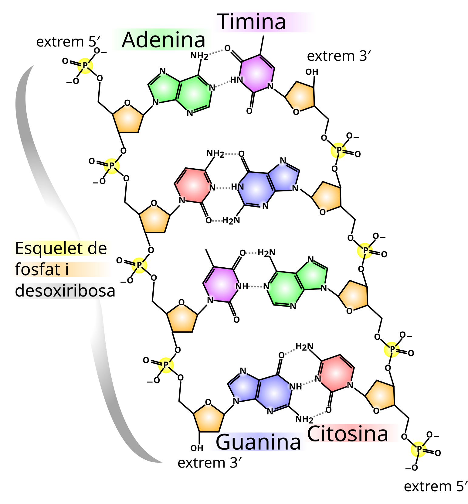
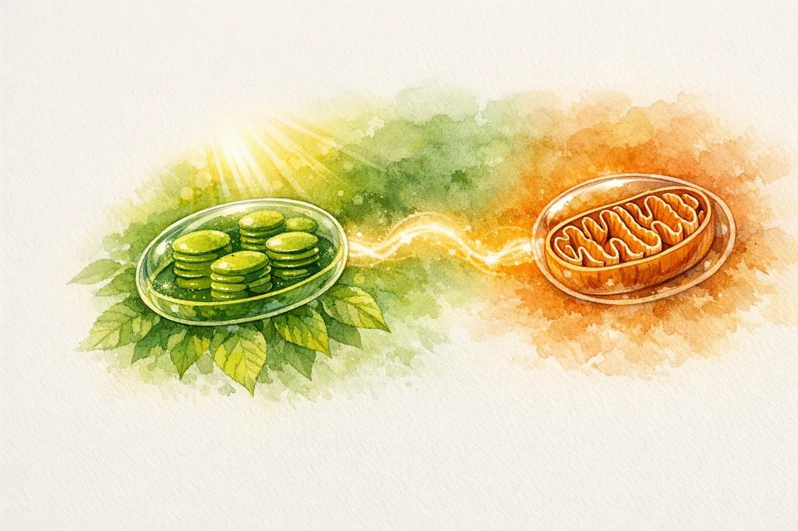
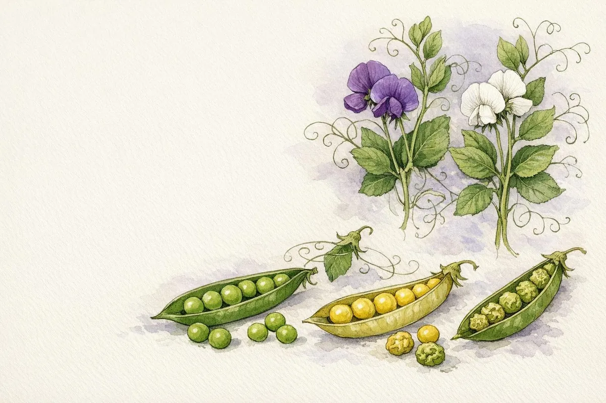
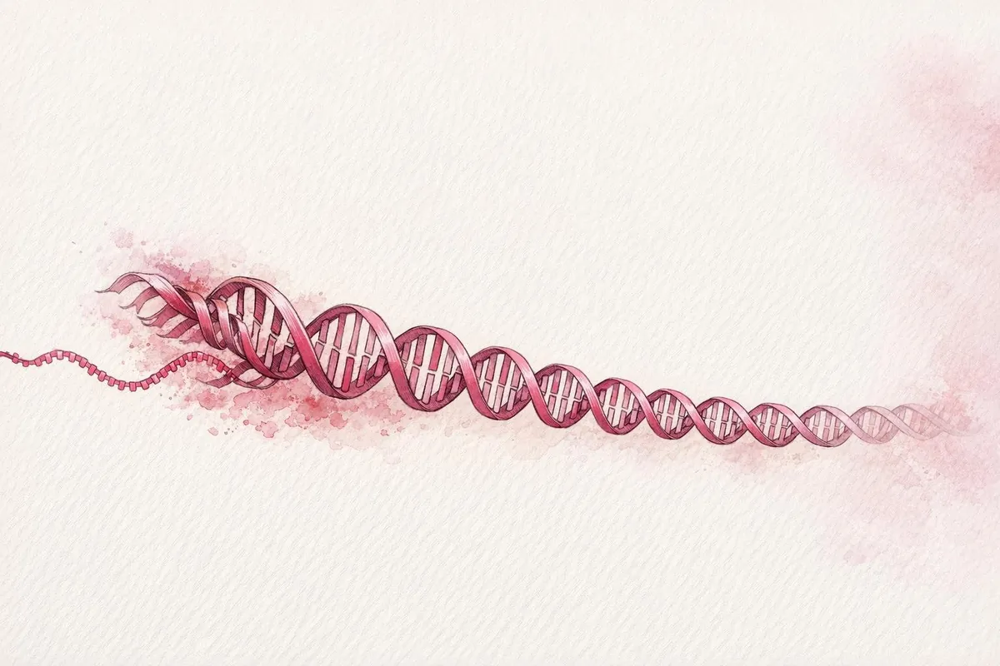
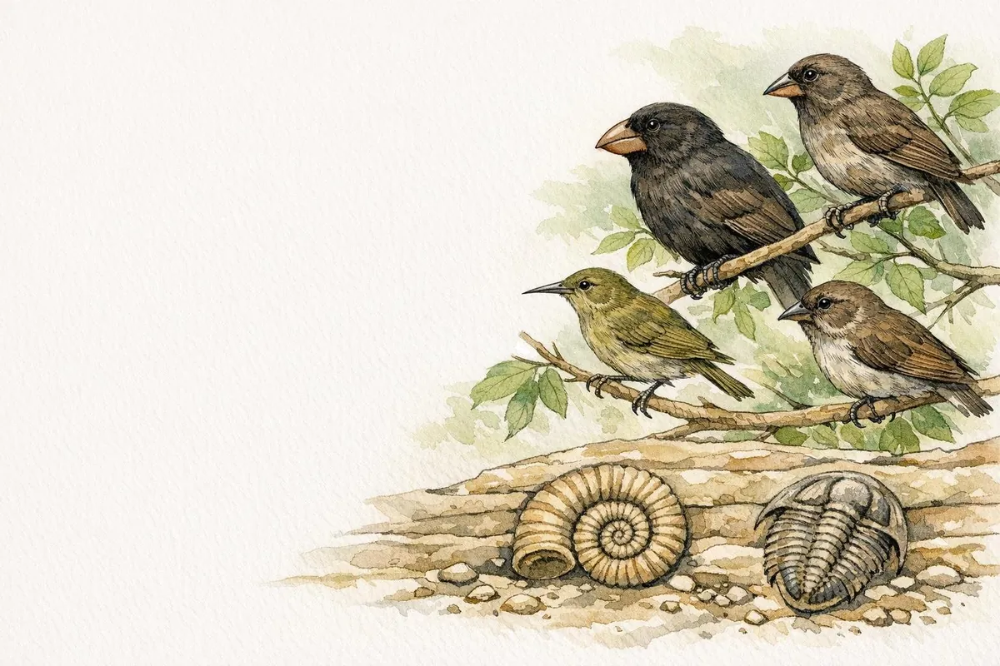
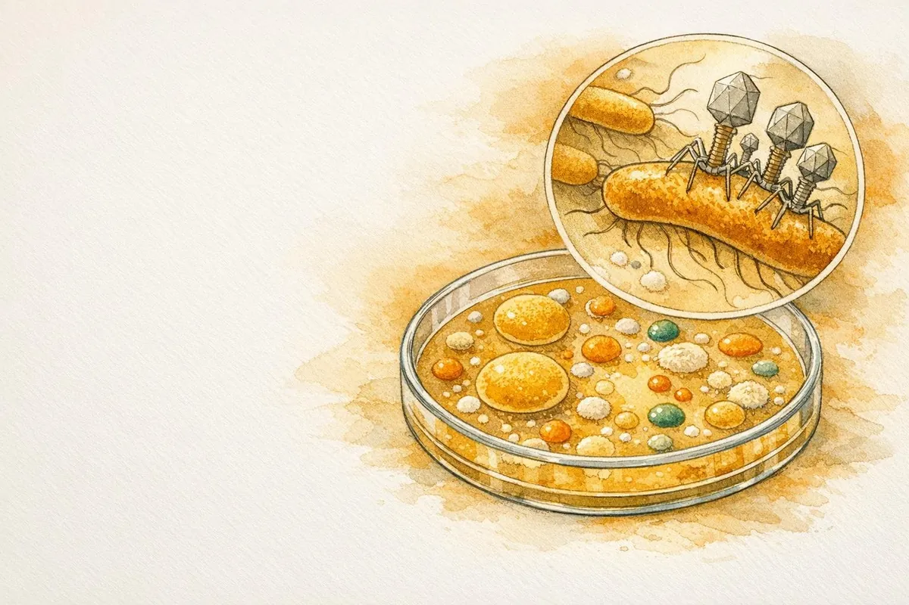
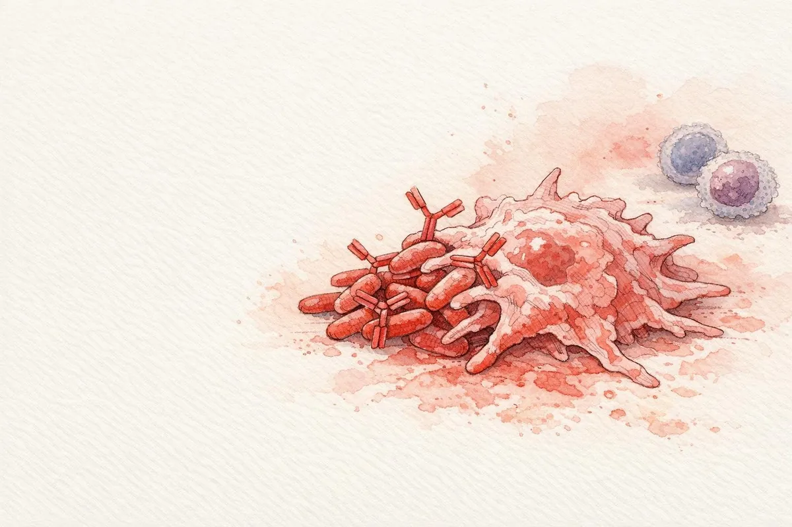

Del bloc «Les biomolècules i el metabolisme» entren aquí la identificació del grup (glúcid, lípid, pròtid o àcid nucleic) a partir de l’estructura, la relació entre estructura i funció, i la classificació per funcions: energètica, estructural, reguladora i portadora d’informació. Les orientacions diuen que no cal reconèixer el subtipus concret d’un glúcid o d’un lípid si l’enunciat només demana el grup; tot i això, les estructures d’aquest tema són les que permeten decidir el grup sense dubtar.
De les proteïnes entra tot el que és de batxillerat: aminoàcids, enllaç peptídic, quatre nivells d’estructura, relació amb la funció, i els enzims (especificitat i factors: substrat, temperatura, pH i inhibidors). L’aigua i les sals són saber de 1r, imbricat: sense elles no s’entén la membrana ni l’osmosi.
Els àcids nucleics es reprenen al tema 5, on les orientacions situen la funció i l’expressió. Aquí n’hi ha prou amb la composició química.
1.1 Aigua i sals minerals
L’aigua és una molècula angular, H–O–H. L’oxigen és més electronegatiu que l’hidrogen i estira els electrons dels enllaços: sobre l’oxigen queda una càrrega parcial negativa (δ−) i sobre cada hidrogen una càrrega parcial positiva (δ+). La molècula és polar. Entre l’hidrogen d’una molècula i l’oxigen d’una altra s’estableix un enllaç d’hidrogen, feble si se’n mira un de sol i decisiu quan n’hi ha milions.
Figura 1.1. La molècula d’aigua és angular (104,5°) i polar. Cada molècula pot fer fins a quatre ponts d’hidrogen (línia discontínua) amb les veïnes: dos pels hidrògens (δ+) i dos pels parells d’electrons de l’oxigen (δ−).
D’aquesta estructura en surten les propietats que la biologia fa servir. És un bon dissolvent de substàncies iòniques i polars (sals, sucres, aminoàcids) i un mal dissolvent de les apolars (greixos). Té una calor específica alta: costa canviar-ne la temperatura, i per això esmorteeix els canvis tèrmics. La calor de vaporització també és alta: evaporar aigua a la superfície d’un organisme en treu molta calor. Les molècules se subjecten entre si (cohesió) i a altres superfícies polars (adhesió); així puja la saba bruta pel xilema. La densitat màxima és a 4 °C i el gel, amb els ponts d’hidrogen ordenats, és menys dens que l’aigua líquida i hi sura: a l’hivern el fons d’un llac no es congela del tot. L’aigua també és un reactiu: entra a la hidròlisi i en surt a la condensació, i és el substrat de la fotòlisi.
Idea clau
Polar no vol dir iònica. L’aigua no està feta d’ions H⁺ i OH⁻ lliures. A 25 °C, només una fracció molt petita està dissociada: [H⁺][OH⁻] = 10⁻¹⁴. El pH és −log[H⁺]. A pH 7, [H⁺] = [OH⁻] = 10⁻⁷ mol·L⁻¹. Un tampó (bicarbonat, fosfat, proteïnes) esmorteix l’addició d’àcid o de base.
Les sals minerals es troben dissoltes, com ions (Na⁺, K⁺, Ca²⁺, Mg²⁺, Cl⁻, HCO₃⁻, HPO₄²⁻), o precipitades (carbonat de calci a closques i ossos, fosfat de calci a l’os, sílice a algunes algues). Dissoltes, mantenen la pressió osmòtica, participen en el potencial de membrana (Na⁺ i K⁺) i en la contracció (Ca²⁺), i són cofactors (Mg²⁺ de molts enzims, el ferro de l’hemoglobina i dels citocroms, Zn²⁺ d’algunes polimerases); el Mg²⁺ és, a més, l’ió central de la clorofil·la. No són «aliment energètic»: no es catabolitzen per obtenir ATP.
Exemple resolt
Un problema diu que el pH d’un medi passa de 7 a 5. Quantes vegades ha canviat [H⁺]?
Resolució
[H⁺] a pH 7 és 10⁻⁷; a pH 5 és 10⁻⁵. El quocient és 10⁻⁵ / 10⁻⁷ = 10². La concentració de protons és 100 vegades més gran. No és «dos punts més àcid» com si el pH fos una escala lineal.
De la polaritat a cada propietat
El pont d’hidrogen no és un enllaç covalent. És una atracció entre el δ+ d’un hidrogen ja unit a un àtom electronegatiu (O o N) i un parell d’electrons d’un altre O o N. A l’aigua, cada molècula en pot fer fins a quatre. Per això el gel és una xarxa oberta, menys densa que el líquid, i per això fondre gel o evaporar aigua demana molta energia: cal trencar molts ponts, no només separar molècules apolars.
Propietat
Què la causa
On es nota
Dissolvent de iònics i polars
envolta els ions i els grups polars
citosol, sang, saba
Mal dissolvent d’apolars
els ponts entre aigües són més forts que l’atracció per un greix
els lípids fan gotes o bicapes
Calor específica alta
part de l’energia es gasta en trencar ponts, no en accelerar molècules
la temperatura d’un organisme canvia a poc a poc
Calor de vaporització alta
cal separar del tot les molècules
la suor refreda
Cohesió i adhesió
ponts entre molècules d’aigua i amb superfícies polars
ascens de la saba al xilema
Gel menys dens que el líquid
xarxa hexagonal oberta
el gel sura i aïlla l’aigua de sota
Les sals dissoltes són ions i no aporten energia: no es poden oxidar per fer ATP. El que fan és elèctric i osmòtic. El Na⁺ i el K⁺ mantenen el potencial de membrana. El Ca²⁺ és el senyal de la contracció i de moltes exocitosis. El Mg²⁺ és a la clorofil·la i forma el complex Mg-ATP, que és la forma d’ATP que fan servir els enzims. El ferro és al grup hemo i als centres ferro-sofre de la cadena respiratòria. Precipitades, les sals són esquelet: CaCO₃ a les closques, hidroxiapatita (fosfat de calci) a l’os.
Exemple resolt
El pH d’un suc gàstric és 2 i el del citosol, 7. Quantes vegades és més gran [H⁺] a l’estómac?
Resolució
A pH 2, [H⁺] = 10⁻² mol·L⁻¹. A pH 7, [H⁺] = 10⁻⁷. El quocient és 10⁻² / 10⁻⁷ = 10⁵. Cent mil vegades, no «cinc vegades». El pH és logarítmic: un punt són deu vegades.
Exercici tipus PAU resolt
Una dissolució de glucosa 0,30 mol·L⁻¹ i una de NaCl 0,15 mol·L⁻¹ es posen en contacte a través d’una membrana permeable només a l’aigua. Cap a on va l’aigua, aproximadament?
Mostra la resolució
La glucosa no es dissocia: 0,30 mol de partícules per litre. El NaCl es dissocia en Na⁺ i Cl⁻: 0,15 × 2 = 0,30 mol de partícules per litre. Les dues cares tenen una concentració osmòtica semblant i el flux net és proper a zero. Si s’hagués comparat amb NaCl 0,30 mol·L⁻¹, l’aigua aniria cap a la sal, que té el doble de partícules.
Exemple resolt
Per què un llac es glaça per dalt i no sencer, i què hi té a veure el fet que la densitat màxima de l’aigua sigui a 4 °C?
Resolució
En refredar-se fins a 4 °C l’aigua es fa més densa i baixa al fons. Per sota de 4 °C es fa menys densa i es queda a la superfície, on acaba glaçant-se. El gel, encara menys dens, sura i aïlla. El fons pot continuar líquid i amb vida. Si el gel fos més dens, s’enfonsaria i el llac es congelaria de baix a dalt.
Un tampó no impedeix que el pH canviï: en redueix el canvi. El parell bicarbonat / àcid carbònic de la sang n’és l’exemple. Si s’afegeix un àcid, el H⁺ es combina amb HCO₃⁻ i no queda lliure. Si s’afegeix una base, l’àcid carbònic cedeix H⁺. El pH es mou poc mentre quedi parell. Fora del rang del parell, el tampó s’esgota i el pH cau o puja de cop. Les proteïnes també tamponen, pels grups laterals ionitzables.
Exercici tipus PAU resolt
Es compara la pujada de temperatura de 100 g d’aigua i de 100 g d’oli en aportar la mateixa energia. L’aigua puja menys. Quina propietat és, i per què no es diu «calor de vaporització»?
Mostra la resolució
És la calor específica: energia per pujar un grau, sense canvi d’estat. La calor de vaporització és l’energia per evaporar, a temperatura constant. Aquí no hi ha evaporació; hi ha escalfament. La causa, en l’aigua, és que part de l’energia trenca ponts d’hidrogen en lloc d’accelerar molècules.
Exemple resolt
Una cèl·lula té [K⁺] interior alt i [Na⁺] interior baix. Aquests ions són sals precipitades o dissoltes, i aporten energia química?
Resolució
Dissoltes. No estan en un cristall. No s’oxiden per fer ATP: l’energia del gradient és potencial electroquímic, que la cèl·lula ha pagat abans amb la bomba, no una reserva com el glicogen. Confondre el gradient amb un nutrient és l’error.
1.2 Glúcids
Els glúcids (hidrats de carboni) són polihidroxialdehids o polihidroxicetones i els polímers que en deriven. Molts responen a la fórmula empírica Cm(H2O)n, però hi ha excepcions (la desoxiribosa, C5H10O4). Cada monosacàrid porta diversos grups hidroxil i un grup carbonil: aldehid (aldoses) o cetona (cetoses). Es classifiquen pel nombre de monosacàrids units: monosacàrids, disacàrids, oligosacàrids i polisacàrids.
Els monosacàrids de més pes a la PAU són les pentoses (5 carbonis: ribosa i desoxiribosa, als àcids nucleics) i les hexoses (6 carbonis: glucosa, fructosa, galactosa). En dissolució, les pentoses i les hexoses tanquen un anell. La glucosa forma un anell de sis (piranosa). El carboni que era el carbonil passa a ser el carboni anomèric (el C1 a les aldoses com la glucosa; el C2 a la fructosa). Si l’OH d’aquest carboni queda cap avall a la representació de Haworth de la D-glucosa, l’isòmer és l’alfa; si queda cap amunt, és el beta. Els altres substituents de la D-glucosa no canvien: OH del C2 avall, del C3 amunt, del C4 avall, i el CH2OH del C5 amunt.
Figura 1.2. Anòmers α i β de la D-glucopiranosa en projecció de Haworth. Només canvia la posició de l’OH del carboni anomèric (C1): avall en l’α i amunt en la β. Els hidrògens no s’han dibuixat.
Dos monosacàrids s’uneixen per un enllaç glicosídic, amb pèrdua d’aigua. L’enllaç es descriu amb dues dades: l’anòmer (α o β) i quins carbonis queden lligats. La maltosa és α-D-glucosa-(1→4)-D-glucosa. La lactosa és β-D-galactosa-(1→4)-D-glucosa: la galactosa és l’epímer en C4 de la glucosa, i per això l’OH del C4 mira cap amunt. La sacarosa és α-D-glucosa-(1→2)-β-D-fructosa: els dos carbonis anomèrics queden ocupats i la sacarosa no és reductora. Maltosa i lactosa sí que ho són, perquè conserven un anomèric lliure. La fructosa del disacàrid és la β-D-fructofuranosa, un anell de cinc.
Figura 1.3. Tres disacàrids. La maltosa i la lactosa conserven un carboni anomèric lliure i són reductores; a la sacarosa l’enllaç uneix els dos carbonis anomèrics (C1 de la glucosa i C2 de la fructosa) i no ho és.
Els polisacàrids de reserva són l’amilosa i l’amilopectina (el midó vegetal) i el glicogen (animals i fongs). L’amilosa és una cadena d’α(1→4), helicoïdal. L’amilopectina i el glicogen hi afegeixen ramificacions α(1→6); el glicogen en porta més. La cel·lulosa és β(1→4): les cadenes queden estirades, s’enllacen per ponts d’hidrogen i formen la paret vegetal. La quitina, a la paret dels fongs i a l’exosquelet dels artròpodes, és un polímer de N-acetilglucosamina amb enllaços β(1→4).
Idea clau
La funció depèn de l’enllaç, no només de la fórmula C6H12O6. α(1→4) es pot mobilitzar (reserva). β(1→4) fa fibres (estructura). Els enzims que trenquen l’un no trenquen l’altre: nosaltres digerim el midó i no la cel·lulosa.
Funcions que cal saber assignar: energètica (glucosa, midó, glicogen), estructural (cel·lulosa, quitina) i de reconeixement (oligosacàrids del glicocàlix). La ribosa i la desoxiribosa formen part dels nucleòtids, però el material genètic és l’àcid nucleic, no el glúcid.
Exercici tipus PAU resolt
Us donen tres molècules. La A és una cadena llarga de glucoses unides per β(1→4). La B és glicerol esterificat amb tres àcids grassos. La C és una cadena d’aminoàcids. Digueu a quin grup pertany cadascuna i quina és de reserva energètica en animals.
Mostra la resolució
A és un glúcid (cel·lulosa): estructural, no de reserva. B és un lípid saponificable (triacilglicerol): és la reserva energètica principal dels animals, als adipòcits. C és un pròtid (pèptid o proteïna). La de reserva en animals és, per tant, la B; l’altra reserva animal, el glicogen, no és a la llista.
Reserva i estructura no són el mateix enllaç
Polisacàrid
Enllaç
On
Funció
Amilosa
α(1→4)
midó vegetal
reserva
Amilopectina i glicogen
α(1→4) i ramificacions α(1→6)
plantes / animals i fongs
reserva; el glicogen és més ramificat
Cel·lulosa
β(1→4)
paret vegetal
estructura
Com es classifica un glúcid a la prova
Molècula
Unitats
Enllaç
Redueix?
Funció que cal dir
Glucosa, fructosa, galactosa
1 hexosa
—
sí
energia; la glucosa és el combustible de la glucòlisi
Ribosa / desoxiribosa
1 pentosa
—
sí
dins l’RNA / el DNA
Maltosa
2 glucoses
α(1→4)
sí
producte de la digestió del midó
Lactosa
galactosa + glucosa
β(1→4)
sí
sucre de la llet
Sacarosa
glucosa + fructosa
α1↔β2
no
transport a la saba elaborada
Amilosa
moltes glucoses
α(1→4)
—
reserva vegetal, sense ramificar
Amilopectina, glicogen
moltes glucoses
α(1→4) i α(1→6)
—
reserva; el glicogen és més ramificat
Cel·lulosa
moltes glucoses
β(1→4)
—
paret vegetal
Quitina
N-acetilglucosamina
β(1→4)
—
paret fúngica i exosquelet
Un sucre redueix el reactiu de Fehling (o de Tollens) si té un carboni anomèric lliure, capaç d’obrir-se i mostrar el carbonil. A la sacarosa els dos anomèrics estan ocupats en l’enllaç: no redueix. A la maltosa i a la lactosa en queda un de lliure: sí que redueixen. A la PAU n’hi ha prou amb aquest criteri; no cal memoritzar el color del precipitat si l’enunciat no el dona.
A la Haworth de la D-glucopiranosa el CH₂OH del C5 va sempre cap amunt. Això no decideix α o β. El que ho decideix és l’OH del C1: avall és α (trans respecte del CH₂OH), amunt és β (cis). L’oxigen de l’anell és un vèrtex, entre el C5 i el C1, no un àtom al centre de l’hexàgon.
Exercici tipus PAU resolt
Us donen una cadena de glucoses amb enllaços β(1→4) i una altra amb α(1→4) i ramificacions α(1→6). Digueu el nom de cadascuna, on es troba i si un humà la pot fer servir com a nutrient.
Mostra la resolució
La primera és cel·lulosa: paret de les cèl·lules vegetals. Els nostres enzims digestius no trenquen el β(1→4); no és nutrient per a nosaltres (els remugants se’n surten amb microorganismes). La segona, si és molt ramificada i animal, és glicogen; si ho és menys i vegetal, amilopectina. Les dues són reserva i sí que les digerim, perquè l’amilasa trenca l’α(1→4).
Exemple resolt
Per què el glicogen és més ramificat que l’amilopectina, si tots dos són reserva de glucosa?
Resolució
Cada ramificació és un extrem no reductor per on la glicogen fosforilasa pot començar a alliberar glucosa-1-fosfat. Més ramificacions volen dir més extrems alhora i una mobilització més ràpida, que és el que necessita el múscul (i també una síntesi més ràpida). En el midó la mobilització no ha de ser tan ràpida i l’amilopectina té menys ramificacions (una cada 24–30 glucoses, davant d’una cada 8–12 al glicogen). La funció de reserva és la mateixa; la velocitat, no.
Exemple resolt
Una molècula té fórmula aproximada Cn(H2O)n, diversos OH i un grup aldehid. És un lípid, un monosacàrid o un aminoàcid?
Resolució
Monosacàrid (una aldosa). Un aminoàcid portaria N. Un lípid seria pobre en oxigen i insoluble en aigua. La fórmula «hidrat de carboni» és una pista, no una definició estricta: la desoxiribosa en té un oxigen menys i continua sent un glúcid.
La prova sovint dona tres fórmules i demana el grup, no el nom. El criteri curt és: diversos OH i un carbonil, glúcid; cadenes llargues d’hidrocarbur, lípid; un N en un grup amino i un carboxil, aminoàcid o pèptid; una base, un sucre i un fosfat, nucleòtid. Dins dels glúcids, el nombre d’unitats separa mono, di i poli, i l’enllaç α o β separa reserva i estructura.
Exercici tipus PAU resolt
La sacarosa no dona positiu amb Fehling i la maltosa sí. Les dues són disacàrids de mida semblant. On és la diferència estructural?
Mostra la resolució
A la sacarosa l’enllaç ocupa el carboni anomèric de la glucosa i el de la fructosa. No queda cap anomèric lliure que pugui obrir-se i mostrar el carbonil. A la maltosa l’enllaç és α(1→4): el C1 d’una glucosa queda lliure. El test no mesura la mida; mesura aquest carboni.
Exemple resolt
Per què la cel·lulosa fa fibres rectes i l’amilosa una hèlix, si totes dues són cadenes de glucosa?
Resolució
Per la geometria de l’enllaç. El β(1→4) gira cada glucosa 180° respecte de l’anterior i la cadena queda estirada, bona per fer ponts d’hidrogen amb la cadena veïna. L’α(1→4) corba la cadena i en surt una hèlix, bona per empaquetar reserva i dolenta per fer una fibra. L’enzim que encaixa en una geometria no encaixa en l’altra.
Exercici tipus PAU resolt
Es donen tres polisacàrids de glucosa. Un no el digerim, un és la reserva de les plantes i un és la reserva del múscul. Poseu el nom, l’enllaç decisiu i el compartiment o el teixit.
Mostra la resolució
El que no digerim és la cel·lulosa, β(1→4), a la paret vegetal. La reserva de les plantes és el midó (amilosa i amilopectina), α(1→4) i, en l’amilopectina, ramificacions α(1→6), als plastidis. La reserva del múscul és el glicogen, els mateixos enllaços amb més ramificacions, al citosol. El fet de ser glucosa no decideix la funció. La decideix l’enllaç i el lloc.
1.3 Lípids
Els lípids no es defineixen per un monòmer únic sinó per ser insolubles en aigua i solubles en dissolvents orgànics. Es parteixen en dos grups. Els saponificables porten àcids grassos i, amb una base forta, fan sabó (una sal de l’àcid gras). Els insaponificables no en porten.
Un àcid gras és una cadena hidrocarbonada amb un grup carboxil. Si només té enllaços simples, és saturat i la cadena queda recta; si té un o més dobles enllaços cis, és insaturat i fa un colze. A temperatura ambient, els saturats llargs tendeixen a ser sòlids (molts greixos animals) i els insaturats, líquids (molts olis vegetals). Això és una tendència, no una llei absoluta.
El triacilglicerol (triglicèrid) és glicerol amb tres àcids grassos units per enllaços èster. És apolar, es guarda en gotes lipídiques del citoplasma (als adipòcits del teixit adipós i a moltes llavors) i rendeix més del doble d’energia per gram que el glicogen, a més de no retenir aigua. No forma membranes.
El fosfolípid és glicerol amb dos àcids grassos i, al tercer carboni, un fosfat que sovint porta un grup polar (colina, serina, etanolamina). El cap (glicerol + fosfat + grup) és hidròfil; les cues, hidròfobes. La molècula és amfipàtica. En aigua les cues fugen de l’aigua i els caps hi contacten: es forma una bicapa, la base de les membranes. Les ceres són èsters d’un àcid gras i un alcohol llarg; impermeabilitzen fulles, plomes i pèl.
Figura 1.4. Triacilglicerol (tres àcids grassos esterificats amb glicerol: apolar, de reserva) i fosfolípid (dos àcids grassos i un grup fosfat amb un grup polar: amfipàtic, forma bicapes).
Entre els insaponificables, els esteroides tenen quatre anells fusionats. El colesterol modula la fluïdesa de la membrana animal i és precursor de sals biliars, vitamina D i hormones esteroides (sexuals, cortisol). Els terpens, derivats de l’isoprè, inclouen pigments com el carotè. Ni el colesterol ni els terpens es saponifiquen.
Error típic
Dir que «tots els lípids fan membranes» o que «el colesterol és un greix». El colesterol és un esteroide insaponificable. Qui fa la bicapa són els fosfolípids (i, en arqueus, altres lípids de membrana).
Saponificables i insaponificables
Porta àcids grassos?
Exemples
Funció a batxillerat
Àcids grassos
ells mateixos
palmític (saturat), oleic (insaturat)
peces dels lípids saponificables; combustible
Triacilglicerols
tres
greixos i olis
reserva. No fan membranes
Fosfolípids
dos, més un fosfat
fosfatidilcolina
bicapa
Ceres
un, unit a un alcohol llarg
cutícula de la fulla
impermeabilitzar
Esteroides
no
colesterol, hormones sexuals, cortisol
membrana i senyal
Terpens
no
carotens, algunes vitamines liposolubles
pigments, precursors
Saponificar és hidrolitzar els èsters amb una base forta i obtenir la sal de l’àcid gras, que és el sabó. Si no hi ha àcid gras, no hi ha sabó: el colesterol és insaponificable encara que sigui un lípid de membrana. Dir «greix» del colesterol és l’error de nomenclatura més habitual.
La fluïdesa de la bicapa puja amb la temperatura i amb els dobles enllaços cis, que fan un colze i impedeixen que les cues s’empaquetin. El colesterol fa de tampó: a temperatura alta limita el moviment de les cues i a temperatura baixa evita que es rigiditzin del tot. No és ni «sempre fluidifica» ni «sempre endureix».
Exercici tipus PAU resolt
Tres molècules: A, glicerol amb tres cues saturades; B, glicerol amb dues cues i un fosfat unit a colina; C, quatre anells i una cadena curta, sense àcid gras. Quina fa bicapes, quina és reserva i quina és insaponificable?
Mostra la resolució
B fa bicapes: és un fosfolípid, amfipàtic. A és un triacilglicerol, reserva, apolar, saponificable. C és un esteroide (el colesterol encaixa en aquesta descripció), insaponificable. C modula la membrana però no en forma la bicapa.
Exemple resolt
Per què un gram de triacilglicerol dona més energia que un gram de glicogen, i per què a més no arrossega aigua?
Resolució
Les cues són hidrocarburs molt reduïts: en oxidar-les s’alliberen més electrons per gram que oxidant un sucre, ja parcialment oxidat. I com que són apolars, no s’hidraten. El glicogen, ple d’OH, reté unes tres vegades el seu pes en aigua. La reserva grassa és més lleugera per a la mateixa energia, que és el que li convé a un animal que s’ha de moure.
Exemple resolt
Un oli es posa al frigorífic i es torna tèrbol, mentre un altre continua líquid. Quina diferència d’àcids grassos ho explica, sense convertir-ho en una llei absoluta?
Resolució
El que es tèrbola té més proporció de cadenes saturades i llargues, que s’empaqueten i solidifiquen abans. El que continua líquid té més insaturacions cis. És una tendència: la longitud també hi compta, i una sola mostra no identifica l’espècie vegetal.
Exercici tipus PAU resolt
Un experiment escalfa una membrana i mesura la fluïdesa. Després se’n treu el colesterol i es repeteix a la mateixa temperatura alta. La fluïdesa puja. Quina funció del colesterol, de les dues que té, s’ha vist aquí?
Mostra la resolució
La de limitar el moviment quan la temperatura és alta. L’altra funció, evitar la rigidificació a baixa temperatura, aquest experiment no la mesura: només hi ha una temperatura, i és alta. No es pot concloure que el colesterol «sempre endureix» ni «sempre fluidifica».
Exemple resolt
Un sabó es fa bullint greix amb NaOH. Quines molècules del greix reaccionen, i per què un esteroide de la mateixa mostra no en faria?
Resolució
Reaccionen els èsters dels triacilglicerols: s’hidrolitzen i l’àcid gras queda com a sal sòdica, el sabó. L’esteroide no té àcid gras esterificat. Es queda a la fracció que no saponifica. La prova fa servir aquest fet per classificar, no per demanar el protocol industrial.
1.4 Proteïnes i l’enllaç peptídic
Els pròtids inclouen aminoàcids, pèptids i proteïnes. Un aminoàcid proteic té un carboni α unit a un H, un grup carboxil, un grup amino i una cadena lateral R. N’hi ha vint de codificats. A pH proper a 7 el carboxil està desprotonat (COO⁻, pKa al voltant de 2) i l’amino protonat (NH₃⁺, pKa al voltant de 9–10): la forma és un zwitterió, amb càrrega neta que depèn també de R. No és correcte dibuixar-los com a NH2–CHR–COOH a pH fisiològic.
Figura 1.5. Un aminoàcid a pH fisiològic és un zwitterió (–NH₃⁺ i –COO⁻). L’enllaç peptídic es forma per condensació entre el carboxil d’un aminoàcid i l’amino del següent.
L’enllaç peptídic es forma per condensació entre el carboxil d’un aminoàcid i l’amino del següent, i es perd aigua. És un enllaç amida, pla, amb caràcter parcial de doble enllaç: no gira lliurement i el més habitual és la forma trans. La cadena té un extrem N (amino lliure) i un extrem C (carboxil lliure). Per conveni s’escriu N → C. Un oligopèptid té pocs residus; a partir d’unes desenes es parla de polipèptid. «Proteïna» es reserva per a la cadena o el conjunt de cadenes amb estructura tridimensional i funció.
L’estructura primària és la seqüència. La secundària és el plegament local de l’esquelet, estabilitzat per ponts d’hidrogen entre N–H i C=O de l’enllaç peptídic, no entre les cadenes R. A l’hèlix α, el pont uneix el residu i amb el i+4 i la cadena fa una hèlix dextrogira. Al full β, els ponts uneixen trams veïns, paral·lels o antiparal·lels. La terciària és el plegament global d’una cadena: interaccions hidròfobes de les R apolars cap a l’interior (en medi aquós), ponts d’hidrogen, ponts iònics i, si hi ha cisteïnes, ponts disulfur (covalent, –S–S–). La quaternària és l’associació de dues o més cadenes (l’hemoglobina en té quatre). Moltes proteïnes no en tenen.
Figura 1.6. Els quatre nivells d’estructura d’una proteïna. La desnaturalització destrueix la secundària, la terciària i la quaternària; la primària (la seqüència) es conserva.
La funció depèn de la forma. L’hemoglobina transporta O2 perquè l’hemo, amb Fe²⁺, queda col·locat dins el plegament. Els anticossos reconeixen un epítop perquè la regió variable encaixa. El col·lagen fa fibres. Una mutació d’un sol residu pot desfer el plegament o el centre actiu. La desnaturalització (calor, pH extrem, detergents) perd la funció sense trencar els enllaços peptídics. De vegades, si es treu l’agent, la cadena es replega sola: la informació del plegament és a la seqüència.
Exemple resolt
Una proteïna perd l’activitat a 70 °C i, en refredar-se, no la recupera. S’ha hidrolitzat?
Resolució
No. La hidròlisi trencaria enllaços peptídics i faria aminoàcids lliures; caldria un enzim o un àcid fort una estona llarga. Aquí s’ha desnaturalitzat. Que no es renaturalitzi només vol dir que el replegament no ha estat espontani en aquelles condicions, no que la primària hagi canviat.
Quin enllaç aguanta cada nivell
Nivell
Què és
Enllaços que el mantenen
Es perd en desnaturalitzar?
Primària
seqüència, escrita N → C
enllaç peptídic (amida, covalent)
no
Secundària
hèlix α i full β
ponts d’hidrogen de l’esquelet, no de les cadenes R
sí
Terciària
plegament d’una cadena
hidròfobs, ponts d’hidrogen i iònics de les R, ponts disulfur
sí; el disulfur només si es redueix
Quaternària
dues o més cadenes
les mateixes interaccions febles, i de vegades disulfur
sí
L’enllaç peptídic és pla perquè el nitrogen i el carbonil comparteixen electrons: té caràcter parcial de doble enllaç i gairebé no gira. El gir del plegament és als enllaços del carboni α. Per això una cadena no és un fil flexible a cada àtom. A pH 7 els extrems són NH₃⁺ i COO⁻, no NH₂ i COOH. Dibuixar la forma neutra és un error de pH, no de connectivitat.
Entre dos aminoàcids es perd una molècula d’aigua. Un pèptid de n residus té n − 1 enllaços peptídics i, en formar-se, ha perdut n − 1 aigües. Hidrolitzar-lo les torna. La desnaturalització no hidrolitza: la cadena continua sencera i, si les condicions ho permeten, es pot replegar perquè la informació és a la seqüència.
Exercici tipus PAU resolt
Una proteïna de 100 aminoàcids es bull. Després es mesura i continua essent una sola cadena de 100 residus, però ja no uneix el substrat. Què s’ha trencat i què no?
Mostra la resolució
No s’han trencat els enllaços peptídics: la primària és la mateixa i no han aparegut pèptids petits. S’ha perdut el plegament (secundària, terciària i, si n’hi havia, quaternària) i, amb ell, la forma del centre actiu. És desnaturalització, no hidròlisi.
Exemple resolt
L’hemoglobina té quatre cadenes i un grup hemo amb Fe²⁺ a cadascuna. Quins nivells d’estructura hi són, i el ferro és un aminoàcid?
Resolució
Hi ha primària, secundària i terciària de cada cadena, i quaternària perquè n’hi ha quatre. El ferro no és un aminoàcid: és part del grup prostètic hemo, no proteic. Sense el Fe²⁺ no uneix O₂, encara que la globina estigui ben plegada. Si el ferro passa a Fe³⁺ (metahemoglobina) tampoc no transporta bé l’oxigen.
Exemple resolt
Dos residus de cisteïna formen un pont disulfur. És un pont d’hidrogen? Es desfà escalfant suaument?
Resolució
No. És un enllaç covalent –S–S–. Els ponts d’hidrogen es trenquen amb calor moderada o amb urea. El disulfur demana un reductor. Per això algunes proteïnes extracel·lulars, riques en disulfurs, aguanten millor el medi de fora que una proteïna només plegada amb interaccions febles.
Exercici tipus PAU resolt
Un pèptid té 12 aminoàcids. Quants enllaços peptídics té, quantes molècules d’aigua s’han perdut en formar-lo, i quin extrem s’escriu a l’esquerra?
Mostra la resolució
11 enllaços i 11 aigües: sempre un menys que el nombre de residus, perquè cada enllaç uneix dos residus i el primer no s’uneix a un de previ. A l’esquerra, l’extrem amino (N). A la dreta, el carboxil (C). Escriure’l al revés canvia quin residu es considera el primer.
Exemple resolt
La cisteïna i la serina tenen totes dues un grup que pot fer ponts. Per què només les cisteïnes fan un enllaç covalent entre cadenes laterals?
Resolució
Perquè el grup tiol (–SH) de dues cisteïnes es pot oxidar a disulfur (–S–S–), covalent. El OH de la serina fa ponts d’hidrogen, febles, no un enllaç covalent equivalent en les condicions de la cèl·lula. Per això una proteïna rica en cisteïna pot aguantar condicions que en desfan una de plegada només amb ponts d’hidrogen.
1.5 Enzims
Els enzims són proteïnes (o, en alguns casos, RNA catalític: ribozims) que acceleren una reacció abaixant l’energia d’activació. No desplacen l’equilibri i no es consumeixen: en surten igual que hi han entrat. El substrat es fixa al centre actiu, una butxaca amb una forma i una càrrega complementàries. L’ajust induït precisa la imatge de «clau i pany»: el centre es tanca una mica sobre el substrat. L’especificitat pot ser d’un sol substrat o d’un grup (l’hexocinasa admet diverses hexoses; la glucocinasa, pràcticament només glucosa).
La velocitat creix amb la concentració de substrat fins que els centres estan ocupats: s’arriba a Vmax. La Km és la concentració de substrat a la qual la velocitat és la meitat de Vmax. Una Km baixa vol dir que l’enzim treballa de pressa ja amb poc substrat; no és «l’afinitat» en sentit estricte en tots els mecanismes, però a batxillerat es llegeix així. La temperatura accelera la reacció fins a l’òptim; per damunt, desnaturalitza. Cada enzim té un pH òptim (la pepsina, àcid; la tripsina, bàsic; molts enzims cel·lulars, prop de 7).
Figura 1.7. Velocitat inicial d’un enzim en funció de la concentració de substrat. Un inhibidor competitiu manté la Vmax i augmenta la Km aparent; un de no competitiu fa baixar la Vmax.
Un inhibidor competitiu s’assembla al substrat i ocupa el centre actiu. Es venç pujant el substrat: Vmax no canvia i la Km aparent puja. Un inhibidor no competitiu es lliga a un altre lloc, deforma el centre i baixa Vmax; el substrat no el desplaça. Els cofactors són ions o molècules no proteiques necessàries per a l’activitat. Si la molècula orgànica queda fortament unida, se’n diu grup prostètic (l’hemo). Les vitamines del complex B són, en bona part, precursors de coenzims (la niacina, de NAD⁺; la riboflavina, de FAD).
Idea clau
Regular el metabolisme, a la pràctica, és regular enzims: canviar-ne la quantitat (expressió gènica) o l’activitat (inhibidors, activadors, modificació covalent, efecte al·lostèric). L’al·lostèria, en què una molècula es lliga fora del centre actiu i canvia l’afinitat, és el nivell just de batxillerat; no cal el model de Monod.
Per ampliar · no és matèria d’examen
La cinètica de Michaelis-Menten i el gràfic de Lineweaver-Burk no es demanen. Sí que es demana llegir un gràfic velocitat-substrat o velocitat-temperatura i dir què passa amb Vmax i, si l’enunciat en parla, amb la Km.
Exercici tipus PAU resolt
Un gràfic mostra la velocitat d’un enzim en funció de la concentració de substrat, i una segona corba obtinguda amb el mateix enzim en presència d’un fàrmac. Les dues corbes arriben al mateix sostre, però la segona necessita més substrat per assolir la meitat d’aquella velocitat màxima. De quin tipus d’inhibició es tracta? Justifiqueu-ho amb el que es llegeix al gràfic.
Mostra la resolució
És una inhibició competitiva. El sostre comú vol dir que la velocitat màxima, Vmax, no ha canviat: amb prou substrat, l’enzim arriba a la mateixa velocitat que sense fàrmac. El fet que calgui més substrat per arribar a Vmax/2 vol dir que la Km aparent ha pujat. Això encaixa amb un fàrmac que ocupa el centre actiu i que el substrat pot desplaçar. Si el sostre hagués baixat i no es recuperés en augmentar el substrat, la inhibició no seria competitiva.
Tres maneres de fer baixar la velocitat
On es lliga
Vmax
Km aparent
Es reverteix pujant el substrat?
Inhibidor competitiu
centre actiu
igual
puja
sí
Inhibidor no competitiu
un altre lloc
baixa
no canvia, en el model simple
no
Temperatura per damunt de l’òptim
no és un inhibidor: desnaturalitza
cau
—
no; baixar la temperatura no sempre replega la proteïna
pH lluny de l’òptim
canvia càrregues del centre
cau
—
tornar al pH òptim sovint sí, si no s’ha desnaturalitzat
Llegiu el gràfic abans d’escriure el nom. Eix horitzontal: concentració de substrat. Eix vertical: velocitat inicial. Si les dues corbes (amb i sense fàrmac) arriben al mateix sostre, la Vmax es conserva i l’inhibidor és competitiu. Si el sostre de la corba amb fàrmac és més baix, no ho és. La temperatura no es representa en aquest gràfic: un eix de temperatura dona una campana, amb pujada (més xocs) i caiguda (desnaturalització).
La Km es llegeix a l’eix horitzontal, a l’altura Vmax/2. No és una velocitat. Una Km alta vol dir que cal molt substrat per anar a mitja velocitat: a batxillerat es diu que l’afinitat aparent és baixa. L’enzim no «prefereix» res en sentit psicològic; simplement el complex es forma menys a igualtat de concentració.
Exemple resolt
La pepsina treballa a pH 2 i la tripsina a pH 8. Es pot concloure que a pH 8 la pepsina s’ha hidrolitzat?
Resolució
No. A pH 8 està fora de l’òptim: les càrregues del centre actiu no són les que reconeixen el substrat. Pot continuar sencera. La hidròlisi seria trencar enllaços peptídics, que no és el que fa un canvi de pH d’un experiment curt. Si en tornar a pH 2 recupera l’activitat, no s’havia desnaturalitzat de manera irreversible.
Exemple resolt
El NAD⁺ és un coenzim de moltes deshidrogenases i prové de la niacina. És una proteïna? Es consumeix a la reacció?
Resolució
No és una proteïna: és un dinucleòtid, una molècula orgànica petita. La deshidrogenasa sí que és la proteïna. El NAD⁺ no es consumeix en el sentit d’un substrat que desaparegui del metabolisme: es redueix a NADH i una altra reacció el torna a oxidar. Dins d’una sola reacció, sí que és un substrat secundari; al cicle, es regenera. Per això se’n diu coenzim i no aliment.
Exercici tipus PAU resolt
Dues corbes de velocitat contra temperatura arriben al màxim a 37 °C i cauen a 60 °C. Una és amb inhibidor competitiu i l’altra sense, a la mateixa concentració de substrat, no saturant. La corba amb inhibidor queda per sota, però totes dues cauen a 60 °C. La caiguda a 60 °C és inhibició competitiva?
Mostra la resolució
No. La caiguda per sobre de l’òptim és desnaturalització: es perd el plegament. Li passa a les dues corbes. L’inhibidor competitiu explica que, a 37 °C i substrat no saturant, la velocitat sigui més baixa; no explica la caiguda tèrmica. Són dues causes en el mateix gràfic i s’han de separar.
Exemple resolt
Un enzim amb una Km de 2 mmol/L i un altre amb una Km de 0,1 mmol/L treballen a 0,1 mmol/L de substrat. Quin va més a prop de la meitat de la seva Vmax?
Resolució
El de Km 0,1: a una concentració igual a la Km, la velocitat és la meitat de Vmax. L’altre, amb el substrat vint vegades per sota de la seva Km, va molt per sota de la meitat. «Km baixa» vol dir que n’hi ha prou amb poc substrat, no que l’enzim sigui més ràpid en valor absolut: això ho diu la Vmax.
Exercici tipus PAU resolt
Sense inhibidor, la Vmax és 100 i la Km és 5 mmol/L. Amb un inhibidor, la Vmax continua essent 100 i la concentració que dona velocitat 50 passa a 20 mmol/L. De quin tipus és, i què ha passat amb l’afinitat aparent?
Mostra la resolució
Competitiu. La Km aparent ha passat de 5 a 20, quatre vegades més alta: cal més substrat per arribar a la meitat de la velocitat, que és la definició operativa de menys afinitat aparent. La Vmax no ha canviat, de manera que a substrat molt alt el fàrmac es desplaça. Si la Vmax hagués baixat a 40, no seria competitiu.
1.6 Àcids nucleics: estructura
Un nucleòtid és tres peces: una pentosa, una base nitrogenada i un, dos o tres fosfats. La pentosa del DNA és la desoxiribosa (sense OH al carboni 2′); la de l’RNA és la ribosa. Les bases púriques són adenina (A) i guanina (G), de dos anells. Les pirimidíniques són citosina (C), timina (T, pròpia del DNA) i uracil (U, propi de l’RNA). El nucleòsid és pentosa + base, sense fosfat. Els nucleòtids s’uneixen per enllaços fosfodièster entre el C3′ d’un sucre i el fosfat del C5′ del següent. La cadena té polaritat: un extrem 5′ (fosfat lliure) i un extrem 3′ (OH lliure).
El DNA cel·lular és una doble hèlix (forma B, la habitual). Les cadenes són antiparal·leles: una va 5′→3′ i l’altra 3′→5′. Les bases s’aparellen per complementarietat i ponts d’hidrogen: A amb T (dos ponts) i G amb C (tres ponts). Per això, en un DNA de doble cadena, A = T i G = C (regles de Chargaff), i el percentatge de G+C no té per què ser el 50 %. L’hèlix és dextrogira, fa uns 10–10,5 parells per volta, el pas entre bases és d’uns 0,34 nm i el diàmetre, d’uns 2 nm. Les bases, planes i poc polars, queden a l’interior; els fosfats, carregats negatius, a l’exterior.
Figura 1.8. Un nucleòtid (fosfat + pentosa + base) i un tram de DNA desplegat: les dues cadenes són antiparal·leles i les bases s’aparellen per complementarietat, A–T amb dos ponts d’hidrogen i G–C amb tres.
L’RNA sol ser de cadena simple, amb ribosa i U en lloc de T. Es pot plegar sobre si mateix (l’RNAt en fa una forma de trèvol, amb un anticodó). Els tipus que cal distingir —missatger, de transferència i ribosòmic— es tracten al tema 5. Aquí n’hi ha prou per reconèixer la molècula: si veieu desoxiribosa i timina, és DNA; si veieu ribosa i uracil, és RNA.

Figura 1.9. Estructura química d’un fragment de DNA de doble cadena: esquelet de fosfat i desoxiribosa, i parelles de bases unides per ponts d’hidrogen (línies de punts). Imatge: Madprime, Wikimedia Commons (CC BY-SA 3.0), etiquetes traduïdes.
Exemple resolt
Un DNA de doble cadena té un 22 % d’adenina. Quin percentatge de guanina té? Escriviu el raonament.
Resolució
En una doble cadena, l’adenina s’aparella amb la timina i la guanina amb la citosina, de manera que A = T i G = C. Si A és el 22 %, T també és el 22 %, i entre les dues sumen el 44 %. El 56 % restant correspon a G i C a parts iguals, i per tant G = 28 % i C = 28 %. No es pot respondre 22 %: això seria confondre la parella A–T amb la parella G–C. El càlcul no valdria si la dada fos d’una sola cadena o d’un RNA.
Què hi ha en un nucleòtid, i què no
Les dues cadenes del DNA són antiparal·leles. Si una va 5′→3′ d’esquerra a dreta, l’altra va 5′→3′ de dreta a esquerra. Les bases s’aparellen per ponts d’hidrogen: A–T en fa dos, G–C en fa tres. Per això un DNA ric en G–C costa més de separar. Les regles de Chargaff en un DNA de doble cadena diuen A = T i G = C, i A + G = T + C = 50 %. En un RNA o en una cadena sola, això no s’ha de complir.
DNA
RNA
Sucre
desoxiribosa
ribosa
Bases
A, T, G, C
A, U, G, C
Cadenes, en general
dues, antiparal·leles
una
Funció
arxiu
còpia de treball (RNAm), adaptador (RNAt), ribosoma (RNAr)
Exemple resolt
La cadena motlle d’un tram és 3′–TAGC–5′. Escriviu la cadena complementària de DNA i digueu en quin sentit la llegiu.
Resolució
La complementària és 5′–ATCG–3′. S’escriu en el sentit 5′→3′, que és com creix. A amb T, G amb C, i els extrems invertits perquè les cadenes són antiparal·leles. Si es demana l’RNA copiat d’aquest motlle, seria 5′–AUCG–3′: igual que la complementària de DNA però amb U en lloc de T.
Exemple resolt
L’ATP i un nucleòtid del DNA comparteixen l’adenina. Per què l’ATP no és una peça del DNA?
Resolució
Perquè el sucre de l’ATP és ribosa, no desoxiribosa, i perquè porta tres fosfats. El nucleòtid que s’incorpora al DNA és un desoxiribonucleòtid trifosfat (dATP, dTTP, dGTP o dCTP): en entrar-hi perd dos fosfats i queda un sol fosfat a l’esquelet. L’ATP del metabolisme és ribonucleòtid i la cèl·lula el fa servir per la hidròlisi dels fosfats, no com a lletra del DNA.
Exercici tipus PAU resolt
Un DNA de doble cadena té un 30 % de guanina. Sense cap altra dada, es pot saber el percentatge d’adenina? I si la dada fos d’un RNA missatger?
Mostra la resolució
Sí per al DNA: G = C = 30 %, A + T = 40 %, i A = T, de manera que A = 20 % i T = 20 %. No per a l’RNAm: és una sola cadena i Chargaff no s’hi aplica. Un 30 % de G en un RNA no diu res de l’A.
Exemple resolt
Per què un DNA ric en parelles G–C es desnaturalitza a una temperatura més alta que un de ric en A–T?
Resolució
Perquè G–C fa tres ponts d’hidrogen i A–T en fa dos. Separar les cadenes costa més com més ponts hi ha. La PCR ho aprofita: la temperatura d’hibridació es tria segons la seqüència dels encebadors. No és que l’enllaç fosfodièster sigui diferent; els covalents de l’esquelet no es trenquen en desnaturalitzar el DNA.
Un problema de composició es resol sempre en el mateix ordre, i només si el DNA és de doble cadena. S’escriu A = T i G = C. Si donen un percentatge, el de la parella és el mateix, i el que queda es parteix per la meitat entre l’altra parella. La comprovació és que els quatre sumin 100. Si donen una cadena sola, o un RNA, no es fa aquest càlcul: es diu que no es pot, i això ja és la resposta.
Exercici tipus PAU resolt
Cadena 5′–ATCCG–3′ d’un DNA. Escriviu la complementària en 5′→3′, i l’RNAm si aquesta cadena fos la codificant.
Mostra la resolució
La complementària, antiparal·lela, és 3′–TAGGC–5′, que en el sentit 5′→3′ s’escriu 5′–GGCTA–3′. Si la cadena donada és la codificant, l’RNAm s’hi assembla: 5′–AUCCG–3′. Si fos el motlle, l’RNAm seria el complement amb U: 5′–CGGAU–3′. La pregunta decideix quin dels dos papers té la cadena. No es pot contestar sense llegir la paraula «codificant» o «motlle».
1.7 Mapa del tema
Figura 1.10. Mapa del tema 1.
Grup
Peça clau
Enllaç típic
Funció que cal saber dir
Aigua i sals
H2O polar; ions
pont d’hidrogen; iònic
dissolvent, tèrmica, osmòtica; cofactors
Glúcids
monosacàrid (glucosa)
glicosídic α o β
energia (midó, glicogen); estructura (cel·lulosa)
Lípids saponificables
àcid gras + glicerol
èster
reserva (triacilglicerol); membrana (fosfolípid)
Esteroides
quatre anells
no saponificable
membrana animal, hormones
Proteïnes
aminoàcid
peptídic
enzims, transport, estructura, defensa
Àcids nucleics
nucleòtid
fosfodièster; ponts d’H
informació (DNA) i expressió (RNA)
Errors típics a la PAU
Dibuixar l’aminoàcid sense càrregues a pH 7, o posar el mateix nombre de ponts d’hidrogen a A–T i a G–C.
Confondre desnaturalització (es perd el plegament) amb hidròlisi (es trenquen enllaços peptídics).
Dir que l’enzim es gasta o que canvia l’equilibri de la reacció.
Assignar la cel·lulosa a la reserva o el glicogen a la paret vegetal.
Anomenar «greix» el colesterol, o dir que tots els lípids són amfipàtics.
Llegir el pH com una escala lineal.
Glossari
Termes del tema
Amfipàtic
Molècula amb una part hidròfila i una part hidròfoba, com el fosfolípid.
Carboni anomèric
Carboni del monosacàrid cíclic que prové del carbonil; defineix l’anòmer α o β.
Enllaç glicosídic
Enllaç èter entre monosacàrids, format per condensació.
Enllaç peptídic
Enllaç amida entre el carboxil d’un aminoàcid i l’amino del següent.
Zwitterió
Forma de l’aminoàcid amb COO⁻ i NH₃⁺ alhora.
Km
Concentració de substrat a la qual la velocitat és Vmax/2.
Inhibidor competitiu
Competeix pel centre actiu; no baixa la Vmax si el substrat és prou alt.
Fosfodièster
Enllaç entre el C3′ d’un nucleòtid i el fosfat unit al C5′ del següent.
Autoavaluació
El gel sura sobre l’aigua líquida d’un llac. Expliqueu, a partir de l’estructura de la molècula d’aigua, per què la densitat del gel és menor que la del líquid, i quina conseqüència té aquest fet per als organismes que viuen al llac a l’hivern.
Mostra la resposta
L’aigua és una molècula angular i polar: l’oxigen, més electronegatiu, queda amb càrrega parcial negativa (δ−) i cada hidrogen amb càrrega parcial positiva (δ+). Entre l’hidrogen d’una molècula i l’oxigen d’una altra s’estableixen ponts d’hidrogen. En el gel aquests ponts s’ordenen en una xarxa oberta, amb més espai buit entre molècules que en el líquid, on els ponts es trenquen i es refan i les molècules s’acosten més. Per això el gel és menys dens i sura. La capa de gel queda a la superfície, aïlla l’aigua de sota i en frena el refredament, de manera que el fons del llac pot continuar líquid i habitable.
Una molècula està formada per glicerol, dos àcids grassos i un grup fosfat. A quin grup de biomolècules pertany? Justifiqueu-ho i digueu quina estructura cel·lular pot formar i per què.
Mostra la resposta
És un fosfolípid, és a dir un lípid saponificable, perquè conté àcids grassos units per enllaços èster. És amfipàtic: les dues cues hidrocarbonades són hidròfobes i el cap, format pel glicerol i el fosfat, és hidròfil. En medi aquós les cues s’amaguen de l’aigua i els caps hi contacten, i el resultat estable és una bicapa. Aquesta bicapa és la base estructural de les membranes cel·lulars. No és un triacilglicerol, que porta tres àcids grassos, és apolar i serveix de reserva, no de membrana.
Per què la sacarosa no redueix el reactiu de Fehling i la maltosa sí? Raoneu-ho a partir de l’enllaç glicosídic de cadascuna, sense limitar-vos a dir el nom del disacàrid.
Mostra la resposta
Un sucre redueix el reactiu de Fehling si conserva un carboni anomèric lliure, capaç d’obrir l’anell i mostrar el grup carbonil. A la sacarosa l’enllaç glicosídic uneix el carboni anomèric de la glucosa amb el de la fructosa (enllaç α1↔β2): els dos anomèrics queden ocupats i la molècula no pot obrir-se, de manera que no redueix. A la maltosa l’enllaç és α(1→4): el C1 d’una glucosa queda unit al C4 de l’altra, però l’anomèric de la segona glucosa continua lliure. Aquest carboni pot obrir l’anell i reduir el reactiu. La diferència no és la mida del disacàrid, sinó quin carboni queda lliure.
Quan es desnaturalitza una proteïna, quines interaccions es perden i quina es conserva? Distingiu la desnaturalització de la hidròlisi i relacioneu-ho amb els nivells d’estructura.
Mostra la resposta
La desnaturalització desfà el plegament: es perden els ponts d’hidrogen de l’estructura secundària i les interaccions de la terciària i, si n’hi ha, de la quaternària (ponts d’hidrogen, interaccions iòniques i hidròfobes entre cadenes laterals; els ponts disulfur només es trenquen si el tractament és reductor). La seqüència, és a dir l’estructura primària, es conserva, perquè els enllaços peptídics són covalents i no es trenquen amb calor o amb un canvi de pH moderat. La hidròlisi seria una altra cosa: trencaria els enllaços peptídics i alliberaria aminoàcids o pèptids curts. Una proteïna desnaturalitzada pot haver perdut la funció sense que la cadena s’hagi tallat.
Un DNA de doble cadena té un 30 % de guanina. Calculeu el percentatge d’adenina, de timina i de citosina. Escriviu el raonament, no només el resultat.
Mostra la resposta
En una doble cadena, les bases s’aparellen: l’adenina amb la timina i la guanina amb la citosina. Per les regles de Chargaff, A = T i G = C. Si la guanina és el 30 %, la citosina també és el 30 %, i entre les dues sumen el 60 %. El 40 % restant correspon a la parella A–T i es reparteix a parts iguals, de manera que A = 20 % i T = 20 %. La comprovació és 20 + 20 + 30 + 30 = 100. Aquest càlcul només val per a DNA de doble cadena. En un RNA d’una sola cadena, el percentatge d’una base no determina el de les altres.
S’ha mesurat la velocitat de reacció d’un enzim en funció de la concentració de substrat, en absència i en presència d’un fàrmac (gràfic). D’entre els tipus d’inhibició enzimàtica que coneixeu, quin podria ser el que provoca aquest fàrmac? Justifiqueu la resposta a partir del gràfic.
Figura 1.11. Gràfic de l’exercici: velocitat de la reacció en funció de la concentració de substrat, sense fàrmac i amb fàrmac.Mostra la resposta
El fàrmac provoca una inhibició no competitiva. Al gràfic, la corba sense fàrmac s’acosta a un sostre alt: aquesta és la velocitat màxima, Vmax, que s’assoleix quan el centre actiu està saturat de substrat. La corba amb fàrmac també s’aplana, però el sostre és clarament més baix, i afegir més substrat no el fa pujar fins al de la corba verda. Això vol dir que el fàrmac no es desplaça del tot augmentant el substrat. Un inhibidor competitiu ocuparia el centre actiu i es podria desplaçar amb prou substrat: la Vmax es conservaria i només caldria més substrat per arribar-hi. Aquí la Vmax baixa, de manera que una part de les molècules d’enzim queden inactives encara que hi hagi substrat de sobres. Això encaixa amb un inhibidor que es lliga fora del centre actiu i deforma el catalitzador. No es tracta de desnaturalització per temperatura: el gràfic no és una campana en funció de la temperatura, sinó dues hipèrboles en funció del substrat.
Tema 22
Les molècules de la vida
La cèl·lula
Què entra a la PAU
Què entra a la PAU
El cicle cel·lular, la mitosi, la meiosi i la comparació de les dues divisions són saber de 2n, al bloc de genètica i cicle cel·lular. També ho és la reproducció dels procariotes per bipartició, i el lligament i la recombinació (es lliguen amb el tema 4).
La teoria cel·lular, la membrana, el transport, l’osmosi i els orgànuls són saber de 1r. Les orientacions avisen que estan imbricats amb els de 2n: gairebé cada pregunta de metabolisme demana «on» passa la via, i això és un orgànul. Aquí es tracten al nivell que la prova fa servir, no com un catàleg de microscòpia.
2.1 Teoria cel·lular i microscòpia
La teoria cel·lular, tancada al segle XIX, diu tres coses: tot ésser viu està fet d’una o més cèl·lules; la cèl·lula és la unitat estructural i funcional de la vida; tota cèl·lula prové d’una altra cèl·lula. Els virus, els viroides i els prions queden fora: no tenen estructura cel·lular ni metabolisme propi.
El microscopi òptic fa servir llum i lents. El poder de resolució —la distància mínima per veure dos punts separats — és, en la pràctica, d’uns 0,2 µm. N’hi ha prou per a cèl·lules i bacteris grans, no per a virus ni per a la bicapa. El microscopi electrònic fa servir un feix d’electrons i resol nanòmetres: permet la ultraestructura (membranes, ribosomes). Les mostres per al microscopi electrònic van fixades, deshidratades i, si cal, contrastades amb metalls pesants; no s’hi veu una cèl·lula viva. Confondre «més augments» amb «més resolució» és un error: els augments buits no separen dos punts que l’instrument no pot distingir.
Exemple resolt · augments
Un bacteri fa 8 mm a la fotografia i la barra d’escala diu que 5 mm corresponen a 1 µm. Quina mida real té?
Resolució
Amb la barra d’escala: 8 mm ÷ (5 mm/µm) = 1,6 µm. Si en lloc de l’escala l’enunciat dona els augments (per exemple ×4 000), la mida real és la mida a la foto dividida pels augments: 8 mm / 4 000 = 0,002 mm = 2 µm. Unitats: 1 mm = 10³ µm = 10⁶ nm.
Òptic
Electrònic
Radiació
llum visible
feix d’electrons
Límit orientatiu
~0,2 µm
nanòmetres
Es veu
nucli, mitosi, cloroplasts, bacteris
membranes, ribosomes, virus, porus
Mostra
pot ser viva (contrast de fase)
fixada i al buit, en el microscopi de transmissió clàssic
Exemple resolt
Un virus de 100 nm es pot veure amb l’òptic de l’institut, que resol 0,2 µm?
Resolució
No. 0,2 µm són 200 nm. El virus és més petit que el límit. Es veu amb l’electrònic. Un bacteri de 2 µm = 2000 nm sí que entra a l’òptic, com un punt o un bastonet, sense detalls interns.
Exercici tipus PAU resolt
Una micrografia mostra membranes internes, una doble membrana externa i uns grànuls foscos d’uns 20 nm enganxats a una membrana. Quin microscopi és, i què són els grànuls?
Mostra la resolució
Electrònic: l’òptic no resol 20 nm ni el gruix d’una membrana. Els grànuls enganxats a una membrana són ribosomes, i la membrana amb ribosomes és el reticle rugós. Si la doble membrana envolta un orgànul amb crestes, és un mitocondri; si envolta el material genètic, és el nucli.
Exercici tipus PAU resolt
Es diu que «la cèl·lula és la unitat anatòmica, fisiològica i d’origen». Traduïu cada adjectiu a una frase que no sigui un eslògan.
Mostra la resolució
Anatòmica: tot viu està fet de cèl·lules. Fisiològica: les funcions vitals es fan en una cèl·lula o en un conjunt de cèl·lules, i no hi ha res de viu més simple. D’origen: tota cèl·lula ve d’una altra. Les tres juntes són la teoria cel·lular. Cap no diu que tots els orgànuls tinguin membrana.
Exemple resolt
Una foto d’un nucli està feta a 1.000 augments amb un òptic i es veu borrós el límit. Pujar a 5.000 augments amb el mateix aparell mostrarà els porus nuclears?
Resolució
No. Els augments amplien la imatge que l’objectiu ja ha resolt. El límit de l’òptic és al voltant de 0,2 µm, i un porus és més petit. Cal un electrònic. Més zoom sobre una imatge borrosa continua sent borrosa.
2.2 Procariotes i eucariotes
Els procariotes (bacteris i arqueus) no tenen nucli: el DNA és circular, està al nucleoide i no va dins un embolcall. No tenen orgànuls limitats per membrana. Els ribosomes són 70S. La paret dels bacteris porta peptidoglicà; la dels arqueus, no. Poden tenir càpsula, fímbries, pilus i flagel; el flagel bacterià és de flagel·lina i gira com una hèlix, i no té res a veure amb el flagel eucariota, fet de microtúbuls. El DNA extra pot anar en plasmidis. Es divideixen per bipartició: el DNA es replica, la cèl·lula s’allarga i es parteix. No hi ha mitosi ni fus.
Els eucariotes tenen nucli amb DNA lineal associat a histones, ribosomes 80S al citosol i un sistema d’endomembranes. La paret, si n’hi ha, és de cel·lulosa (plantes), quitina (fongs) o altres polímers; els animals no en tenen. Dins el grup eucariota cal separar la cèl·lula animal de la vegetal.
Figura 2.1. Cèl·lula procariota i cèl·lula eucariota (no a escala: la eucariota sol ser unes deu vegades més gran).
Idea clau
«Procariota» no vol dir «bacteri». Els arqueus també són procariotes i filogenèticament queden més a prop dels eucariotes que dels bacteris en la maquinària de replicació i transcripció. El detall és al tema 7.
Procariota i eucariota, costat a costat
Procariota
Eucariota
Nucli
no: DNA al nucleoide
sí, amb embolcall i porus
DNA
circular, un cromosoma principal
lineal, diversos cromosomes, amb histones
Orgànuls amb membrana
no
sí (mitocondri, reticle, Golgi…)
Ribosomes
70S
80S al citosol; 70S a mitocondris i cloroplasts
Paret
peptidoglicà (bacteris); sense, en arqueus
cel·lulosa, quitina o cap (animals)
Divisió
bipartició
mitosi; meiosi per als gàmetes
Exemple resolt
Una cèl·lula té DNA circular, ribosomes 70S i paret sense peptidoglicà. És un bacteri?
Resolució
No necessàriament. Encaixa amb un arqueu: procariota, però sense peptidoglicà. Un bacteri típic sí que en porta. Els mitocondris també tenen DNA circular i ribosomes 70S, però no són cèl·lules lliures ni tenen paret.
La diferència que la prova vol no és «el bacteri és petit». És la compartimentació. Sense embolcall nuclear, la transcripció i la traducció poden anar alhora al mateix lloc. Amb nucli, l’RNA s’ha de madurar i sortir. Sense mitocondri, la cadena respiratòria dels bacteris és a la membrana plasmàtica, no en un orgànul. Els ribosomes 70S (subunitats 50S i 30S) són els del bacteri, del mitocondri i del cloroplast. Els 80S (60S i 40S) són els del citosol eucariota. Els números no se sumen: 50 + 30 no fan 80 perquè el nom és un coeficient de sedimentació, no una massa que s’addicioni així.
La teoria endosimbiòtica explica per què el mitocondri i el cloroplast semblen bacteris per dins: doble membrana, DNA circular propi, ribosomes 70S i divisió autònoma. Un bacteri aerobi seria l’origen del mitocondri; un cianobacteri, el del cloroplast. No explica l’origen del nucli ni del reticle. I no vol dir que un mitocondri actual sigui un bacteri lliure: ha perdut la majoria dels gens, que són al nucli.
Exercici tipus PAU resolt
Una cèl·lula té DNA lineal amb histones, ribosomes 80S al citosol i també orgànuls amb DNA circular i ribosomes 70S. És un bacteri?
Mostra la resolució
No. El DNA lineal amb histones i els ribosomes 80S són d’eucariota. Els orgànuls amb DNA circular i ribosomes 70S són mitocondris o cloroplasts, la resta de l’endosimbiosi. Un bacteri no té alhora ribosomes 80S i orgànuls membranosos.
Exemple resolt
Per què un antibiòtic que bloqueja el ribosoma 70S pot matar un bacteri i, a dosis altes o amb mala entrada, també fer malbé mitocondris, però no atura directament el ribosoma del citosol humà?
Resolució
Perquè el ribosoma citosòlic humà és 80S i l’antibiòtic no l’encaixa. El del mitocondri sí que és 70S, hereu bacterià. L’efecte útil és sobre el bacteri; l’efecte tòxic, si n’hi ha, s’explica pels mitocondris, no perquè «totes les cèl·lules tenen el mateix ribosoma».
Exercici tipus PAU resolt
Ordeneu de petit a gran: ribosoma 80S, virus típic, bacteri, mitocondri, cèl·lula animal. Qui es veu amb l’òptic?
Mostra la resolució
Ribosoma 80S (uns 25–30 nm), virus típic (de 20 a 300 nm; molts, al voltant de 100 nm), bacteri (1–5 µm), mitocondri (0,5–1 µm d’amplada i 1–3 µm de llarg; de l’ordre d’un bacteri petit), cèl·lula animal (10–30 µm). Amb l’òptic es veuen la cèl·lula, el bacteri i, al límit, el mitocondri com un grànul o un bastonet. El ribosoma i el virus, no.
Exemple resolt
Un llibre diu que els arqueus són bacteris antics. Quina correcció de domini cal fer?
Resolució
Són procariotes, no bacteris. El domini Archaea és a part de Bacteria. Comparteixen l’absència de nucli i se separen per la paret, els lípids i la maquinària genètica, més propera a la dels eucariotes. Dir «bacteri» de tot el que no té nucli és un error.
2.3 La membrana: mosaic fluid
Singer i Nicolson (1972) van descriure la membrana com un mosaic fluid. La base és una bicapa de fosfolípids: caps polars cap a l’aigua (citosol i medi extern), cues d’àcid gras cap a l’interior. Les proteïnes integrals travessen la bicapa; les perifèriques s’hi adhereixen per una cara. Els lípids i bona part de les proteïnes es desplacen de costat: la membrana no és una paret rígida. El moviment flip-flop (passar d’una capa a l’altra) és rar sense enzims.
A les membranes animals el colesterol s’intercala entre les cues i n’esmorteeix la fluïdesa: l’abaixa si fa calor i evita que la membrana es geli si fa fred. El glicocàlix —oligosacàrids units a lípids i a proteïnes de la cara externa — intervé en el reconeixement (grups sanguinis, identitat cel·lular). La cara externa i la interna no són iguals: la membrana és asimètrica.
Figura 2.2. Model del mosaic fluid de la membrana plasmàtica. Imatge: LadyofHats, traducció User:imartin6, Wikimedia Commons (Public domain), etiquetes traduïdes.
Integral vol dir que travessa la bicapa o hi està enfonsada: per treure-la cal desfer la membrana amb detergent. Perifèrica vol dir que és a una cara, unida per interaccions febles a un cap de fosfolípid o a una proteïna integral, i se’n va amb un canvi de sal. Les dues són proteïnes de membrana. No són «una de lípid i una de proteïna».
Peça
On és al dibuix
Funció
Cues dels fosfolípids
interior de la bicapa
barrera hidròfoba
Caps polars
les dues cares
contacte amb l’aigua
Proteïna integral
travessa la bicapa
canal o transportador
Proteïna perifèrica
una cara
suport, senyal, citoesquelet
Glicolípid i glicoproteïna
cara externa
identitat de la cèl·lula
Colesterol
entre les cues, en animals
tampó de fluïdesa
Exemple resolt
Una cèl·lula es posa a 10 °C i la membrana es torna massa rígida. Quins dos canvis de composició, no de temperatura, la farien més fluida?
Resolució
Més àcids grassos insaturats (els colzes cis impedeixen l’empaquetament) i cues més curtes. El colesterol, a baixa temperatura, també evita la gelificació, però a la resposta de batxillerat el que es valora primer és la insaturació. Pujar la temperatura també fluidifica, però l’enunciat demana composició.
Exercici tipus PAU resolt
Per què la glucosa no travessa sola la bicapa, si és una molècula petita, i l’O₂ sí?
Mostra la resolució
L’O₂ és apolar i petit: es dissol a les cues i passa per difusió simple. La glucosa té molts OH, és polar, i les cues hidròfobes la frenen. Necessita un transportador (GLUT, difusió facilitada, a favor de gradient). Que sigui petita no basta: el criteri és la polaritat.
Exercici tipus PAU resolt
Es renta una membrana amb una dissolució salina i se’n desprenen unes proteïnes. Després cal un detergent per desprendre’n unes altres. Quines són perifèriques i quines integrals?
Mostra la resolució
Les que surten amb sal són perifèriques: estaven unides per interaccions iòniques o ponts d’hidrogen. Les que necessiten detergent són integrals: travessen o s’enfonsen a la bicapa, i el detergent dissol les cues. El detergent no «talla» la proteïna; li treu l’entorn lipídic.
Exemple resolt
El glicocàlix es troba a la cara externa, no a la citosòlica. Quina conseqüència té això per al reconeixement entre cèl·lules?
Resolució
Els sucres que identifiquen la cèl·lula miren cap a les altres cèl·lules i cap al medi, que és on hi ha els receptors que els han de llegir. A la cara de dins no servirien per a aquest diàleg. L’asimetria de la membrana és funcional, no decorativa.
2.4 Transport i osmosi
La bicapa deixa passar per difusió simple les molècules petites i apolars (O2, CO2, N2) i, poc, l’aigua, que passa sobretot per canals específics (aquaporines). No deixa passar ions ni molècules polars grans com la glucosa. La difusió facilitada fa servir canals o transportadors i va a favor de gradient: no gasta ATP. La glucosa entra a moltes cèl·lules per transportadors GLUT, a favor de gradient.
El transport actiu va en contra de gradient i gasta energia, gairebé sempre ATP. La bomba Na⁺/K⁺ ATPasa treu 3 Na⁺ i entra 2 K⁺ per cada ATP. Manté el potencial de membrana i el gradient que després fan servir altres transportadors (el simport de glucosa a l’intestí, que aprofita l’entrada de Na⁺).
Figura 2.3. Bomba de sodi i potassi (Na⁺/K⁺-ATPasa): per cada ATP hidrolitzat treu 3 Na⁺ i entra 2 K⁺, tots dos en contra del seu gradient.
Les partícules grosses no travessen la bicapa. L’endocitosi tanca un tros de membrana cap endins: fagocitosi (sòlids, com un macròfag), pinocitosi (gotes) o endocitosi mediada per receptor (específica, com la del colesterol-LDL). L’exocitosi fusiona una vesícula amb la membrana i aboca el contingut a fora. Totes dues gasten energia i mouen tros de membrana.
L’osmosi és la difusió neta d’aigua a través d’una membrana semipermeable, cap al costat on la concentració de solut és més alta (on el potencial hídric és més baix). En un medi hipotònic (poc solut fora) l’aigua entra: la cèl·lula animal s’infla i pot lisar-se; la vegetal es posa turgent i la paret n’atura el trencament. En un medi hipertònic l’aigua surt: l’animal es crenela; la vegetal es plasmolitza (la membrana se separa de la paret). En un medi isotònic no hi ha flux net. Els procariotes amb paret es comporten, davant l’osmosi, més com la vegetal que com l’animal: la paret limita l’entrada d’aigua.
Figura 2.4. Osmosi en una cèl·lula animal (eritròcit) i en una cèl·lula vegetal segons la concentració de soluts del medi.
Exercici tipus PAU resolt
Una cèl·lula vegetal es plasmolitza. El medi extern és hipotònic o hipertònic? Per on ha circulat l’aigua?
Mostra la resolució
Hipertònic: hi ha més solut fora, l’aigua surt de la cèl·lula i el protoplast es desenganxa de la paret. Si el medi fos hipotònic, la cèl·lula es posaria turgent.
Cada transport, amb el seu gradient
Tipus
Proteïna?
Gradient
ATP directe?
Exemple
Difusió simple
no
a favor
no
O₂, CO₂, N₂, etanol
Difusió facilitada
canal o transportador
a favor
no
glucosa per GLUT, ions per un canal obert
Actiu primari
bomba
en contra
sí
bomba Na⁺/K⁺
Actiu secundari
cotransportador
un solut en contra, pagat pel gradient d’un altre
no en el mateix pas; la bomba sí que n’ha gastat abans
glucosa amb Na⁺ a l’intestí
Endocitosi i exocitosi
vesícules
—
sí, en el conjunt
fagocitosi, secreció
Exercici tipus PAU resolt
Un eritròcit i una cèl·lula de fulla es posen en aigua destil·lada. Descriviu què li passa a cadascun i quina estructura explica la diferència.
Mostra la resolució
L’eritròcit s’infla i es lisa: no té paret. La cèl·lula de fulla s’infla fins que la paret de cel·lulosa ho atura i queda turgent. Totes dues són en un medi hipotònic i l’aigua hi entra. La diferència no és el sentit de l’osmosi, és la paret.
Exemple resolt
La bomba Na⁺/K⁺ treu 3 Na⁺ i entra 2 K⁺ per cada ATP. Per què es diu que el transport és en contra de gradient, si a la cèl·lula ja hi ha molt K⁺?
Resolució
Precisament perquè ja n’hi ha molt. El K⁺ entra contra el seu gradient de concentració (fora n’hi ha poc) i el Na⁺ surt contra el seu (fora n’hi ha molt). L’ATP paga aquests dos gradients. El desequilibri de càrregues (surt una càrrega neta positiva) contribueix al potencial de membrana, negatiu per dins.
Exemple resolt
Un canal iònic obert deixa passar K⁺ a favor de gradient. És transport actiu, perquè hi ha una proteïna?
Resolució
No. La proteïna no decideix si és actiu: ho decideix el sentit respecte del gradient i la despesa d’energia. Un canal obert és difusió facilitada. Actiu és anar en contra, amb bomba o amb cotransport.
Exemple resolt
La glucosa entra a l’eritròcit per GLUT, a favor de gradient, sense ATP. Entra a l’epiteli intestinal contra gradient, amb Na⁺. Per què no és una contradicció?
Resolució
Són dues proteïnes i dos contexts. Al glòbul vermell la glucosa és més concentrada al plasma que a dins (la cèl·lula la consumeix tot seguit), i GLUT és difusió facilitada. A l’intestí la cèl·lula l’ha d’acumular: el cotransportador fa servir el gradient de Na⁺, que la bomba Na⁺/K⁺ manté gastant ATP. El mateix solut pot travessar de les dues maneres segons la cèl·lula.
Exercici tipus PAU resolt
Tres casos. A: O₂ entra sense proteïna. B: glucosa entra a favor de gradient amb una proteïna, sense ATP. C: Na⁺ surt contra de gradient gastant ATP. Poseu el nom de cada transport i digueu quin es pararia primer si no hi hagués ATP, i quin no se’n ressentiria.
Mostra la resolució
A és difusió simple. B, difusió facilitada. C, transport actiu primari. Sense ATP es para C de seguida. B continua mentre duri el gradient de glucosa. A no depèn ni de proteïna ni d’ATP. A la llarga, els gradients que mantenen algunes difusions facilitades els ha creat una bomba, i també cauran; però el que es para de manera directa és l’actiu.
2.5 Orgànuls
El nucli guarda el DNA lineal, separat del citosol per una doble membrana amb porus. El nuclèol és la regió on es transcriu l’RNA ribosòmic i es munten les subunitats dels ribosomes.
Figura 2.5. El nucli: embolcall nuclear doble amb porus, continu amb el reticle endoplasmàtic rugós; a dins, la cromatina i el nuclèol.
El reticle endoplasmàtic rugós, amb ribosomes a la cara citosòlica, sintetitza proteïnes que aniran a la secreció, a la membrana o als lisosomes. El reticle llis sintetitza lípids, detoxifica i, al múscul, emmagatzema Ca²⁺. L’aparell de Golgi rep vesícules del reticle, madura les proteïnes (glicosilació), les classifica i les envia. Els lisosomes porten hidrolases àcides. Els peroxisomes oxiden substrats i generen, i després desfan, peròxid d’hidrogen.
El mitocondri té dues membranes. L’externa és permeable a molècules petites; la interna, plegada en crestes, és on hi ha la cadena respiratòria i l’ATP-sintasa. L’espai entre membranes acumula protons. A la matriu hi ha el cicle de Krebs, la descarboxilació del piruvat i la β-oxidació, a més de DNA circular propi i ribosomes 70S. El cloroplast, també amb doble membrana, DNA propi i ribosomes 70S, té tilacoides apilats en grana: a la membrana del tilacoide hi ha la fase lluminosa, i a l’estroma el cicle de Calvin.
Figura 2.6. Estructura del mitocondri: membrana externa, espai intermembranós, membrana interna plegada en crestes i matriu amb DNA circular i ribosomes 70S.Figura 2.7. Estructura del cloroplast: doble membrana, estroma (amb DNA circular i ribosomes 70S) i tilacoides apilats en grana.
La cèl·lula vegetal afegeix paret de cel·lulosa, vacúol gran (turgència, reserva, pigments) i cloroplasts, i es comunica per plasmodesmes. No té centríols: el fus de la mitosi es munta igualment. La cèl·lula animal té centríols, lisosomes ben desenvolupats i, en general, vacúols petits. Totes dues tenen citoesquelet (microtúbuls, filaments d’actina, filaments intermedis), que dona forma, mou vesícules i forma el fus.
Figura 2.8. Cèl·lula animal: no té paret ni cloroplasts, té centríols i lisosomes.Figura 2.9. Cèl·lula vegetal: paret de cel·lulosa, vacúol gran, cloroplasts i plasmodesmes; no té centríols.
Idea clau
Mitocondris i cloroplasts s’assemblen a procariotes (DNA circular, ribosomes 70S, doble membrana). És la base de l’endosimbiosi, al tema 6. No són «la prova» tots sols, però encaixen amb la filogènia dels seus genomes.
On és cada cosa (eucariota)
Glucòlisi i fermentació: citosol. Piruvat, Krebs i β-oxidació: matriu mitocondrial. Cadena i ATP-sintasa: membrana interna. Fotosíntesi lluminosa: tilacoide. Calvin: estroma. Transcripció del DNA nuclear: nucli. Traducció de proteïnes citosòliques: ribosomes 80S lliures. Proteïnes de secreció: reticle rugós i després Golgi.
Cèl·lula animal i cèl·lula vegetal
Animal
Vegetal
Paret
no
sí, de cel·lulosa, per fora de la membrana
Cloroplasts
no
sí, a les cèl·lules fotosintètiques
Vacúol
petits, si n’hi ha
un de gran, amb turgència
Centríols
sí
no, i el fus es munta igualment
Lisosomes
evidents
menys habituals; el vacúol fa part d’aquest paper
Nutrició
heteròtrofa
autòtrofa si hi ha cloroplasts
Exercici tipus PAU resolt
Una micrografia mostra una cèl·lula amb paret, un vacúol que ocupa gran part del volum i orgànuls verds amb membranes internes apilades. És animal o vegetal? On és el Calvin?
Mostra la resolució
Vegetal. Els orgànuls verds són cloroplasts. El Calvin és a l’estroma, no als tilacoides.
On és cada procés
La pregunta «on» de la PAU es contesta amb aquesta taula, no amb un sinònim. El reticle rugós és continu amb l’embolcall nuclear i porta ribosomes: proteïnes de secreció, de membrana i dels lisosomes. El reticle llis no en porta: lípids, destoxificació, reserva de Ca²⁺ al múscul. El Golgi és una pila de sacs separada: rep vesícules del reticle, madura les proteïnes (glicosilació) i les classifica. Confondre la pila del Golgi amb la xarxa del reticle és un error de forma, no només de nom.
Procés
Lloc, en un eucariota animal
Glucòlisi
citosol
Cicle de Krebs i β-oxidació
matriu mitocondrial
Cadena respiratòria i ATP-sintasa
membrana interna del mitocondri
Transcripció i replicació del genoma nuclear
nucli
Traducció de proteïnes citosòliques
ribosomes lliures
Traducció de proteïnes de secreció
ribosomes del reticle rugós
Fase lluminosa
membrana del tilacoide
Cicle de Calvin
estroma del cloroplast
Digestió intracel·lular
lisosomes
El mitocondri té dues membranes. L’externa és permeable a molècules petites. La interna és la barrera de debò i es plega en crestes per cabre-hi més cadena. Entre les dues, l’espai intermembranós, on s’acumulen els protons. La matriu és el compartiment de dins. El cloroplast té tres compartiments: l’espai entre les dues membranes de l’embolcall, l’estroma i el lumen del tilacoide. Els protons de la fase lluminosa s’acumulen al lumen, no a l’estroma. L’ATP-sintasa del cloroplast deixa sortir aquests protons cap a l’estroma, que és on el Calvin gasta l’ATP.
Exercici tipus PAU resolt
Una cèl·lula vegetal de la fulla fa fotosíntesi i respira. En quin orgànul és el Calvin, en quin la cadena respiratòria, i l’oxigen que desprèn d’on surt?
Mostra la resolució
El Calvin és a l’estroma del cloroplast. La cadena respiratòria és a la membrana interna del mitocondri, no al cloroplast. L’oxigen de la fotosíntesi surt de la fotòlisi de l’aigua al fotosistema II, al lumen del tilacoide, no del CO₂. El CO₂ es fixa al Calvin i els seus oxígens acaben en sucre i en aigua, no com a O₂ lliure.
Exemple resolt
El nuclèol es veu dins el nucli i desapareix durant la mitosi. Què s’hi fabrica?
Resolució
Les subunitats ribosòmiques: s’hi transcriu l’RNAr i s’hi munten amb proteïnes que han entrat del citosol. No és el lloc de la traducció. Quan el nucli es desmunta a la mitosi, el nuclèol també, i es refà a la telofase.
Exemple resolt
Per què un lisosoma no es menja la pròpia cèl·lula mentre és intacte?
Resolució
Perquè els enzims hidrolítics estan tancats per una membrana i treballen a pH àcid, que la bomba de protons del lisosoma manté. Al citosol, a pH proper a 7, aquells enzims anirien molt més lents. Si la membrana es trenca massivament, sí que hi ha autòlisi. L’apoptosi no és això: és un programa ordenat, no un vessament.
Exercici tipus PAU resolt
Una proteïna de secreció es marca amb un aminoàcid radioactiu. Al cap de pocs minuts la marca és al reticle rugós; més tard, al Golgi; després, fora de la cèl·lula. Què demostra l’ordre, i per què no apareix primer al Golgi?
Mostra la resolució
Demostra el camí secretor: es sintetitza als ribosomes del rugós, es transporta en vesícules al Golgi, que la madura i l’envasa, i surt per exocitosi. No pot aparèixer primer al Golgi perquè el Golgi no tradueix: no té ribosomes enganxats. Si la marca sortís al citosol i prou, seria una proteïna citosòlica, feta en ribosomes lliures.
Exemple resolt
Els protons de la respiració s’acumulen a l’espai intermembranós, i els de la fotosíntesi al lumen del tilacoide. Quin error de localització es fa si es diu que en tots dos casos «s’acumulen a la matriu»?
Resolució
La matriu és el compartiment intern del mitocondri, que és on els protons tornen, no on s’acumulen. Al cloroplast l’equivalent de la matriu, pel que fa al retorn, és l’estroma. El lumen del tilacoide és l’espai de concentració, com l’intermembranós. Dir matriu per a tots dos esborra la diferència i posa el gradient al revés.
Exercici tipus PAU resolt
Ompliu el lloc, en una cèl·lula vegetal: fotòlisi, Calvin, Krebs, cadena respiratòria, síntesi de proteïnes de secreció.
Mostra la resolució
Fotòlisi: lumen del tilacoide, al fotosistema II. Calvin: estroma. Krebs: matriu del mitocondri. Cadena respiratòria: membrana interna del mitocondri. Proteïnes de secreció: es comencen al reticle rugós i es maduren al Golgi. Cap d’aquests llocs no es pot intercanviar. El mitocondri no fa el Calvin i el cloroplast no fa el Krebs.
2.6 Cicle cel·lular
El cicle es parteix en interfase i fase M. La interfase no és «repòs»: a G1 la cèl·lula creix i fa el que li toca; a S replica el DNA (cada cromosoma passa a tenir dues cromàtides germanes, unides pel centròmer); a G2 es prepara la mitosi. Una cèl·lula que no es divideix es queda en G0. La fase M és la mitosi més la citocinesi.
Figura 2.10. El cicle cel·lular. La interfase (G1, S i G2) ocupa la major part del cicle; la fase M és la mitosi més la citocinesi.
Hi ha punts de control. A final de G1 es comprova la mida, els nutrients i que el DNA no estigui danyat abans de replicar. A final de G2, que la replicació s’hagi acabat. A la mitosi, que els cromosomes estiguin units al fus abans de separar les cromàtides. Els complexos ciclina-CDK obren i tanquen aquests passos. Si el dany no es repara, la cèl·lula pot entrar en apoptosi. Quan els controls fallen i la cèl·lula es divideix sense fre, el risc és un tumor: el lligam amb oncogens i gens supressors és al tema 5.
Per ampliar · no és matèria d’examen
El nom de cada ciclina (D, E, A, B) i de cada CDK no es demana. N’hi ha prou amb «ciclines i CDK» i amb els tres controls.
La interfase no és un descans: és G1, S i G2. A G1 la cèl·lula creix i fa la seva funció; si és diploide, el contingut de DNA és 2C (C és el contingut d’un joc haploide de cromosomes). A S es replica tot el genoma i el contingut passa a 4C. A G2 cada cromosoma ja té dues cromàtides, encara descondensades, i la cèl·lula comprova que la replicació s’ha acabat abans d’entrar a la mitosi. Un cromosoma amb dues cromàtides es compta com un sol cromosoma fins que les cromàtides se separen a l’anafase.
Moment
DNA (cèl·lula 2n)
Cromosomes visibles?
Cromàtides per cromosoma
G1
2C
no, cromatina
1
Després de S, i a G2
4C
no
2
Metafase
4C
sí, al pla equatorial
2
Després de l’anafase, cada nucli fill
2C
es descondensen
1
Exercici tipus PAU resolt
Una cèl·lula 2n = 46 acaba la fase S. Quants cromosomes té, quantes cromàtides i quant DNA respecte de G1?
Mostra la resolució
Continua tenint 46 cromosomes. Cada un té 2 cromàtides, o sigui 92 cromàtides. El DNA és el doble que a G1 (4C en lloc de 2C). L’error és dir que té 92 cromosomes ja a la fase S: això només passa des de l’anafase, quan les cromàtides germanes se separen i cada una passa a comptar com un cromosoma, fins que la citocinesi reparteix el material. Abans de la citocinesi n’hi ha 92 al conjunt, i cada nucli fill en torna a tenir 46.
Exemple resolt
Un gràfic de quantitat de DNA al llarg del temps és pla, puja suaument fins al doble, es manté, i cau a la meitat de cop. Quines fases són cada tram?
Resolució
El pla inicial és G1. La pujada és S (replicació, no és instantània). El pla de dalt és G2 i la mitosi fins a l’anafase. La caiguda a la meitat és la divisió: cada filla se’n queda la meitat. Si el gràfic caigués a la quarta part, no seria una mitosi.
Exercici tipus PAU resolt
Un fàrmac impedeix la replicació del DNA però no afecta el muntatge del fus. En quina fase s’atura el cicle, i les cèl·lules que ja eren a G2 es divideixen?
Mostra la resolució
S’atura a l’entrada de S, o dins de S, les que encara no han copiat el DNA. Les que ja han acabat S i són a G2 tenen el DNA duplicat: el punt de control de G2 les pot deixar passar si no detecta dany, i es divideixen. El fàrmac no és un inhibidor de la mitosi. Un inhibidor del fus aturaria a la metafase, que és un altre punt.
Exemple resolt
Per què una cèl·lula que passa el control de la metafase amb un cromosoma sense cinetocor enganxat arrisca una filla amb un cromosoma de més i una altra amb un de menys?
Resolució
Perquè la separació de les cromàtides no queda assegurada si el fus no estira les dues bandes. Una filla es queda les dues cromàtides d’aquell cromosoma, o cap. És una aneuploïdia. El control existeix per impedir l’anafase fins que tots els cinetocors noten tensió.
2.7 Mitosi
La mitosi reparteix una còpia idèntica del DNA a dues cèl·lules filles. El nombre de cromosomes es manté: d’una cèl·lula 2n en surten dues de 2n. En humans, 46 cromosomes abans i 46 després. No genera varietat genètica, més enllà d’alguna errada rara.
A la profase els cromosomes es condensen i es veuen les dues cromàtides; es forma el fus i, a la prometafase, es trenca l’embolcall nuclear i els microtúbuls s’ancoren al cinetocor. A la metafase els cromosomes s’alineen a la placa equatorial. A l’anafase es trenquen les cohesines del centròmer i cada cromàtide germana, que a partir d’ara ja és un cromosoma, marxa cap a un pol. A la telofase es refà l’embolcall i els cromosomes es descondensen. La citocinesi parteix el citoplasma: en animals, per un anell d’actina; en vegetals, per una placa cel·lular que esdevé paret.
Figura 2.11. Fases de la mitosi en una cèl·lula 2n = 4: un parell de cromosomes llargs i un de curts (d’origen matern en vermell i patern en blau). A l’anafase se separen les cromàtides germanes i en surten dues cèl·lules 2n idèntiques.
La funció és créixer, renovar teixits i, en molts organismes, reproduir-se asexualment. Una ferida que cicatritza ho fa per mitosi, no per meiosi.
Fase
Què es veu
Què no s’ha de dir
Profase
la cromatina es condensa, el nuclèol desapareix, el fus comença
que els cromosomes ja són a l’equador
Prometafase
l’embolcall es fragmenta i els microtúbuls enganxen el cinetocor
que és un sinònim de metafase
Metafase
tots els centròmers al pla equatorial
que les cromàtides ja s’han separat
Anafase
se separen les cromàtides germanes i cada pol en rep una de cada cromosoma
que se separen homòlegs (això és l’anafase I de la meiosi)
Telofase
es refan dos embolcalls i la cromatina es descondensa
que ja hi ha dues cèl·lules: això és la citocinesi
La citocinesi animal és un anell d’actina i miosina que estreny la membrana. La vegetal és una placa cel·lular que creix des del centre, feta amb vesícules de Golgi, i acaba essent paret. Les dues parteixen el citoplasma. Cap de les dues és una fase de la mitosi en sentit estricte, però la prova les demana juntes.
Compte amb el recompte. Una cèl·lula 2n = 4 entra en mitosi. A la metafase es veuen 4 cromosomes, cadascun amb 2 cromàtides. A l’anafase se’n veuen 8 peces (cada cromàtide ja és un cromosoma) repartides cap als dos pols, 4 i 4. Cada filla en té 4, igual que la mare. La mitosi conserva el nombre de cromosomes.
Exercici tipus PAU resolt
Un esquema mostra cromosomes de dues cromàtides alineats a l’equador i l’embolcall ja absent. És metafase o anafase? Què passarà al pas següent amb les cromàtides germanes?
Mostra la resolució
És metafase: alineats i encara amb dues cromàtides. Al pas següent, l’anafase, el centròmer es parteix i les germanes se separen cap a pols oposats. Si les peces que migressin fossin cromosomes sencers de dues cromàtides, seria anafase I de meiosi, no anafase de mitosi.
Exemple resolt
Per què la profase de la mitosi no té entrecreuament, si els cromosomes també es condensen?
Resolució
Perquè no hi ha aparellament d’homòlegs. L’entrecreuament demana el complex sinaptonemal de la profase I, que ajunta el cromosoma matern i el patern. A la mitosi cada cromosoma es condensa pel seu compte. Condensar no és recombinar.
Exercici tipus PAU resolt
Una cèl·lula 2n = 8 és a l’anafase de la mitosi. Quants cromosomes es compten en aquell moment al conjunt de la cèl·lula, i quants en tindrà cada filla?
Mostra la resolució
16 al conjunt: les cromàtides ja s’han separat i cadascuna compta com un cromosoma, 8 cap a cada pol. Cada filla, un cop feta la citocinesi, en té 8. El nombre de la mare es conserva. Dir 8 cromosomes durant tota l’anafase, sense distingir el moment de la separació, és el que fa perdre el punt.
Exemple resolt
La citocinesi vegetal no estreny la membrana. D’on surt la placa que parteix la cèl·lula?
Resolució
De vesícules del Golgi, carregades de polisacàrids de paret, que s’alineen al pla equatorial i es fusionen. La placa creix de dins cap a fora fins a trobar la paret antiga. No és un anell d’actina, que és el mecanisme animal. Les dues coses es diuen citocinesi i no són el mateix dibuix.
2.8 Meiosi
La meiosi redueix a la meitat el nombre de cromosomes i produeix quatre nuclis haploides, genèticament diferents. En animals dona gàmetes. Sense aquesta reducció, la fecundació duplicaria el nombre de cromosomes a cada generació.
La meiosi I és reduccional. A la profase I els homòlegs s’aparellen (sinapsi) i formen tètrades. Al paquitè es produeix l’entrecreuament: bescanvi de fragments entre cromàtides no germanes. És la recombinació. Després, a l’anafase I, se separen els cromosomes homòlegs, no les cromàtides germanes. Cada pol rep un homòleg de cada parell, triat a l’atzar (repartiment independent, la base de la segona llei de Mendel quan els gens són en cromosomes diferents). Les dues cèl·lules que en surten són haploides, però cada cromosoma encara té dues cromàtides.
La meiosi II és equacional i s’assembla a una mitosi: se separen les cromàtides germanes. El resultat són quatre cèl·lules n. En l’espermatogènesi humana, quatre espermatozoides. En l’ovogènesi, un òvul i cossos polars.
Figura 2.12. Fases de la meiosi en una cèl·lula 2n = 4. A la profase I els homòlegs s’aparellen i fan entrecreuaments (puntes de l’altre color). A l’anafase I se separen els homòlegs (amb dues cromàtides); a l’anafase II, les cromàtides germanes. En surten quatre cèl·lules n diferents.
Dos gens situats al mateix cromosoma estan lligats: no s’hereten amb independència, llevat que un entrecreuament els separi. Com més lluny són, més probabilitat de recombinació. Una freqüència de recombinació del 50 % els fa indistingibles de gens de cromosomes diferents. El càlcul de problemes és al tema 4.
Exercici tipus PAU resolt
Un esquema mostra cromosomes homòlegs separant-se, encara amb dues cromàtides cadascun. És anafase de mitosi o anafase I de meiosi? Quina és la ploïdia de cada pol si la cèl·lula mare era 2n = 6?
Mostra la resolució
És anafase I: se separen homòlegs sencers. Cada pol rep 3 cromosomes (n = 3), encara duplicats. A l’anafase de la mitosi es veurien cromàtides soltes marxant cap als pols i cada pol acabaria amb 6 cromosomes.
Mitosi i meiosi
Mitosi
Meiosi
Nombre de divisions
1
2
Entrecreuament
no
sí, a la profase I
Què se separa a la primera anafase
cromàtides germanes
cromosomes homòlegs
Cèl·lules que en surten
2, diploides, idèntiques
4, haploides, diferents
Funció
créixer, renovar, reproduir-se sense gàmetes
fer gàmetes o espores i generar variació
Si l’esquema mostra parelles de cromosomes (un de cada color, per exemple) que se separen encara amb dues cromàtides, és anafase I. Si mostra cromàtides soltes marxant cap als pols, pot ser anafase de mitosi o anafase II. El context (si abans hi ha hagut aparellament) ho decideix.
Exemple resolt
Una cèl·lula 2n = 8 entra en meiosi. Quants cromosomes hi ha a cada pol al final de l’anafase I, i quants a cada gàmeta al final de la meiosi II?
Resolució
A l’anafase I cada pol rep 4 cromosomes (n = 4), encara duplicats. Després de la meiosi II, cada nucli té 4 cromosomes d’una sola cromàtide.
La meiosi fa quatre nuclis haploides a partir d’un diploide, i els fa diferents. La reducció de veritat és a la meiosi I: els homòlegs se separen i cada nucli es queda amb n cromosomes, encara duplicats (dues cromàtides). La meiosi II és semblant a una mitosi d’una cèl·lula haploide: se separen les cromàtides i els quatre nuclis queden amb n cromosomes d’una sola cromàtide. No hi ha fase S entre la meiosi I i la II. Si n’hi hagués, es perdria la reducció.
Què s’aparella
Què se separa a l’anafase
n de cada nucli al final
Entrecreuament
Meiosi I
homòlegs (bivalent)
els homòlegs, sencers
n, cromosomes encara duplicats
sí, a la profase I
Meiosi II
res
les cromàtides germanes
n, d’una cromàtide
no
Mitosi
res
les cromàtides germanes
2n
no
L’entrecreuament és un intercanvi de fragments entre cromàtides no germanes d’un bivalent. Passa a la profase I i es veu, més tard, com un quiasma. Fa que un cromosoma que arriba a un gàmeta no sigui una còpia intacta del matern o del patern. L’altra font de variació, independent d’aquesta, és el repartiment a l’atzar: cada pol de l’anafase I es queda amb una barreja de cromosomes materns i paterns. Amb n parells, hi ha 2n combinacions sense comptar l’entrecreuament. En humans, 2²³, més de 8 milions, i l’entrecreuament ho multiplica.
Exercici tipus PAU resolt
Una cèl·lula 2n = 6 entra en meiosi. Quants cromosomes hi ha a cada pol al final de l’anafase I? I al final de la meiosi II, a cada nucli? I quants bivalents s’han format a la profase I?
Mostra la resolució
Tres parells, o sigui 3 bivalents. A l’anafase I cada pol rep 3 cromosomes (n = 3), cadascun amb dues cromàtides. Al final de la meiosi II cada nucli té 3 cromosomes d’una cromàtide. L’error típic és dir que a l’anafase I cada pol en rep 6, o que els gàmetes en tenen 1,5.
Exemple resolt
Un esquema de meiosi mostra, a l’anafase, cromàtides soltes marxant cap als pols i cap parella d’homòlegs. Pot ser anafase I?
Resolució
No. A l’anafase I el que marxa és un cromosoma sencer, amb dues cromàtides, perquè les germanes encara estan unides. Cromàtides soltes són anafase II o anafase de mitosi. Si a la cèl·lula no hi ha parells i el nombre ja és haploide, és anafase II.
Exemple resolt
Per què un gàmeta humà té 23 cromosomes i no 23 parells, i què passaria en la fecundació si la meiosi no reduís?
Resolució
Els 23 parells són el 2n del cos. El gàmeta en porta un de cada parell: 23, n. A la fecundació 23 + 23 = 46. Si els gàmetes fossin diploides, el zigot en tindria 92 i el nombre es doblaria cada generació. La meiosi és el que ho impedeix.
Exercici tipus PAU resolt
Sense entrecreuament, un individu AaBb amb els dos gens en cromosomes diferents fa gàmetes. Quins genotips i en quina proporció? I si els dos gens estiguessin completament lligats, en acoblament (AB al mateix cromosoma)?
Mostra la resolució
Independents: AB, Ab, aB i ab, un 25 % cadascun. Lligats del tot, sense entrecreuament: només AB i ab, 50 % i 50 %. Els recombinants Ab i aB no apareixen. La diferència és el que mesura un encreuament prova. L’entrecreuament, si n’hi ha, fa aparèixer els recombinants en una proporció que és la freqüència de recombinació (en cM, la distància entre els dos gens).
Exemple resolt
Per què entre la meiosi I i la meiosi II no hi ha fase S, i què passaria amb n si n’hi hagués?
Resolució
Perquè la reducció s’ha de conservar. Després de la meiosi I els cromosomes ja tenen dues cromàtides: n’hi ha prou per a la meiosi II. Una fase S hi tornaria a duplicar el DNA: cada gàmeta tindria n cromosomes però de dues cromàtides (2C), i no es reduiria el contingut de DNA. La meiosi II separa el que ja estava duplicat des d’abans de la meiosi I.
Exercici tipus PAU resolt
2n = 46. Quants bivalents a la profase I, quants cromosomes a un nucli al final de la telofase I, i quants a un gàmeta al final de la meiosi II?
Mostra la resolució
23 bivalents. Al final de la telofase I, 23 cromosomes, encara amb dues cromàtides cadascun: el DNA d’aquell nucli és 2C, no 1C. Al gàmeta, 23 cromosomes d’una cromàtide, 1C. La fecundació torna a 46. Dir 23 parells al gàmeta és tornar al 2n.
2.9 Mapa del tema
Figura 2.13. Mapa del tema 2.
Estructura
On és la funció que la PAU pregunta
Membrana
bicapa, transport, reconeixement
Nucli
DNA, transcripció
Ribosoma 80S / 70S
traducció al citosol / a procariotes, mitocondris i cloroplasts
Mitocondri
respiració aeròbica (després de la glucòlisi)
Cloroplast
fotosíntesi
Mitosi
2 cèl·lules 2n
Meiosi
4 cèl·lules n, amb recombinació a la profase I
Errors típics a la PAU
Dir que a l’anafase de la mitosi se separen cromosomes homòlegs.
Dir que la meiosi produeix dues cèl·lules, o que les filles són diploides.
Situar el cicle de Krebs a la membrana interna, o la cadena a la matriu.
Situar el Calvin al tilacoide i la fase lluminosa a l’estroma.
Confondre hipotònic i hipertònic quan es parla de plasmòlisi.
Dir que els procariotes fan mitosi.
Glossari
Termes del tema
Mosaic fluid
Model de membrana: bicapa lipídica amb proteïnes que s’hi desplacen.
Difusió facilitada
Pas a favor de gradient per un canal o un transportador, sense ATP.
Transport actiu
Pas en contra de gradient, amb despesa d’energia.
Osmosi
Difusió neta d’aigua cap al costat de més concentració de solut.
Cromàtides germanes
Les dues còpies idèntiques d’un cromosoma després de la fase S, unides pel centròmer.
Homòlegs
Parella de cromosomes, un de cada progenitor, amb els mateixos gens i possiblement al·lels diferents.
Entrecreuament
Bescanvi de fragments entre cromàtides no germanes a la profase I.
Bipartició
Divisió dels procariotes, sense fus ni mitosi.
Autoavaluació
L’oxigen travessa la bicapa lipídica per difusió simple i la glucosa no. Expliqueu la diferència a partir de les propietats de cada molècula i digueu quin tipus de transport necessita la glucosa.
Mostra la resposta
L’interior de la bicapa és hidròfob, format per les cues dels fosfolípids. L’O₂ és una molècula petita i apolar, de manera que es dissol en aquestes cues i travessa la membrana sense proteïna i a favor del seu gradient: és difusió simple. La glucosa, en canvi, té diversos grups hidroxil i és polar; les cues la frenen i no pot creuar sola, per petita que sigui en comparació amb una proteïna. Necessita una proteïna de membrana. Si entra a favor de gradient, com fa a l’eritròcit pel transportador GLUT, és difusió facilitada i no gasta ATP. En alguns epitelis entra contra gradient, acoblada al sodi: llavors és transport actiu secundari. La mida, tota sola, no decideix el pas; el decideix la polaritat i el sentit respecte del gradient.
Situeu, dins el mitocondri, el cicle de Krebs i l’ATP-sintasa. Justifiqueu per què no es poden intercanviar aquests dos llocs.
Mostra la resposta
El cicle de Krebs ocorre a la matriu, el compartiment intern delimitat per la membrana interna. L’ATP-sintasa és a la membrana interna: el canal de protons travessa aquesta membrana i el cap catalític, on es forma l’ATP, mira cap a la matriu. No es poden intercanviar perquè fan feines diferents. El Krebs oxida l’acetil-CoA i redueix NAD⁺ i FAD dins la matriu, sense fer servir la membrana. L’ATP-sintasa aprofita el retorn dels protons des de l’espai intermembranós cap a la matriu. Si estigués a la membrana externa, no hi hauria el gradient que la fa funcionar, perquè la membrana externa és permeable a molècules petites i no acumula protons.
Una cèl·lula somàtica humana, 2n = 46, es divideix per mitosi. Quants cromosomes tindrà cadascuna de les dues cèl·lules filles? Argumenteu-ho amb el que passa a l’anafase, no només amb el resultat.
Mostra la resposta
Cada filla tindrà 46 cromosomes. Abans de la mitosi, a la fase S, el DNA s’ha replicat i cada cromosoma té dues cromàtides, però el nombre de cromosomes continua essent 46. A l’anafase el centròmer es divideix i les cromàtides germanes se separen cap a pols oposats: cada pol en rep una de cada cromosoma, és a dir 46. La citocinesi reparteix aquests dos nuclis en dues cèl·lules. La mitosi conserva la diploidia. Si se n’obtinguessin 23, seria una divisió reduccional, que és la meiosi, no la mitosi.
En quin moment de la meiosi es produeix l’entrecreuament, entre quines cromàtides, i què se separa a l’anafase I? Per què aquest últim fet redueix el nombre cromosòmic?
Mostra la resposta
L’entrecreuament es produeix a la profase I, quan els cromosomes homòlegs estan aparellats formant bivalents. L’intercanvi és entre cromàtides no germanes, una de cada homòleg. A l’anafase I se separen els cromosomes homòlegs sencers, encara amb les dues cromàtides unides, i cada pol es queda amb un cromosoma de cada parell. El nombre passa de 2n a n. La reducció és aquesta separació dels homòlegs, no la separació de les cromàtides germanes, que no arriba fins a l’anafase II.
Els mitocondris i els cloroplasts tenen DNA circular propi i ribosomes 70S. Quina hipòtesi evolutiva explica aquestes semblances amb els bacteris, i què no explica?
Mostra la resposta
La teoria endosimbiòtica. Proposa que aquests orgànuls deriven de procariotes que van ser incorporats per una cèl·lula hoste i no van ser digerits: un bacteri aerobi en el cas del mitocondri i un cianobacteri en el cas del cloroplast. Per això conserven una doble membrana, un genoma circular i ribosomes 70S, del tipus bacterià, i es divideixen de manera autònoma. No explica l’origen del nucli ni del reticle endoplasmàtic. Tampoc no vol dir que un mitocondri actual sigui un bacteri lliure: ha transferit la majoria dels gens al nucli.
En una micrografia obtinguda amb 600 augments, una cèl·lula mesura 12 mm sobre la fotografia. Calculeu la mida real i expresseu-la en micròmetres, indicant la conversió d’unitats.
Mostra la resposta
La mida real és la mida de la imatge dividida pels augments: 12 mm / 600 = 0,02 mm. Un mil·límetre són 1 000 µm, de manera que 0,02 mm = 20 µm. No es multiplica per 600: els augments fan la imatge més gran que l’objecte, i per recuperar la mida real cal dividir. 20 µm és una mida pròpia d’una cèl·lula eucariota, visible amb el microscopi òptic.
Tema 33
Les molècules de la vida
Metabolisme

Què entra a la PAU
Què entra a la PAU
De cada via cal saber el nom, on passa (orgànul i, si escau, el subcompartiment), el substrat, el producte, el balanç energètic i si els coenzims s’oxiden o es redueixen. Cal comparar catabolisme i anabolisme, via i reacció, respiració aeròbica i fermentació, i fotosíntesi i respiració.
Les orientacions agrupen glucòlisi i fermentació sota «respiració cel·lular anaeròbica». Al text es fa servir el terme precís: la fermentació no té cadena de transport. La respiració anaeròbica bacteriana, que sí que en té, es distingeix en un requadre curt perquè els enunciats de vegades les barregen.
La síntesi d’aminoàcids i la lipogènesi només es demanen per situar-les a l’esquema. La síntesi de proteïnes, com a mecanisme, és al tema 5. El rendiment es dona amb el valor actual, uns 30–32 ATP per glucosa, i es recorda el balanç escolar de 36–38.
3.1 Visió general
El metabolisme és el conjunt de reaccions d’un ésser viu. Una reacció és un sol pas, catalitzat per un enzim. Una via és una seqüència de passos amb un substrat inicial i un producte final. El catabolisme degrada molècules, les oxida i allibera energia, que queda en ATP i en coenzims reduïts. L’anabolisme construeix molècules, les redueix i gasta ATP i poder reductor.
L’ATP és la moneda d’energia a curt termini. La hidròlisi ATP → ADP + Pi és exergònica i s’acobla a processos que no ho serien sols (transport actiu, síntesi, contracció). No és un magatzem: una cèl·lula en té pocs segons de reserva i el recicla contínuament. El NADH, el NADPH i el FADH2 transporten electrons, és a dir, poder reductor. NADH i FADH2 alimenten sobretot la cadena respiratòria. El NADPH alimenta sobretot les biosíntesis (Calvin, lipogènesi). No són intercanviables als enunciats: escriure «NADH de la fotosíntesi» és un error.
Figura 3.1. L’ATP és un nucleòtid: adenina, ribosa i tres fosfats. La cèl·lula aprofita l’energia de la hidròlisi dels enllaços entre fosfats.Figura 3.2. El catabolisme i l’anabolisme queden lligats per l’ATP i pels coenzims reduïts.
Catabolisme és trencar molècules i oxidar-les: els electrons van a coenzims (NAD⁺ i FAD passen a NADH i FADH₂) i, a la respiració, acaben a l’oxigen. L’energia es guarda en ATP. Anabolisme és construir: gasta ATP i, sovint, NADPH. No són la mateixa via al revés. Una via és una seqüència d’enzims, amb passos irreversibles que són els que es regulen. Una reacció aïllada no és una via.
Catabolisme
Anabolisme
Molècules
es fan petites i s’oxiden
es fan grans i es redueixen
Coenzims
NADH, FADH₂
NADPH, sobretot
ATP
se’n produeix
se’n gasta
Exemple
glucosa → CO₂
CO₂ → sucre, al Calvin
Exemple resolt
Per què el NADPH i el NADH no es consideren intercanviables, si tots dos porten electrons?
Resolució
Perquè la cèl·lula els fa servir en llocs diferents. El NADH cedeix electrons a la cadena respiratòria. El NADPH cedeix electrons a les biosíntesis (Calvin, àcids grassos, colesterol). Els enzims distingeixen el fosfat de més del NADPH. Barrejar-los en un esquema és un error de funció, no de fórmula.
Exercici tipus PAU resolt
Una cèl·lula muscular en repòs té poc ATP i molt glicogen. Està «sense energia»?
Mostra la resolució
No. Està sense moneda circulant, no sense reserva. El glicogen es pot mobilitzar en segons i la glucòlisi i la respiració regeneren l’ATP. L’ATP no s’acumula: es fa quan es gasta. El que indicaria una reserva buida seria el glicogen i el greix esgotats, no un valor baix d’ATP, que és el normal.
Exercici tipus PAU resolt
Una via produeix NADH i ATP, i el carboni surt com a CO₂. Una altra gasta ATP i NADPH, i el carboni entra com a CO₂. Classifiqueu-les i digueu quina no pot anar sense l’altra en una planta a la llum.
Mostra la resolució
La primera és catabòlica (respiració). La segona és anabòlica (Calvin). A la llum la planta fa les dues. El Calvin no pot anar sense la fase lluminosa, que li fabrica l’ATP i el NADPH; la respiració sí que pot anar a les fosques, perquè el NADH el fa ella mateixa. No són la mateixa via en sentit oposat: els coenzims ni tan sols són els mateixos.
3.2 Glucòlisi
La glucòlisi (també escrita glicòlisi en alguns enunciats; la forma normativa és glucòlisi) parteix la glucosa en dos piruvats al citosol. No necessita oxigen ni mitocondri: també la fan els procariotes. Té una fase de despesa i una de guany.
A la despesa es gasten 2 ATP: la hexocinasa (o glucocinasa, al fetge) fosforila la glucosa, i la fosfofructocinasa fosforila la fructosa-6-fosfat. La molècula de sis carbonis es talla en dues trioses. Al guany, cada triosa s’oxida: el NAD⁺ passa a NADH (2 NADH per glucosa) i, per fosforilació a nivell de substrat, es formen 4 ATP. El producte són 2 piruvats.
Figura 3.3. Balanç de la glucòlisi: es gasten 2 ATP, se’n formen 4 i es redueixen 2 NAD⁺. Net per glucosa: 2 ATP, 2 NADH i 2 piruvats, al citosol.
Per ampliar · no és matèria d’examen
Els deu enzims, per ordre: hexocinasa, fosfoglucosa-isomerasa, fosfofructocinasa, aldolasa, triosa-fosfat-isomerasa, gliceraldehid-3-fosfat-deshidrogenasa, fosfoglicerat-cinasa, fosfoglicerat-mutasa, enolasa, piruvat-cinasa. A la PAU en teniu prou amb el balanç i els tres passos de control.
Els passos que es regulen són els irreversibles, sobretot la fosfofructocinasa. L’ATP abundant la frena: si ja hi ha moneda, no cal cremar més glucosa. L’AMP, senyal que l’ATP s’ha gastat, l’activa. No cal el nom de tots els intermedis; sí el balanç, el lloc i el fet que el NADH s’ha de reoxidar, o la glucòlisi s’atura per falta de NAD⁺.
Exercici tipus PAU resolt
Una cèl·lula consumeix 3 glucoses per glucòlisi. Quants piruvats, quants ATP nets i quants NADH se’n fan, i on?
Mostra la resolució
Al citosol: 6 piruvats, 6 ATP nets i 6 NADH. El càlcul per glucosa és 2, 2 i 2. No s’hi ha de sumar el Krebs: l’enunciat diu glucòlisi. I no són 38.
Exemple resolt
Per què la glucòlisi gasta ATP al començament, si l’objectiu és fabricar-ne?
Resolució
Perquè les primeres fosforilacions fan que la glucosa no pugui tornar a sortir pel transportador i preparen el trencament en dues trioses, que després rendeixen més ATP del que s’ha pagat. Sense aquesta inversió la via no és favorable. El balanç net continua essent positiu: 4 de cobrats menys 2 de pagats.
Exercici tipus PAU resolt
En anaerobiosi la glucòlisi s’atura si no hi ha fermentació, tot i que la glucòlisi no fa servir oxigen. Expliqueu el coll d’ampolla amb el nom del coenzim.
Mostra la resolució
El NAD⁺. La glucòlisi el redueix a NADH. Sense cadena i sense fermentació, no hi ha manera de tornar-lo a NAD⁺. Quan tot és NADH, el pas d’oxidació de la triosa no té acceptor i la via s’atura, encara que quedin glucosa i ADP. La fermentació existeix per aquest motiu, no per fer més ATP.
Exemple resolt
Es bloquegen els dos primers passos de la glucòlisi, els que gasten ATP. La resta de la via, en un extracte, funciona si s’hi afegeix el producte d’aquells passos. Per què el balanç d’ATP de la glucòlisi sencera no es pot calcular només amb els ATP de la segona meitat?
Resolució
Perquè la segona meitat en produeix 4 per glucosa i la primera en gasta 2. Comptar només els 4 ignora la inversió. El net és 2. Un extracte al qual ja se li dona el producte fosforilat no ha pagat aquella inversió, i el número que se’n mesura no és el de la cèl·lula.
Exercici tipus PAU resolt
Una cèl·lula transforma 5 glucoses per glucòlisi i després fermenta a lactat. Quants ATP nets, quants NADH queden acumulats i quants lactats?
Mostra la resolució
10 ATP nets. Cap NADH acumulat: la fermentació els ha tornat a NAD⁺, i aquest és el motiu de fer-la. 10 lactats, perquè cada glucosa dona 2 piruvats i cada piruvat un lactat. Si l’enunciat hagués dit «només glucòlisi, amb oxigen», els NADH serien 10 i no hi hauria lactat.
3.3 Destí del piruvat i cicle de Krebs
Si hi ha oxigen i mitocondri, cada piruvat entra a la matriu. Allà el complex de la piruvat-deshidrogenasa el descarboxila:
piruvat + CoA + NAD⁺ → acetil-CoA + CO2 + NADH
Per glucosa (dos piruvats): 2 acetil-CoA, 2 CO2 i 2 NADH. Aquest pas no és encara el cicle de Krebs.
Al cicle de Krebs (cicle de l’àcid cítric, cicle dels àcids tricarboxílics), també a la matriu, l’acetil-CoA (2C) es condensa amb l’oxaloacetat (4C) i dona citrat (6C). L’oxaloacetat es regenera al final: per això és un cicle. L’ordre dels intermedis és citrat, isocitrat, α-cetoglutarat, succinil-CoA, succinat, fumarat, malat i oxaloacetat. En una volta surten 2 CO2, 3 NADH, 1 FADH2 i 1 GTP (equivalent a 1 ATP, fosforilació a nivell de substrat, a l’enzim que passa de succinil-CoA a succinat). El FADH2 el produeix la succinat-deshidrogenasa, que és el complex II de la cadena i està a la membrana interna, no dissolta a la matriu.
Figura 3.4. Visió de conjunt de la respiració cel·lular aeròbica en una cèl·lula eucariota.
Per glucosa el cicle gira dues vegades: 4 CO2, 6 NADH, 2 FADH2 i 2 GTP. Sumats als 2 NADH de la descarboxilació del piruvat, a la matriu hi ha 8 NADH per glucosa, a més dels 2 NADH citosòlics de la glucòlisi.
Figura 3.5. El cicle de Krebs, a la matriu mitocondrial. Cada acetil-CoA que entra s’uneix a l’oxalacetat; en una volta surten 2 CO₂, 3 NADH, 1 FADH₂ i 1 GTP, i es regenera l’oxalacetat.
Idea clau
El CO2 que expirem ve d’aquestes descarboxilacions (piruvat i Krebs), no «de cremar oxigen». L’oxigen que inspirem acaba, a la cadena, en aigua.
Exercici tipus PAU resolt
Un àcid gras ha donat 4 acetil-CoA que entren al Krebs. Quants CO₂, NADH i FADH₂ en surten, només del cicle, no de la β-oxidació?
Mostra la resolució
Cada acetil-CoA: 2 CO₂, 3 NADH, 1 FADH₂, 1 GTP. Per quatre: 8 CO₂, 12 NADH, 4 FADH₂ i 4 GTP. No s’hi afegeix el NADH de la piruvat deshidrogenasa, perquè aquests acetils no venen del piruvat.
Exemple resolt
Per què el Krebs s’atura si no hi ha NAD⁺ lliure, encara que no hi intervingui l’oxigen?
Resolució
Perquè tres passos del cicle redueixen NAD⁺ i un redueix FAD. Si tot el coenzim és en forma reduïda, aquells passos no tenen acceptor. L’oxigen no és substrat del Krebs; és el que, a la cadena, permet reoxidar el NADH. Sense cadena funcional, el Krebs es queda sense NAD⁺.
Exercici tipus PAU resolt
Per què, en un eucariota, el piruvat ha d’entrar a la matriu abans de fer acetil-CoA, i què es perd si la membrana interna és impermeable al NADH?
Mostra la resolució
El complex de la piruvat deshidrogenasa és a la matriu. El piruvat hi entra amb un transportador. El NADH fet a la matriu lliura els electrons a la cadena per dins. El NADH fet al citosol, a la glucòlisi, no travessa la membrana interna: per això existeixen les llançadores, que passen els electrons sense passar la molècula. Si no hi fossin, aquells electrons no arribarien a l’oxigen.
Exemple resolt
Un torn del Krebs comença amb oxalacetat i acaba amb oxalacetat. Si el compost es regenera, d’on surt l’energia?
Resolució
De l’acetil-CoA que s’hi ha afegit, no de l’oxalacetat. Els dos carbonis de l’acetil s’oxiden a CO₂ al llarg del cicle, i els electrons queden al NADH i al FADH₂. L’oxalacetat és el portador que torna a estar disponible. Dir que «el cicle no produeix res perquè tot es regenera» oblida el que hi entra i el que en surt en forma reduïda.
3.4 Cadena respiratòria i balanç d’ATP
La cadena és a la membrana interna del mitocondri (en procariotes, a la membrana plasmàtica). Els electrons del NADH entren pel complex I; els del FADH2, pel complex II, i per això rendeixen menys. D’allà passen a la ubiquinona, al complex III, al citocrom c i al complex IV. L’acceptor final és l’oxigen:
½ O2 + 2 e⁻ + 2 H⁺ → H2O
per cada parell d’electrons. Sense oxigen els electrons no tenen on anar, el NADH i el FADH2 no es reoxiden i tant la cadena com el Krebs s’aturen. Els complexos I, III i IV bombegen protons cap a l’espai intermembranós. El retorn dels protons a la matriu per l’ATP-sintasa fosforila l’ADP. Això és la quimiosmosi, i el conjunt, la fosforilació oxidativa. No és el mateix que la fosforilació a nivell de substrat de la glucòlisi i del Krebs, que no fa servir la cadena.
Figura 3.6. Cadena respiratòria i fosforilació oxidativa. Els complexos I, III i IV bombegen protons cap a l’espai intermembranós; el retorn dels protons per l’ATP-sintasa fa l’ATP.
El quocient P/O (ATP formats per cada parell d’electrons que arriba a l’oxigen) no és un enter net. El valor acceptat avui és aproximadament 2,5 ATP per NADH mitocondrial i 1,5 ATP per FADH2. Els 2 NADH de la glucòlisi són al citosol i els seus electrons han d’entrar al mitocondri. Amb la llançadora malat-aspartat rendeixen com un NADH (≈2,5 cadascun). Amb la llançadora del glicerol-fosfat, típica del múscul i del cervell, rendeixen com un FADH2 (≈1,5).
Balanç per glucosa
Substrat: 2 ATP (glucòlisi) + 2 GTP (Krebs) = 4 ATP.
Coenzims: 10 NADH (2 citosol + 2 piruvat + 6 Krebs) i 2 FADH2, si la llançadora és la del malat. 10 × 2,5 + 2 × 1,5 = 25 + 3 = 28, més els 4 de substrat: uns 32 ATP.
Si la llançadora és la del glicerol-fosfat, els 2 NADH citosòlics compten 1,5: 8 × 2,5 + 4 × 1,5 + 4 = 20 + 6 + 4 = 30 ATP.
Per això es diu uns 30–32 ATP per glucosa. El recompte clàssic dels llibres escolars assignava 3 ATP al NADH i 2 al FADH2 i obtenia 38 (llançadora del malat, o bé un procariota, on no cal llançadora) o 36 (llançadora del glicerol-fosfat, que «costava» 2 ATP). Si un enunciat antic demana 36 o 38, expliqueu quin conveni feu servir. El valor que cal defensar avui és 30–32.
Per ampliar · no és matèria d’examen
El 2,5 i l’1,5 surten del nombre de protons: uns 10 H⁺ per NADH (complexos I, III i IV) i uns 6 per FADH2, repartits entre uns 4 H⁺ per ATP exportat (sintasa més el transport d’ADP i fosfat). L’anell c de l’ATP-sintasa dels mamífers té 8 subunitats, i el quocient no és exactament 2,50. No cal aquest càlcul a la prova.
Procedència, per glucosa
Coenzim
ATP amb 2,5 i 1,5
Glucòlisi, substrat
—
2
Glucòlisi
2 NADH
5 o 3, segons la llançadora
Piruvat → acetil-CoA
2 NADH
5
Krebs
6 NADH
15
Krebs
2 FADH₂
3
Krebs, substrat
2 GTP
2
Total
32 o 30
Exercici tipus PAU resolt
Un inhibidor bloqueja el complex IV. Què passa amb el consum d’oxigen, amb el gradient de protons i amb el Krebs?
Mostra la resolució
Els electrons no arriben a l’oxigen: el consum d’O₂ cau. La cadena s’embussa, perquè els transportadors queden reduïts i no poden acceptar-ne més. S’atura el bombament. Sense reoxidació del NADH, el Krebs i la piruvat deshidrogenasa es paren. La glucòlisi pot continuar només si hi ha fermentació que regeneri NAD⁺. L’ATP-sintasa es queda sense gradient.
Exemple resolt
L’oligomicina bloqueja l’ATP-sintasa però no els complexos de la cadena. Per què, tot i així, la cadena també s’acaba aturant?
Resolució
Perquè els protons no poden tornar i el gradient es fa tan gran que els complexos no tenen prou energia per continuar bombant. Cadena i sintasa estan acoblades pel gradient. Desacoblar (un desacoblador deixa passar protons sense fer ATP) rellança la cadena i l’energia es perd com a calor: és el que fan el teixit adipós bru i alguns verins.
Exemple resolt
El cianur bloqueja el complex IV. Per què no queda ATP de la fosforilació oxidativa, i quin ATP encara es pot fer, i on?
Resolució
Sense complex IV els electrons no arriben a l’O₂, la cadena s’atura i el gradient cau. L’ATP-sintasa no té flux de protons. Encara es pot fer l’ATP de substrat de la glucòlisi, al citosol, si la fermentació regenera el NAD⁺: 2 ATP per glucosa. El GTP del Krebs no, perquè el Krebs també s’atura sense NAD⁺.
Es parteix d’una glucosa. Glucòlisi, al citosol: es paguen 2 ATP, se’n cobren 4, net 2 ATP, i queden 2 NADH i 2 piruvats. Cada piruvat, a la matriu, dona un acetil-CoA, un NADH i un CO₂. Dues vegades: 2 NADH i 2 CO₂. Cada acetil-CoA fa una volta de Krebs: 3 NADH, 1 FADH₂, 1 GTP i 2 CO₂. Dues voltes: 6 NADH, 2 FADH₂, 2 GTP i 4 CO₂. El CO₂ total és 6, que és el de la glucosa. El GTP es compta com a ATP.
Exercici tipus PAU resolt
Un NADH i un FADH₂ arriben a la cadena. Amb el conveni 2,5 i 1,5, quant ATP se’n fa, i per què el FADH₂ en fa menys si tots dos acaben a l’oxigen?
Mostra la resolució
2,5 i 1,5. El FADH₂ entrega els electrons al complex II, no al I, i es bombegen menys protons per aquell parell d’electrons. L’oxigen és el mateix acceptor; el que canvia és el tram de la cadena que es recorre. Per això no es pot dir «tots els coenzims reduïts valen igual».
3.5 Fermentacions
Sense acceptor final per a la cadena, la cèl·lula només pot treure ATP de la glucòlisi, però ha de reoxidar el NADH a NAD⁺, si no la glucòlisi també s’atura. Això és la fermentació: el piruvat, o un derivat seu, fa d’acceptor orgànic dels electrons. No hi ha cadena ni mitocondri implicats. El balanç net des de glucosa és 2 ATP. És una degradació parcial: al producte final encara hi queda molta energia química.
A la fermentació làctica el piruvat es redueix a lactat i el NADH passa a NAD⁺. La fan el múscul esquelètic quan l’aport d’oxigen no cobreix la demanda, i bacteris com Lactobacillus, responsables del iogurt i del formatge. Equació neta: glucosa → 2 lactat, amb 2 ATP. El CO2 no es desprèn.
A la fermentació alcohòlica el piruvat es descarboxila a acetaldehid i CO2, i l’acetaldehid es redueix a etanol regenerant el NAD⁺. La fan els llevats (Saccharomyces): pa, vi i cervesa. Neta: glucosa → 2 etanol + 2 CO2, amb 2 ATP.
Figura 3.7. Les fermentacions reoxiden el NADH de la glucòlisi sense cadena respiratòria. El rendiment és el de la glucòlisi: 2 ATP per glucosa.
Com ho diu la PAU i com ho diu la química
Les orientacions anomenen «respiració anaeròbica» el conjunt glucòlisi + fermentació. En microbiologia, respiració anaeròbica és una altra cosa: hi ha cadena de transport, però l’acceptor final no és l’O2 sinó nitrat, sulfat o un altre inorgànic. Rendeix menys que la respiració aeròbica i més que la fermentació. Si l’enunciat diu «respiració anaeròbica» i parla de lactat o d’etanol, es refereix a la fermentació. A la resposta, feu servir el nom del procés (làctica o alcohòlica) i el balanç de 2 ATP.
Exercici tipus PAU resolt
Compareu el rendiment de la respiració aeròbica i el de la fermentació làctica a partir d’una glucosa. Per què, si rendeix tan poc, la fermentació continua existint?
Mostra la resolució
Aeròbica: uns 30–32 ATP (o 36–38 si l’enunciat imposa el conveni clàssic). Làctica: 2 ATP. La fermentació no depèn de l’oxigen ni de mitocondris, regenera el NAD⁺ i és ràpida. En un múscul en dèficit d’oxigen, 2 ATP ara són millor que cap. En un llevat, n’hi ha prou per créixer mentre hi hagi sucre.
Acceptor dels electrons del NADH
Productes
CO₂?
ATP nets
Làctica
piruvat
lactat
no
2
Alcohòlica
acetaldehid
etanol + CO₂
sí, un per piruvat
2
Respiració
la cadena, i al final l’O₂
CO₂ + H₂O
sí, sis per glucosa
~30–32
Exercici tipus PAU resolt
Un llevat en un pot tancat sense oxigen produeix etanol i CO₂, i 2 ATP per glucosa. Per què no fa el Krebs, si el CO₂ podria semblar del cicle?
Mostra la resolució
Perquè sense oxigen la cadena no reoxida el NADH i el Krebs es para. El CO₂ és el de la descarboxilació del piruvat camí de l’etanol, un per piruvat, dos per glucosa, no els sis de la respiració. L’ATP és només el de la glucòlisi. Si s’obre el pot i entra oxigen, el llevat pot respirar i el rendiment puja: és l’efecte Pasteur.
Exemple resolt
El lactat del múscul és un cul-de-sac? Què en fa el fetge?
Resolució
No es llença com a residu definitiu. El fetge el pot tornar a piruvat i, amb ATP, a glucosa (neoglucogènesi, el cicle de Cori). El múscul no fa neoglucogènesi. Per això el lactat no és un producte final com l’etanol que excreta el llevat: és un intermedi que el fetge recicla.
Exercici tipus PAU resolt
Un llevat i un múscul fermenten. Tots dos regeneren NAD⁺. Qui desprèn CO₂, qui acumula lactat, i quant ATP net fa cadascun per glucosa?
Mostra la resolució
El llevat, fermentació alcohòlica: desprèn CO₂ i fa etanol. El múscul, làctica: acumula lactat i no desprèn CO₂ en aquest pas. Tots dos, 2 ATP nets, els de la glucòlisi. Ni l’etanol ni el lactat són «energia de més»: són el destí dels electrons.
Exemple resolt
Per què el pa puja i el iogurt no fa bombolles, si tots dos són fermentacions?
Resolució
Perquè només l’alcohòlica descarboxila el piruvat. El CO₂ és el gas de les bombolles. La làctica passa de piruvat a lactat sense perdre carboni. L’acidificació del iogurt és el làctic, no un gas. Són dues reaccions diferents amb el mateix objectiu de coenzim.
3.6 β-oxidació
Els àcids grassos són una reserva més energètica que la glucosa, però no es degraden per la glucòlisi. Al citosol, l’àcid gras s’activa a acil-CoA amb despesa equivalent a 2 ATP (l’ATP passa a AMP). L’acil-CoA entra a la matriu mitocondrial per la llançadora de la carnitina. Allà, la β-oxidació talla la cadena de dos en dos carbonis. Cada volta allibera un acetil-CoA i redueix un NAD⁺ i un FAD.
Un àcid gras de n carbonis (n parell) dona n/2 acetil-CoA i fa (n/2 − 1) voltes. L’acetil-CoA entra al Krebs. No és el camí de la glucosa: un greix no es converteix en piruvat per aquesta via, i els animals no poden fer glucosa neta a partir d’acetil-CoA.
Exemple resolt · palmitat (C16)
8 acetil-CoA i 7 voltes (7 NADH i 7 FADH2 de la β-oxidació), menys els 2 ATP de l’activació.
Amb el conveni clàssic (acetil-CoA = 12): 8 × 12 + 7 × 5 − 2 = 129 ATP. Si l’enunciat no diu quin conveni vol, escriviu 106 i mencioneu el 129 com a recompte escolar antic. El que segur que demanen és el sentit de la via: matriu, acetil-CoA, NADH i FADH2, i que rendeix molt més que una glucosa.
Exercici tipus PAU resolt
Un àcid gras saturat de 18 carbonis entra en β-oxidació. Quants acetil-CoA i quantes voltes, i per què el nombre de voltes no és igual al d’acetils?
Mostra la resolució
9 acetil-CoA (18/2). Voltes: 8, perquè l’última volta parteix un fragment de 4 carbonis en dos acetils i ja no cal una volta de més. En general, n acetils i n − 1 voltes. Cada volta: 1 NADH i 1 FADH₂. L’activació, a part, costa 2 ATP equivalents.
Exemple resolt
Per què un greix no es pot convertir en glucosa neta als animals, i un sucre sí que es pot convertir en greix?
Resolució
L’acetil-CoA de la β-oxidació entra al Krebs unint-se a l’oxalacetat, i les dues descarboxilacions treuen dos carbonis: no hi ha guany net de carboni per fer oxalacetat. Sense oxalacetat de més, no hi ha neoglucogènesi des d’acetil-CoA. El piruvat de la glucòlisi sí que pot fer acetil-CoA (camí cap al greix) i també oxalacetat. El pas piruvat → acetil-CoA és irreversible. Per això els àcids grassos no tornen a sucre, i el sucre sí que pot anar a greix. (El glicerol dels triacilglicerols sí que pot fer glucosa al fetge, però és una part petita de la molècula.)
Exercici tipus PAU resolt
Un àcid gras de 12 carbonis, saturat, s’activa i entra en β-oxidació. Quants acetil-CoA, quantes voltes i quin cost d’activació en equivalents d’ATP?
Mostra la resolució
6 acetil-CoA, 5 voltes (cada volta un NADH i un FADH₂), i 2 equivalents d’ATP perquè l’ATP passa a AMP. Els 6 acetils, si hi ha oxigen, entren al Krebs. No s’ha de restar el cost dues vegades: l’AMP es recupera gastant un altre ATP, i per això es compta com a dos, un sol cop.
Exemple resolt
En un dejuni llarg el fetge fabrica cossos cetònics. Per què no els fa servir ell com a única font, i qui se’n beneficia?
Resolució
El fetge els exporta. El cervell, que no crema bé els àcids grassos, els pot oxidar quan la glucosa és escassa. El fetge els fa precisament perquè li sobra acetil-CoA de la β-oxidació i li falta oxalacetat, desviat a la neoglucogènesi. No és un residu tòxic en quantitat moderada; és un combustible alternatiu.
3.7 Anabolisme heteròtrof
L’anabolisme heteròtrof construeix molècules orgàniques a partir d’altres molècules orgàniques. No fixa CO2. Els processos que cal saber situar són aquests:
La síntesi d’aminoàcids munta l’esquelet de carboni (que ve d’intermedis de la glucòlisi o del Krebs) i hi posa nitrogen, sovint per transaminació a partir de glutamat. Passa al citosol i a la matriu, segons l’aminoàcid. Els humans no fabriquem els aminoàcids essencials: els hem de menjar.
La síntesi de proteïnes és la traducció, als ribosomes, i gasta ATP i GTP. El mecanisme (codi, RNAt, fases) és al tema 5, com indiquen les orientacions. A l’esquema del metabolisme només cal situar-la com a via que consumeix aminoàcids i energia.
La lipogènesi fabrica àcids grassos al citosol, a partir d’acetil-CoA, i gasta NADPH. No és la β-oxidació al revés: són enzims diferents, compartiments diferents i coenzims diferents (NADPH aquí, NAD⁺ i FAD allà). L’acetil-CoA mitocondrial surt cap al citosol en forma de citrat.
La neoglucogènesi fabrica glucosa a partir de precursors que no són glúcid: lactat, glicerol i alguns aminoàcids glucogènics. És al fetge (i al ronyó), no al múscul. No és la glucòlisi al revés: els tres passos irreversibles de la glucòlisi se salten amb enzims propis, i costa ATP. El múscul no té la glucosa-6-fosfatasa, de manera que encara que trenqui glicogen no allibera glucosa a la sang: la gasta ell. El fetge sí que en pot abocar.
Exemple resolt
Després d’un dejuni, la glucèmia es manté. D’on surt la glucosa si el glicogen hepàtic ja és baix, i per què el cervell encara en depèn?
Resolució
De la neoglucogènesi hepàtica, a partir d’aminoàcids i de glicerol. El cervell no fa β-oxidació de greixos a gran escala i depèn de la glucosa (o, en dejú llarg, dels cossos cetònics). El múscul no li pot passar la seva glucosa-6-fosfat. Per això el fetge és el que sosté la glucèmia.
Exercici tipus PAU resolt
Un aminoàcid es transamina i el seu esquelet entra al Krebs com a oxalacetat. Es pot considerar glucogènic? I un que només doni acetil-CoA?
Mostra la resolució
El que dona oxalacetat sí: l’oxalacetat pot sortir cap a la neoglucogènesi. El que només dona acetil-CoA és cetogènic: aquell carboni no fa glucosa neta als animals, pel mateix motiu que el greix. Alguns aminoàcids són les dues coses.
Exercici tipus PAU resolt
El múscul té glicogen i el fetge també. Després d’unes hores sense menjar, qui sosté la glucosa de la sang, i quin enzim li falta al múscul per fer-ho?
Mostra la resolució
El fetge. Té glucosa-6-fosfatasa, que treu el fosfat i deixa sortir la glucosa. El múscul no té aquest enzim: el glicogen muscular es queda com a glucosa-6-fosfat i el múscul el crema ell. Per això un exercici gasta el glicogen del múscul sense abocar glucosa a la sang.
3.8 Fotosíntesi
La fotosíntesi oxigènica, la de plantes, algues i cianobacteris, fa servir llum per arrencar electrons de l’aigua, reduir NADP⁺ i fosforilar ADP. Amb aquest ATP i aquest NADPH fixa CO2 i en fa sucre. L’equació que mostra d’on surt l’oxigen és:
6 CO2 + 12 H2O → C6H12O6 + 6 O2 + 6 H2O
L’O2 prové de l’aigua, no del CO2. La forma simplificada 6 CO2 + 6 H2O → C6H12O6 + 6 O2 cancel·la sis aigües i amaga aquest fet. En eucariotes tot passa al cloroplast: la fase lluminosa a la membrana del tilacoide i el Calvin a l’estroma.
Figura 3.8. Fase lluminosa a la membrana del tilacoide (flux acíclic d’electrons). Els protons s’acumulen al lumen i tornen a l’estroma per l’ATP-sintasa.
La fase lluminosa és a la membrana del tilacoide. Al fotosistema II, la llum excita el P680. El P680⁺ és un oxidant tan fort que arrenca electrons de l’aigua: és la fotòlisi, i l’O2 es desprèn aquí. Els electrons baixen de nivell pel camí plastoquinona → citocrom b6f → plastocianina i alimenten un gradient de protons. Al fotosistema I, la llum excita el P700 i els electrons arriben a la ferredoxina i al NADP⁺, que passa a NADPH. Aquest flux, obert, és la fotofosforilació acíclica: produeix ATP, NADPH i O2. Uns 12 protons de tornada per l’ATP-sintasa corresponen a uns 2,6 ATP per cada 2 NADPH. El Calvin en gasta 3 i 2 per cada CO2. Si el cloroplast necessita més ATP que NADPH, els electrons tornen del fotosistema I a la cadena sense fer NADPH ni trencar aigua: fotofosforilació cíclica, només ATP, que cobreix la diferència.
Figura 3.9. Esquema en Z: energia dels electrons al llarg de la fase lluminosa. Cada fotosistema absorbeix llum i aixeca els electrons.
La fase fosca no vol dir que passi de nit: vol dir que no capta fotons directament. És el cicle de Calvin, a l’estroma, i s’atura a les fosques perquè li falten l’ATP i el NADPH de la fase lluminosa. La rubisco fixa CO2 sobre la ribulosa-1,5-bisfosfat (RuBP, 5C) i en surten dues molècules de 3-fosfoglicerat. Reduir-les a gliceraldehid-3-fosfat gasta ATP i NADPH. Una part de les trioses surt del cicle cap a midó (a l’estroma) o cap a sacarosa (al citosol); la resta, amb més ATP, regenera la RuBP. Per cada CO2 es gasten 2 NADPH i 3 ATP. Per a una glucosa (6 CO2): 12 NADPH i 18 ATP.
Figura 3.10. Cicle de Calvin, a l’estroma del cloroplast (valors per a 3 CO₂ fixats).
Fotosíntesi i respiració
Són complementàries, no inverses enzim a enzim. La fotosíntesi redueix el CO2 i oxida l’aigua, amb llum, al cloroplast. La respiració oxida el sucre i redueix l’oxigen a aigua, al mitocondri, i l’energia queda en ATP. Una planta respira de dia i de nit. De dia, a la llum, la fotosíntesi sol superar la respiració i el balanç de gasos és d’entrada neta de CO2.
Exercici tipus PAU resolt
Un herbicida bloqueja el flux d’electrons entre el fotosistema II i el fotosistema I. Deixaran de formar-se O2, ATP i NADPH? Podrà continuar el Calvin?
Mostra la resolució
La fotòlisi s’atura perquè el P680 no es pot reoxidar: no hi haurà O2. Tampoc no arribaran electrons al NADP⁺: no hi haurà NADPH. L’ATP de la via acíclica també cau. Sense ATP ni NADPH el Calvin s’atura, encara que la rubisco no sigui la diana directa.
Fotosíntesi i respiració
Fotosíntesi oxigènica
Respiració aeròbica
On, en una planta
cloroplast
citosol (glucòlisi) i mitocondri
Energia
llum
energia química del combustible
Gasos
entra CO₂, surt O₂
entra O₂, surt CO₂
L’aigua
es trenca (fotòlisi) i dona l’O₂
es forma a la cadena
Coenzim reduït
NADPH
NADH i FADH₂
La rubisco també pot fixar O₂ en lloc de CO₂: és la fotorespiració, que no fa sucre i gasta energia. Puja quan hi ha molt O₂, poc CO₂ i calor. Les plantes C4 concentren CO₂ a les cèl·lules de la beina del feix vascular i redueixen aquest problema. No és matèria central de la prova; si un enunciat en parla, n’hi ha prou amb aquesta idea.
Exemple resolt
De nit una planta consumeix O₂ i desprèn CO₂. Vol dir que no té cloroplasts?
Resolució
No. De nit no hi ha fase lluminosa, el Calvin es para per falta d’ATP i NADPH, i la respiració mitocondrial continua. Els cloroplasts hi són; el que no hi és, és la llum. De dia les dues vies van alhora i, si la planta creix, la fotosíntesi supera la respiració en el balanç net.
Exercici tipus PAU resolt
Per fixar 6 CO₂ al Calvin fan falta 18 ATP i 12 NADPH. D’on surten, en quin compartiment es gasten, i per què no serveix el NADH mitocondrial?
Mostra la resolució
Surten de la fase lluminosa, a la membrana del tilacoide. Es gasten a l’estroma, on és el Calvin. El NADH mitocondrial no travessa fins al cloroplast i, a més, els enzims del Calvin reconeixen NADPH. Són coenzims de feines diferents. Comptar el NADH de la respiració com si alimentés el Calvin és barrejar les dues vies.
Exemple resolt
Un experiment amb aigua marcada amb ¹⁸O desprèn oxigen marcat, i un amb CO₂ marcat no. Quina conclusió sobre l’origen de l’O₂ és la correcta?
Resolució
L’O₂ surt de l’aigua, de la fotòlisi al fotosistema II. No surt del CO₂. El CO₂ marcat apareix al sucre i a l’aigua del Calvin, no al gas. És l’experiment que va tancar la discussió, i és el que es demana saber en una frase: l’oxigen de la fotosíntesi ve de l’H₂O.
Exercici tipus PAU resolt
Una planta fixa 12 CO₂. Quants NADPH i quants ATP gasta el Calvin, i quants O₂ ha hagut de desprendre la fase lluminosa si la relació és la de la fotosíntesi oxigènica, un O₂ per cada dos aigua, amb sis O₂ per glucosa?
Mostra la resolució
12 CO₂ són dues glucoses. NADPH: 12 × 2 = 24. ATP: 12 × 3 = 36. O₂: dues glucoses, 12 O₂. El CO₂ no és la font de l’O₂; la relació 1:1 entre CO₂ fixat i O₂ desprès és el balanç global, no el mecanisme. El mecanisme continua essent la fotòlisi.
3.9 Quimiosíntesi i fotosíntesi bacteriana
La fotosíntesi bacteriana no és tota igual. Els cianobacteris fan la mateixa fotosíntesi oxigènica que les plantes: trenquen aigua i alliberen O2, i van ser els responsables de l’oxigen atmosfèric. Els bacteris porpra i els verds del sofre fan fotosíntesi anoxigènica: el donador d’electrons no és l’aigua sinó, per exemple, H2S, i no alliberen O2. Tenen bacterioclorofil·la i un sol fotosistema. No cal el detall dels centres de reacció.
La quimiosíntesi no fa servir llum. Bacteris quimiolitòtrofs oxiden un compost inorgànic (NH4⁺ els nitrificants, H2S els del sofre, Fe²⁺ alguns del ferro) i amb l’energia obtinguda fan ATP i poder reductor, i fixen CO2, sovint pel cicle de Calvin. Nitrosomonas oxida amoni a nitrit; Nitrobacter, nitrit a nitrat. Són autòtrofs químics, no fotosintètics.
Exemple resolt
Un bacteri oxida NH₃ a nitrit i fixa CO₂ a les fosques. És fotosíntesi, fermentació o quimiosíntesi?
Resolució
Quimiosíntesi. L’energia surt de l’oxidació de l’amoníac, no de la llum ni d’un substrat orgànic fermentat. El CO₂ es fixa amb l’ATP i el poder reductor que aquesta oxidació ha permès. Al cicle del nitrogen, aquest pas és la nitrificació.
Exercici tipus PAU resolt
Per què un cianobacteri desprèn O₂ i un bacteri porpra del sofre, que també fa fotosíntesi, no?
Mostra la resolució
Perquè el cianobacteri treu els electrons a l’aigua i l’aigua, en partir-se, dona O₂. El bacteri porpra els treu al sulfur d’hidrogen i el residu és sofre, no oxigen. Tots dos fan servir llum. El donador és el que decideix si hi ha O₂.
Exercici tipus PAU resolt
Classifiqueu tres microorganismes: un que oxida H₂S a la llum i no desprèn O₂; un que oxida NH₃ a les fosques i fixa CO₂; un que fa servir H₂O a la llum i desprèn O₂.
Mostra la resolució
El primer fa fotosíntesi no oxigènica (el donador és el sulfur). El segon fa quimiosíntesi (nitrificant). El tercer fa fotosíntesi oxigènica (cianobacteri o cloroplast). La llum separa els dos primers. L’O₂ separa el primer del tercer. Cap dels tres no fermenta: fermentar seria oxidar un substrat orgànic sense cadena.
Exemple resolt
Per què un nitrificant es considera autòtrof si no té pigments?
Resolució
Perquè fixa CO₂. Autòtrof vol dir que la font de carboni és el CO₂, no que la font d’energia sigui la llum. La llum és el que distingeix fotoautòtrof de quimioautòtrof. El nitrificant treu l’energia de l’amoníac i el carboni de l’aire. És autòtrof i no fotosintètic.
3.10 Mapa del tema
En un esquema general del metabolisme heu de saber assenyalar: la glucòlisi al citosol; el piruvat cap a acetil-CoA o cap a fermentació; l’acetil-CoA cap al Krebs o, en sentit biosintètic, cap a àcids grassos; el Krebs i la cadena al mitocondri; la β-oxidació abocant acetil-CoA; la fotosíntesi i la quimiosíntesi com a entrades de matèria inorgànica, i els aminoàcids entre el Krebs i les proteïnes. La fletxa «proteïnes» és la traducció (tema 5).
Figura 3.11. Mapa del tema 3.
Via
On
Entra
Surt
Coenzims i ATP
Glucòlisi
citosol
glucosa
2 piruvat
net +2 ATP, +2 NADH
Piruvat → acetil-CoA
matriu
piruvat
acetil-CoA + CO2
+1 NADH (×2 per glucosa)
Krebs
matriu
acetil-CoA
2 CO2
3 NADH, 1 FADH2, 1 GTP
Cadena
membrana interna
NADH, FADH2, O2
H2O, ATP
≈2,5 i ≈1,5 ATP
Fermentació
citosol
piruvat + NADH
lactat, o etanol + CO2
net 2 ATP des de glucosa
β-oxidació
matriu
acil-CoA
acetil-CoA
1 NADH i 1 FADH2 per volta
Fase lluminosa
tilacoide
H2O, llum, NADP⁺, ADP
O2, NADPH, ATP
el NADPH és de l’anabolisme
Calvin
estroma
CO2, ATP, NADPH
triosa, i es regenera RuBP
3 ATP i 2 NADPH per CO2
Errors típics a la PAU
Posar la glucòlisi al mitocondri o el Krebs al citosol.
Dir que l’oxigen es converteix en CO2, o que el CO2 de la fotosíntesi es converteix en O2.
Donar 38 ATP com si fos el valor real, sense dir que és el conveni clàssic.
Comptar el NADH de la fermentació com si anés a la cadena.
Confondre NADH i NADPH.
Dir que la fase fosca només passa de nit, o situar-la al tilacoide.
Tractar la β-oxidació i la lipogènesi com la mateixa via en dos sentits.
Glossari
Termes del tema
Fosforilació a nivell de substrat
Formació d’ATP (o GTP) per transferència directa d’un fosfat, sense cadena ni gradient.
Fosforilació oxidativa
Formació d’ATP acoblada a la cadena respiratòria i al gradient de protons.
Quimiosmosi
Ús d’un gradient de protons per fer girar l’ATP-sintasa.
P/O
ATP obtinguts per parell d’electrons que redueix un àtom d’oxigen. Avui: ≈2,5 (NADH) i ≈1,5 (FADH2).
Fermentació
Reoxidació del NADH per un acceptor orgànic, sense cadena. Net: 2 ATP per glucosa.
Fotòlisi
Trencament de l’aigua al fotosistema II, amb alliberament d’O2.
Rubisco
Enzim que fixa CO2 sobre la RuBP al cicle de Calvin.
Quimiosíntesi
Fixació de CO2 amb energia d’oxidar un compost inorgànic, sense llum.
Autoavaluació
Escriviu el balanç net de la glucòlisi per a una molècula de glucosa i digueu en quin compartiment ocorre. Indiqueu també per què el guany d’ATP no és de quatre, tot i que se’n formen quatre.
Mostra la resposta
La glucòlisi ocorre al citosol. El balanç net és: glucosa + 2 NAD⁺ + 2 ADP + 2 Pi → 2 piruvat + 2 NADH + 2 ATP + 2 H⁺ + 2 H2O. Se’n formen quatre d’ATP a la segona meitat de la via, però els dos primers passos en gasten dos per fosforilar la glucosa i la fructosa-6-fosfat. El guany net és, per tant, de dos ATP, més dos NADH. Aquest NADH s’ha de reoxidar després, o la via s’atura per falta de NAD⁺. No s’hi han de sumar els ATP de la respiració: l’enunciat demana només la glucòlisi.
Per una glucosa, quants NADH, FADH₂, GTP i CO₂ produeix el cicle de Krebs, sense comptar la descarboxilació del piruvat? Expliqueu d’on surt el factor 2.
Mostra la resposta
Cada glucosa dona dos piruvats i, després de la descarboxilació, dos acetil-CoA. El cicle gira, doncs, dues vegades. Cada volta, per un acetil-CoA, produeix 3 NADH, 1 FADH₂, 1 GTP i 2 CO₂. Dues voltes fan 6 NADH, 2 FADH₂, 2 GTP i 4 CO₂. El factor 2 no és un rendiment arbitrari: és el nombre d’acetils que surten d’una glucosa. La descarboxilació del piruvat, que l’enunciat demana de no comptar, afegiria encara 2 NADH i 2 CO₂. L’oxigen no és substrat del cicle; fa falta després, a la cadena, per reoxidar aquests coenzims.
Per què el rendiment acceptat avui de la respiració aeròbica d’una glucosa no és de 36 ni de 38 ATP? Situeu aquestes xifres respecte del conveni actual.
Mostra la resposta
36 i 38 ATP surten del conveni escolar antic, que assigna 3 ATP a cada NADH i 2 a cada FADH₂. Les mesures actuals de la relació P/O són més baixes: uns 2,5 ATP per NADH i uns 1,5 per FADH₂. A més, els dos NADH de la glucòlisi es fan al citosol i els seus electrons entren al mitocondri per una llançadora, que pot rendir com un NADH o com un FADH₂. Amb aquests valors, el total cau a uns 30–32 ATP per glucosa. 36 i 38 no són un error de suma si s’explicita el conveni; són un conveni superat. En cap cas no són el rendiment de la glucòlisi sola, que és de 2 ATP.
La fermentació alcohòlica desprèn CO₂ i la làctica no. D’on surt aquest CO₂, i quin és el balanç net d’ATP de les dues fermentacions per glucosa? Per què no és més alt?
Mostra la resposta
A la fermentació alcohòlica el piruvat es descarboxila i dona acetaldehid i CO₂; l’acetaldehid es redueix després a etanol i així es regenera el NAD⁺. A la làctica el piruvat es redueix directament a lactat, sense perdre carboni, i per això no hi ha CO₂. En totes dues el balanç net és de 2 ATP per glucosa, els de la glucòlisi. No n’hi ha més perquè no funcionen ni el cicle de Krebs ni la cadena respiratòria: la fermentació no existeix per rendir energia, sinó per reoxidar el NADH quan no hi ha oxigen que accepti els electrons.
En la fotosíntesi oxigènica, on es trenca l’aigua i on es fixa el CO₂? Justifiqueu per què l’O₂ que es desprèn no prové del CO₂.
Mostra la resposta
L’aigua es trenca al fotosistema II, a la membrana del tilacoide: és la fotòlisi, i l’oxigen molecular que se’n desprèn és el de l’aigua. El CO₂ es fixa a l’estroma, al cicle de Calvin, per la rubisco, sobre la ribulosa-1,5-bisfosfat. L’oxigen del CO₂ no es converteix en O₂; queda en els productes del cicle. La prova clàssica és que l’aigua marcada amb ¹⁸O dona oxigen gasós marcat, i el CO₂ marcat no. Confondre els dos compartiments —dir que el Calvin és al tilacoide o que l’oxigen surt del CO₂— inverteix la fase lluminosa i la fase fosca.
Un bacteri oxida amoni i fixa CO₂ en absència de llum. Com s’anomena aquest metabolisme i en què es diferencia del d’un cianobacteri?
Mostra la resposta
És quimiosíntesi, i el bacteri és quimioautòtrof: la font de carboni és el CO₂ i la font d’energia és l’oxidació d’un compost inorgànic, aquí l’amoni, no la llum. Un cianobacteri també fixa CO₂, però obté l’energia de la llum i els electrons de l’aigua, de manera que desprèn O₂: fa fotosíntesi oxigènica. Tots dos són autòtrofs, perquè el carboni els ve del CO₂. El que els separa és la font d’energia i el fet que només el cianobacteri produeix oxigen.
Tema 44
Genètica i evolució
Genètica mendeliana

Què entra a la PAU
Què entra a la PAU
Entren els problemes de monohibridisme i dihibridisme, autosòmics i lligats al sexe, la codominància i la dominància incompleta, els pedigrís, la probabilitat i el risc a partir de freqüències. Cal distingir genotip i fenotip, dominant i recessiu, homozigot, heterozigot i hemizigot. El lligament i la recombinació es relacionen amb la meiosi (tema 2). Els caràcters quantitatius i l’herència poligènica es demanen a nivell conceptual. Hardy-Weinberg és al tema 6, perquè les orientacions el lliguen a l’evolució com a canvi de freqüències.
4.1 Conceptes i lleis de Mendel
Un gen és un fragment de DNA que determina un caràcter (o una part d’un caràcter). Un al·lel és una versió d’aquest gen. En un diploide hi ha dos al·lels, un a cada homòleg. Si són iguals, l’individu és homozigot; si són diferents, heterozigot. El genotip és la combinació d’al·lels; el fenotip, el caràcter observable. Un al·lel dominant es manifesta en heterozigosi; un de recessiu, només en homozigosi. Això no vol dir que el dominant sigui «el bo» ni el més freqüent a la població.
La llei de la segregació: els dos al·lels d’un individu se separen en formar gàmetes, i cada gàmeta n’hereta un. La base cel·lular és l’anafase I (i la II, per a les cromàtides). La llei de la transmissió independent: al·lels de gens situats en cromosomes diferents s’hereten amb independència. Si són al mateix cromosoma, estan lligats i la llei no s’aplica, llevat que la recombinació els separi.
Notació
Al·lel dominant: lletra majúscula (A). Recessiu: la mateixa lletra minúscula (a). En herència lligada a l’X s’escriu l’al·lel com a superíndex del cromosoma: Xᴴ, Xʰ, Y. No es posa al·lel al cromosoma Y si el gen no hi és.
Exemple resolt
Un individu Aa fa gàmetes. Quina fracció porten A, i per què no en pot fer de genotip Aa?
Resolució
La meitat. A la meiosi I els dos al·lels se separen. Un gàmeta és haploide: porta un sol al·lel d’aquest gen. «Gàmeta Aa» seria diploide i no és un gàmeta. L’error apareix quan es fa el quadre de Punnett posant Aa en una casella de gàmeta.
Exercici tipus PAU resolt
Per què la segona llei de Mendel falla si els dos gens són a 5 centimorgan l’un de l’altre?
Mostra la resolució
Perquè estan lligats: viatgen al mateix cromosoma i només es separen si hi ha un entrecreuament entre ells, que a 5 cM passa en un 5 % dels gàmetes. Els parentals surten molt més que els recombinants. La independència prediciria un 50 % de recombinants. La llei no és falsa; té un domini, i el lligament n’és l’excepció que la prova també demana.
Exercici tipus PAU resolt
Un individu de genotip AaBb, gens independents, fa un gàmeta. Quina probabilitat té de ser AB? I per què la resposta no és ¾?
Mostra la resolució
És ¼. Per a A, ½; per a B, ½; independents, producte ¼. El ¾ seria la probabilitat que un fill d’Aa × Aa mostri el fenotip dominant, que és una altra pregunta. El gàmeta no té fenotip dominant: té un al·lel de cada gen. Barrejar la fracció del gàmeta amb la del fenotip del fill és l’error més comú del tema.
Exemple resolt
Es diu que un al·lel és dominant perquè és «el bo» o «el més freqüent». Quines dues correccions cal fer?
Resolució
Dominant només vol dir que es veu a l’heterozigot. No diu res de si la funció és la salvatge o la patològica: hi ha malalties dominants. I no diu res de la freqüència: un al·lel rar pot ser dominant. Freqüència i dominància es mesuren amb dades diferents.
4.2 Monohibridisme
Encreuament d’un sol gen amb dominància completa. Aa × Aa dona genotips 1/4 AA, 1/2 Aa, 1/4 aa i fenotips 3:1. AA × aa dona tota la descendència Aa, fenotip dominant. L’encreuament prova d’un individu de fenotip dominant i genotip desconegut és creuar-lo amb aa: si surt algun fill recessiu, el progenitor era Aa; si tota la descendència és dominant i la mostra és gran, el més probable és AA.
Figura 4.1. Quadre de Punnett de l’encreuament Aa × Aa.
Si la dominància és incompleta, l’heterozigot té un fenotip intermedi (flor vermella RR × blanca rr → rosa Rr). L’F2 és 1:2:1 també en fenotips. A la codominància els dos al·lels es manifesten sencers. Als grups ABO, Iᴬ i Iᴮ són codominants i i és recessiu. Els genotips són IᴬIᴬ i Iᴬi (grup A), IᴮIᴮ i Iᴮi (grup B), IᴬIᴮ (grup AB) i ii (grup O). Un pare A i una mare B poden tenir fills dels quatre grups si tots dos són heterozigots (Iᴬi × Iᴮi).
Exemple resolt
Una planta de flor vermella, dominància incompleta, es creua amb una de rosa. Quina proporció de blanques s’espera?
Resolució
Vermella és RR, rosa és Rr. RR × Rr → 1/2 RR i 1/2 Rr. Cap rr. La proporció de blanques és 0. Si l’enunciat hagués dit «dominància completa», vermell podria ser RR o Rr i caldria més informació.
Exercici tipus PAU resolt
El text diu: «només emmalalteixen les persones que han heretat l’al·lel defectuós dels dos progenitors; afecta nois i noies; el gen és al cromosoma 1». Quin patró és?
Mostra la resolució
Recessiu, perquè calen dues còpies. Autosòmic, perquè el cromosoma 1 no és sexual i afecta els dos sexes. No és lligat a l’X.
Exercici tipus PAU resolt
En un encreuament Aa × aa neixen 40 fills. Quants s’esperen de cada fenotip si A és dominant, i quina probabilitat té un fill concret de ser aa?
Mostra la resolució
S’esperen 20 i 20. La probabilitat d’un fill aa és ½, perquè l’únic gàmeta del recessiu és a, i la meitat dels gàmetes de l’heterozigot són a. No és ¼: el ¼ és d’Aa × Aa. Cada fill és independent; haver tingut ja tres aa no fa pujar la probabilitat del quart.
Exemple resolt
Una flor vermella i una blanca donen totes les filles roses, i roses × roses dona 1 vermella : 2 roses : 1 blanca. És dominància completa?
Resolució
No. És dominància incompleta. L’heterozigot té fenotip propi, i per això el 1:2:1 es veu al fenotip, no només al genotip. Si fos completa, roses × roses no existiria com a categoria, i vermell × blanc donaria tot vermell o tot blanc.
Exercici tipus PAU resolt
De l’encreuament de dues plantes de llavor groga en surt una de verda. El groc és dominant. Quins genotips tenien els pares, i quina fracció de verds s’espera a la llarga?
Mostra la resolució
Els dos pares eren heterozigots. Si un fos homozigot dominant, no podria sortir cap verd. La fracció esperada de verds és ¼. Un sol fill verd no diu que la proporció de la mostra sigui ¼; diu que els dos portaven l’al·lel. Amb molts fills, la proporció s’hi acosta.
Exemple resolt
Un encreuament prova amb un recessiu dona 48 dominants i 52 recessius. L’individu provat era homozigot o heterozigot?
Resolució
Heterozigot. Un homozigot dominant no dona fills recessius. La proporció propera a 1:1 és la d’Aa × aa. Amb 100 fills, 48 i 52 és compatible amb 1:1 i incompatible amb «tots dominants».
4.3 Dihibridisme i lligament
Dos gens independents, dominància completa, F1 doble heterozigot AaBb × AaBb: cada gen fa 3:1 i, com que són independents, els fenotips es multipliquen. Surt 9 A_B_ : 3 A_bb : 3 aaB_ : 1 aabb. Els genotips són 16 combinacions igualment probables si es fa el quadre de 4 × 4. Un encreuament prova AaBb × aabb, amb gens independents, dona 1:1:1:1.
Figura 4.2. Dihibridisme amb gens independents: AaBb × AaBb dona 9 : 3 : 3 : 1 en els fenotips.
Si els dos gens són al mateix cromosoma, estan lligats. Un dihíbrid en cis (AB al mateix cromosoma, ab a l’homòleg) produeix sobretot gàmetes parentals AB i ab. Els recombinants Ab i aB només apareixen si hi ha hagut entrecreuament entre els dos loci a la profase I. La freqüència de recombinació és el nombre de descendents recombinants dividit pel total. Es mesura en centimorgans: 1 % de recombinació = 1 cM. No és una distància en nucleòtids, i amb un 50 % (el màxim que es pot observar) els gens es comporten com si no estiguessin lligats.
Figura 4.3. Gens lligats: si no hi ha entrecreuament entre els dos loci, els gàmetes són parentals; l’entrecreuament produeix gàmetes recombinants.
Exemple resolt
Un encreuament prova dona 405 parentals i 95 recombinants. Quina distància hi ha entre els gens?
Resolució
RF = 95 / 500 = 0,19 = 19 %. La distància és de 19 cM. Si hagués sortit prop del 50 %, no podríeu afirmar que estan lligats.
Idea clau
9:3:3:1 només si hi ha independència i dominància completa als dos gens. Si el resultat s’aparta fortament d’això i els parentals sobren, penseu en lligament abans que en un error de recompte.
Exemple resolt
Encreuament prova: 430 parentals i 70 recombinants. Estan lligats? A quina distància?
Resolució
70/500 = 0,14. Sí que estan lligats, a 14 cM. Si haguessin estat independents, els quatre tipus haurien sortit prop del 25 % cadascun.
Exercici tipus PAU resolt
Encreuament prova d’un dihíbrid. Neixen 405 d’un tipus parental, 395 de l’altre, 48 d’un recombinant i 52 de l’altre. Estan lligats? A quina distància?
Mostra la resolució
Total 900. Recombinants 100. 100/900 = 0,111. Sí que estan lligats, a uns 11 cM. Si fossin independents, cada tipus hauria de ser prop de 225. Els parentals són vuit vegades els recombinants.
Exemple resolt
Per què un 9:3:3:1 amb només 16 fills no es pot donar per demostrat, encara que els números encaixin exactament?
Resolució
Perquè 16 és la mida d’una mostra on l’atzar pesa molt. El 9:3:3:1 és una esperança, no un resultat obligat de cada ventrada. Amb 16 individus, moltes altres proporcions són compatibles amb gens independents. La prova, quan dona dades, en dona centenars, o demana la probabilitat d’un sol descendent, que sí que es pot calcular amb poques dades.
Exercici tipus PAU resolt
En un encreuament prova surten quatre fenotips: 140, 135, 145 i 130. Estan lligats els gens? I si haguessin sortit 430, 420, 25 i 25?
Mostra la resolució
El primer cas és compatible amb independència: els quatre tipus són gairebé iguals, prop del 25 %. No hi ha lligament detectable. El segon cas sí: els dos primers són parentals i els dos últims, recombinants. Recombinants 50 de 900, uns 5,6 cM. La diferència no és el nombre total, és com es reparteix.
Exemple resolt
Dos gens a 50 cM es comporten com si no estiguessin lligats. Per què un mapa pot, tot i així, posar-los al mateix cromosoma?
Resolució
Perquè les distàncies llargues no es mesuren directament: es construeixen sumant trams curts. Si A–C fa 30 cM i C–B 35 cM, A i B són al mateix cromosoma, a uns 65 cM de mapa, encara que entre ells la freqüència de recombinació observada no passi del 50 % i no es distingeixin de gens independents.
La manera més directa de calcular la distància és un encreuament prova (dihíbrid × doble homozigot recessiu), perquè el fenotip de cada descendent mostra quin gàmete ha aportat el dihíbrid. Es sumen els dos tipus recombinants, es divideix pel total i es multiplica per 100. Els parentals són els dos grups grans. Si els quatre grups són semblants, no hi ha lligament i no es dona una distància: es diu que són independents o tan lluny que no es distingeixen.
Exercici tipus PAU resolt
Dades: 610, 590, 45, 55. Calculeu la distància i digueu quins són els parentals.
Mostra la resolució
Total 1.300. Els parentals són 610 i 590. Els recombinants, 45 i 55, sumen 100. 100/1.300 = 0,0769. Distància 7,7 cM, que es pot deixar en 7,7 o en 8 segons les xifres significatives de l’enunciat. No es calcula 610/1.300: això és la freqüència d’un parental, no la distància.
4.4 Herència lligada al sexe
En els humans, XX és femení i XY masculí pel que fa als cromosomes sexuals. Els gens de la regió diferencial de l’X no tenen parella a l’Y: els homes són hemizigots. Un sol al·lel recessiu a l’X ja es manifesta en l’home. Les dones només el manifesten si són homozigotes.
Els exemples clàssics són l’hemofília i el daltonisme, tots dos recessius lligats a l’X. Una mare portadora XᴴXʰ i un pare sa XᴴY tenen, en esperança: filles totes sanes (la meitat portadores) i fills homes, la meitat afectats. Un pare afectat XʰY i una mare sana no portadora XᴴXᴴ tenen filles totes portadores (el pare els passa el seu Xʰ) i fills homes tots sans (el pare els passa l’Y, i l’X els ve de la mare). No hi ha transmissió d’home afectat a fill home.
Figura 4.4. Herència recessiva lligada al cromosoma X: mare portadora i pare sa.
Un caràcter dominant lligat a l’X es manifesta en totes les filles d’un home afectat, perquè totes reben el seu X. Un caràcter de l’Y (holàndric) passa d’home a home i a cap dona; és poc freqüent i gairebé no surt als problemes.
Encreuament
Fills homes
Filles
Mare portadora XᴴXʰ × pare sa XᴴY
½ afectats
cap d’afectada; ½ portadores
Mare sana XᴴXᴴ × pare afectat XʰY
cap d’afectat
totes portadores, cap d’afectada
Mare portadora × pare afectat
½ afectats
½ afectades, ½ portadores
Exercici tipus PAU resolt
Un home hemofílic i una dona sana no portadora tenen una filla i un fill. Quina probabilitat té cadascun de ser hemofílic?
Mostra la resolució
La filla rep Xʰ del pare i Xᴴ de la mare: és portadora, probabilitat d’afectada 0. El fill rep el Y del pare i Xᴴ de la mare: sa, probabilitat 0. Cap fill d’aquest encreuament no és hemofílic. L’home afectat transmet el caràcter a través de les netes, no dels fills homes.
Exemple resolt
Un caràcter passa de pare a fill home en diverses generacions. Pot ser recessiu lligat a l’X?
Resolució
No. El pare dona el Y al fill home, no el seu X. Una transmissió pare → fill home descarta el lligament a l’X. Encaixa amb un gen autosòmic o, molt menys habitual a la prova, amb un gen del Y.
Exercici tipus PAU resolt
Una dona portadora de daltonisme i un home sa tenen un fill i una filla. Quina probabilitat té el fill de ser daltònic, i quina la filla? El daltonisme és recessiu lligat a l’X.
Mostra la resolució
El fill, ½: rep l’X de la mare, que la meitat de les vegades porta l’al·lel. La filla, 0 d’afectada: rep l’X sa del pare, i amb un sol al·lel recessiu no manifesta el caràcter; la probabilitat de ser portadora és ½. No es calcula igual per als dos sexes, i aquest és el punt de la pregunta.
Exemple resolt
Un home daltònic té totes les filles portadores i cap fill daltònic, amb una dona sana no portadora. Encaixa amb l’X. Quina observació, en una altra família, trencaria aquesta hipòtesi?
Resolució
Un fill home daltònic d’un pare daltònic i una mare no portadora. El pare no li pot passar l’X. Si això passés, l’herència no seria lligada a l’X, o la mare sí que seria portadora i la premissa cauria. La transmissió pare → fill home és la que descarta el model.
Exercici tipus PAU resolt
Una dona sana filla d’un pare hemofílic i d’una mare no portadora es casa amb un home sa. Quina probabilitat té un fill home de la parella de ser hemofílic?
Mostra la resolució
La dona és portadora obligada: el pare li ha passat el seu únic X, que és l’afectat, i la mare un X sa. Amb un home sa, cada fill home té ½ de rebre l’X afectat. Una filla no serà hemofílica: el pare sa li dona un X sa. La probabilitat que es demana, la del fill home, és ½, no ¼, perquè el sexe ja està fixat a l’enunciat. Si demanés «un fill qualsevol, sense saber el sexe», seria ¼: ½ de ser home i ½ de rebre l’al·lel.
4.5 Pedigrís i probabilitat
Al pedigrí, el quadrat és un home i el cercle una dona. El farciment indica l’afectat. La línia horitzontal uneix una parella; la vertical baixa cap als fills, d’esquerra a dreta per ordre de naixement. Una persona morta es marca amb una barra diagonal. Com es llegeix el patró:
Autosòmic recessiu: pot saltar generacions; dos no afectats tenen un fill afectat (tots dos portadors); afecta els dos sexes. Autosòmic dominant: no sol saltar; un afectat té un progenitor afectat (si la mutació no és nova); homes i dones per igual. Recessiu lligat a l’X: més homes afectats; no passa de pare a fill home; un home afectat i una dona no portadora tenen filles portadores. Dominant lligat a l’X: un home afectat transmet el caràcter a totes les filles i a cap fill.
Figura 4.5. Pedigrí compatible amb una herència autosòmica recessiva.
La probabilitat de dos fets independents es multiplica. La de dos fets mútuament excloents se suma. En una família, el resultat de cada fill és independent del dels germans: tenir ja dos fills afectats no «compensa» el tercer. Si l’ordre no importa, el nombre de maneres d’obtenir k afectats en n fills és el binomial: C(n, k) · pk · (1−p)n−k.
Exemple resolt
Dos portadors d’un recessiu autosòmic (Aa) volen tres fills. Quina probabilitat hi ha que cap no sigui aa?
Resolució
Per a cada fill, P(no aa) = 3/4. Independents: (3/4)³ = 27/64 ≈ 0,42. La probabilitat que els tres ho siguin és (1/4)³ = 1/64. La probabilitat que n’hi hagi exactament un és C(3,1) · (1/4) · (3/4)² = 3 · 1/4 · 9/16 = 27/64.
El risc poblacional es lliga amb Hardy-Weinberg (tema 6). Si una malaltia recessiva afecta 1 de cada 10 000 naixements, q² = 1/10000, q = 1/100 i la freqüència de portadors 2pq és aproximadament 1/50, perquè p és gairebé 1. Un individu sa de la població general té, doncs, una probabilitat propera a 1/50 de ser portador, no 1/10000.
«Com a mínim un» es calcula més de pressa com 1 menys la probabilitat de «cap».
Exercici tipus PAU resolt
Dos portadors d’un recessiu autosòmic (Aa) tenen dos fills. Quina probabilitat hi ha que tots dos siguin aa? I que cap dels dos no ho sigui?
Mostra la resolució
Cada fill té ¼ de ser aa, i són independents. Tots dos: ¼ × ¼ = 1/16. Cap: ¾ × ¾ = 9/16. La probabilitat que n’hi hagi com a mínim un és 1 − 9/16 = 7/16, que no és ¼ ni ½.
Exemple resolt
En un pedigrí, una dona afectada té amb un home sa tres fills homes afectats i una filla sana. Per què encaixa millor amb un recessiu lligat a l’X que amb un autosòmic recessiu, sense poder-ho tancar del tot?
Resolució
Perquè tots els homes, que reben l’X de la mare, surten afectats, i la filla, que rep l’X sa del pare, no. Un autosòmic recessiu faria afectats els fills només si el pare també fos portador, i no afavoriria els homes. Amb quatre fills l’atzar encara hi cap; el patró, però, és el de l’X.
Exemple resolt
En un pedigrí petit, un model recessiu autosòmic i un de recessiu lligat a l’X encaixen tots dos. Quina dada d’un fill més ho podria separar?
Resolució
El sexe dels afectats i qui els transmet. Un fill home sa d’una mare afectada descarta, en la pràctica, el recessiu lligat a l’X, perquè rebria l’X afectat. Una filla afectada d’un pare sa també el complica, perquè hauria de rebre un X sa. Si els afectats són dels dos sexes i fills de dos portadors, l’autosòmic continua sent el més simple.
Exercici tipus PAU resolt
Dos heterozigots per a dos gens independents, AaBb × AaBb. Quina probabilitat té un fill de ser aabb? I de tenir almenys un fenotip dominant?
Mostra la resolució
aabb és ¼ × ¼ = 1/16. Almenys un fenotip dominant és tot el que no és el doble recessiu: 1 − 1/16 = 15/16. No és 9/16: això és només el doble dominant. «Almenys un» inclou els 9/16, els 3/16 i els 3/16. Fer el producte i restar de 1 és més curt que sumar tres fraccions, i dona el mateix.
4.6 Caràcters quantitatius
L’alçada, el color de la pell o molts caràcters agronòmics no es parteixen en dues classes. Hi intervenen diversos gens (herència poligènica) i, sovint, l’ambient. El fenotip fa una distribució contínua, no una proporció 3:1. A la PAU n’hi ha prou amb aquesta idea i amb saber que les freqüències que es calculen en un problema de Mendel clàssic no s’apliquen directament a un caràcter quantitatiu. No es demana l’heritabilitat ni la variància.
Exemple resolt
Un problema presenta quatre fenotips ben separats, 9:3:3:1. És un caràcter quantitatiu?
Resolució
No. Són dos gens amb efecte clar, el dihibridisme clàssic. Un quantitatiu no es parteix en quatre classes netes. Si l’enunciat dona una campana i diu que hi intervenen molts loci, llavors sí.
Exercici tipus PAU resolt
Dos pares de grup sanguini AB tenen un fill. Pot ser del grup O? Quins grups pot ser, si A i B són codominants i O és l’absència dels dos?
Mostra la resolució
No pot ser O. Els pares AB només fan gàmetes A o B. El fill és IᴬIᴬ, IᴬIᴮ o IᴮIᴮ, és a dir del grup A, AB o B, amb probabilitats ¼, ½ i ¼. El grup O seria ii, i aquí no hi ha al·lel i. La codominància és el que fa que l’AB es vegi com a categoria pròpia, no com un intermedi difuminat.
Exercici tipus PAU resolt
L’alçada no dona 3:1 en una família. Es proposa que «no s’hereta». Quina alternativa, compatible amb Mendel, ho explica millor?
Mostra la resolució
Que és quantitatiu: hi intervenen molts gens d’efecte petit, més l’ambient (nutrició, salut). Cada gen pot seguir Mendel i el conjunt no dona classes netes. «No s’hereta» contradiria que els parents s’assemblin més que dos desconeguts. El que no hi ha és un sol gen amb dominància completa.
Exemple resolt
Dos pares de grup A tenen un fill de grup O. Quina deducció sobre els genotips és obligada, si A és dominant sobre i?
Resolució
Els dos pares eren A i portaven i: genotip Iᴬi. El fill és ii. Si un pare fos IᴬIᴬ no podria donar i. El grup A del fenotip amaga dos genotips, i el fill O els destapa. No cal que cap avi sigui O, tot i que és compatible.
4.7 Mapa del tema
Abans de calcular, decidiu el patró. Després escriviu els genotips dels progenitors, els gàmetes (compte amb el lligament: no feu quatre gàmetes igual de probables si els gens van junts) i el quadre. Al final, responeu el que demanen: de vegades és un genotip, de vegades una probabilitat, de vegades només el patró.
Figura 4.6. Mapa del tema 4.
Situació
Resultat que cal reconèixer
Aa × Aa, dominància completa
3:1 fenotips; 1:2:1 genotips
Aa × aa
1:1
Dominància incompleta o codominància
1:2:1 també en fenotips
AaBb × AaBb, gens lliures
9:3:3:1
Gens lligats
molts parentals, pocs recombinants
X recessiu, mare portadora, pare sa
fills homes 1/2 afectats; filles sanes (1/2 portadores)
Errors típics a la PAU
Aplicar 3:1 quan la dominància és incompleta.
Fer 9:3:3:1 amb gens lligats.
Creure que un pare transmet l’hemofília al seu fill home.
Confondre freqüència d’afectats (q²) i freqüència de portadors (2pq).
Tractar el sexe del fill següent com si depengués dels germans que ja han nascut.
Escriure un al·lel sobre el cromosoma Y quan el gen és a l’X.
Glossari
Termes del tema
Al·lel
Cadascuna de les versions d’un gen.
Hemizigot
Individu amb un sol al·lel d’un gen, com l’home per als gens de la regió diferencial de l’X.
Codominància
Els dos al·lels es manifesten sencers a l’heterozigot, com Iᴬ i Iᴮ.
Dominància incompleta
L’heterozigot té un fenotip intermedi.
Lligament
Dos gens al mateix cromosoma, que tendeixen a heretar-se junts.
Centimorgan
Unitat de mapa igual a un 1 % de recombinació.
Encreuament prova
Encreuament amb un homozigot recessiu per revelar el genotip de l’altre progenitor.
Herència poligènica
Caràcter controlat per diversos gens, sovint amb efecte de l’ambient; distribució contínua.
Autoavaluació
En l’encreuament AaBb × aabb els dos gens són independents i hi ha dominància completa. Quina proporció de la descendència s’espera que sigui aabb? Escriviu el càlcul a partir dels gàmetes, no només la fracció final.
Mostra la resposta
L’heterozigot AaBb fa quatre gàmetes equiprobables, AB, Ab, aB i ab, cadascun amb probabilitat 1/4. L’homozigot aabb només fa gàmetes ab. El descendent aabb només pot sortir del gàmeta ab de l’heterozigot, que té probabilitat 1/4. Es pot arribar al mateix resultat gen per gen: la probabilitat de rebre a de l’heterozigot és 1/2, la de rebre b és 1/2, i com que els gens són independents es multipliquen, 1/2 × 1/2 = 1/4. Els quatre fenotips d’aquest encreuament prova surten 1:1:1:1. Si els gens estiguessin lligats, aquesta proporció no es compliria.
Un home amb daltonisme, caràcter recessiu lligat al cromosoma X, i una dona sana no portadora tenen una filla. Serà daltoniana? Serà portadora? Justifiqueu-ho amb els cromosomes que rep de cada progenitor.
Mostra la resposta
No serà daltoniana, i sí que serà portadora. El pare li transmet el seu únic cromosoma X, que porta l’al·lel del daltonisme, i el cromosoma Y el reserva per als fills homes. La mare, no portadora, li transmet un X amb l’al·lel sa. La filla és, per tant, heterozigota. Com que el daltonisme és recessiu, un sol al·lel no es manifesta i la filla no és daltoniana, però sí que pot transmetre l’al·lel. Un fill home d’aquesta mateixa parella no seria daltonià, perquè rebria l’X sa de la mare i el Y del pare.
Dos portadors d’una malaltia autosòmica recessiva han tingut un fill afectat. Quina probabilitat té el fill següent de no estar afectat? Per què el resultat del primer fill no modifica aquest valor?
Mostra la resposta
La probabilitat és 3/4. Dos heterozigots Aa × Aa donen 1/4 AA, 1/2 Aa i 1/4 aa. Només aa està afectat, de manera que la probabilitat de no estar-ho és 3/4. Cada fecundació és independent: el genotip del fill ja nascut no canvia els gàmetes del següent. Confondre-ho amb «ara toca un de sa» seria tractar la probabilitat com si tingués memòria. Si la pregunta fos la probabilitat que dos fills seguits estiguin sans, llavors sí que es multiplicaria, (3/4) × (3/4), perquè serien dos esdeveniments.
En un encreuament prova s’obtenen 400 descendents, dels quals 40 són recombinants. Calculeu la distància entre els dos gens i digueu si estan lligats. Indiqueu què heu fet servir de numerador.
Mostra la resposta
La distància, en centimorgans, és el percentatge de recombinants: 40/400 = 0,10, és a dir 10 cM. El numerador són només els recombinants, no el grup parental més nombrós. Un 10 % queda molt per sota del 50 % que s’espera si els gens s’hereten de manera independent, de manera que estan lligats, al mateix cromosoma, i només se separen quan hi ha un entrecreuament entre ells. Els 360 restants són parentals. Amb 400 individus, la conclusió de lligament és sòlida; amb una desena de fills, la mateixa fracció no es podria defensar.
En una població en equilibri de Hardy-Weinberg, la freqüència d’homozigots recessius és q² = 1/400. Quina fracció de la població és, aproximadament, portadora heterozigota? Mostreu els passos.
Mostra la resposta
Si q² = 1/400, q = 1/20 = 0,05. Com que p + q = 1, p = 0,95, que a efectes d’aquest càlcul es pot aproximar a 1. La freqüència d’heterozigots és 2pq = 2 × 0,95 × 0,05 = 0,095, aproximadament 1/10, un 10 %. No és 1/400: aquesta és la freqüència dels afectats, que són els homozigots. Els portadors no es veuen i són molt més nombrosos. L’error habitual és dividir 1/400 per dos i donar aquest resultat com a freqüència de portadors, sense fer l’arrel ni aplicar 2pq.
Tema 55
Genètica i evolució
Genètica molecular i biotecnologia

Què entra a la PAU
Què entra a la PAU
Entra la relació entre estructura i funció dels àcids nucleics, la comparació dels genomes i de l’expressió en procariotes i eucariotes, la replicació pel model procariota, la transcripció, el codi genètic i la traducció, amb problemes de seqüència. Entra la regulació: l’operó com a exemple procariota, i en eucariotes el promotor, els intensificadors, els factors de transcripció, activadors i repressors, les marques epigenètiques i la diferenciació. Entren les mutacions lligades a la replicació, el càncer (oncogens i gens supressors) i tot el bloc de biotecnologia: restricció, DNA recombinant, clonació molecular, PCR, CRISPR-Cas9, la diferència entre OMG i transgènic, els vectors i la teràpia gènica.
5.1 Dogma i genomes
La informació va, en una cèl·lula, de DNA a RNA (transcripció) i d’RNA a proteïna (traducció). El DNA es copia a si mateix (replicació). L’excepció que cal saber és la retrotranscripció: alguns virus d’RNA fan DNA a partir de l’RNA. No és el camí ordinari d’una cèl·lula. Les proteïnes no es transcriuen de tornada a àcid nucleic.
Figura 5.1. Flux de la informació genètica.
El genoma procariota és un cromosoma circular, sense histones autèntiques (hi ha proteïnes semblants), amb molt poc DNA no codificant, i sovint plasmidis: molècules circulars petites, independents, que es repliquen soles i porten gens accessoris (resistències, virulència). No hi ha nucli: transcripció i traducció poden coincidir en el temps i en l’espai.
El genoma eucariota nuclear és lineal, amb histones i amb molta seqüència no codificant (introns, regions reguladores, DNA repetitiu). Els gens es transcriuen al nucli i l’RNAm madur surt al citosol per ser traduït. Mitocondris i cloroplasts tenen un genoma circular propi, residual, de tipus bacterià.
L’RNAm porta el missatge, en codons de tres bases, de 5′ a 3′. L’RNAt porta un aminoàcid al braç acceptor i un anticodó que reconeix el codó; la forma de trèvol és l’esquema de batxillerat. L’RNAr, juntament amb proteïnes, forma el ribosoma. Hi ha altres RNA (per exemple, els microRNA reguladors): a la PAU n’hi ha prou amb saber que no tot l’RNA és missatger.
Figura 5.2. Esquema de l’RNA de transferència en forma de trèvol.Figura 5.3. La cadena motlle es llegeix 3′→5′; l’RNA missatger és complementari del motlle i té la mateixa seqüència que la cadena codificant, amb U en lloc de T.
DNA i RNA
DNA
RNA
Sucre
desoxiribosa
ribosa
Bases
A, T, G, C
A, U, G, C
Cadenes
dues, antiparal·leles
normalment una
On, en un eucariota
nucli, mitocondri, cloroplast
se’n fa al nucli i es tradueix al citosol
Funció
guardar la informació
expressar-la (RNAm, RNAt, RNAr)
Exemple resolt
Per què es diu que el DNA és l’arxiu i l’RNA la còpia de treball, si tots dos són àcids nucleics?
Resolució
Perquè el DNA es queda al nucli (o al cromosoma bacterià) i es copia sencer només quan la cèl·lula es divideix. L’RNAm se’n fa un tros, el d’un gen, es fa servir per fabricar proteïna i es degrada. Es poden fer moltes còpies d’un gen sense tocar l’arxiu. L’RNAt i l’RNAr ni tan sols es tradueixen: són part de la maquinària.
Exercici tipus PAU resolt
Un virus amb RNA entra en una cèl·lula i al cap d’unes hores hi ha DNA víric integrat. Quin enzim víric ho explica, i quin pas del dogma s’ha fet al revés?
Mostra la resolució
La retrotranscriptasa, que copia RNA en DNA. El pas invertit és la transcripció, no la traducció: la proteïna no s’ha llegit per fer àcid nucleic. Després, aquest DNA es transcriu amb la maquinària de la cèl·lula, en el sentit habitual.
Exercici tipus PAU resolt
Ordeneu els processos i digueu quin no passa al nucli d’un eucariota: replicació, transcripció, traducció.
Mostra la resolució
L’ordre habitual és replicació (quan la cèl·lula es divideix), transcripció i traducció. Al nucli hi ha replicació i transcripció. La traducció és al citosol, als ribosomes. L’RNAm ha de sortir. En un bacteri els tres llocs se superposen al citoplasma, i la traducció pot començar sobre un RNAm que encara s’està fent.
Exemple resolt
Un retrovirus fa DNA a partir d’RNA. Això vol dir que una proteïna es pot traduir en sentit invers cap a RNA?
Resolució
No. El pas excepcional és d’RNA a DNA, un àcid nucleic a un altre, amb la retrotranscriptasa. No hi ha cap maquinària que llegeixi una proteïna i en faci un gen. El dogma, en la forma que es demana, admet aquesta excepció i no admet la de la proteïna cap enrere.
5.2 Replicació
La replicació és semiconservativa: cada cadena vella serveix de motlle i cada filla queda amb una cadena vella i una de nova. El model que les orientacions demanen és el procariota, amb un sol origen de replicació. La helicasa obre la doble hèlix. Les proteïnes SSB mantenen les cadenes separades. La topoisomerasa (DNA-girasa en bacteris) talla i torna a unir per treure la tensió que s’acumula davant de la forquilla. La primasa sintetitza un encebador curt de RNA, perquè la DNA-polimerasa no pot començar una cadena: només afegeix nucleòtids a un 3′–OH.
La síntesi és sempre 5′→3′. Sobre el motlle que queda orientat 3′→5′ en el sentit de la forquilla, la cadena nova creix de manera contínua: és la cadena líder. Sobre l’altre motlle, la polimerasa treballa a trossos, en sentit contrari a l’avanç de la forquilla, i fa fragments d’Okazaki, cadascun amb el seu encebador: és la cadena retardada. En bacteris, la DNA-polimerasa III allarga; la DNA-polimerasa I treu l’encebador de RNA i omple el forat amb DNA; la DNA-ligasa tanca l’últim fosfodièster. La polimerasa corregeix: si entra una base mal aparellada, l’activitat exonucleasa 3′→5′ la treu. Quan la correcció falla, queda una mutació.
Figura 5.4. Forquilla de replicació. La cadena líder es fa de manera contínua cap a la forquilla; la retardada, en fragments d’Okazaki que comencen amb un encebador d’RNA.
En eucariotes hi ha molts orígens (el genoma és enorme i lineal), els enzims tenen altres noms i els extrems, els telòmers, no es poden acabar del tot amb el mecanisme dels fragments d’Okazaki. La telomerasa, una polimerasa amb un motlle de RNA propi, els allarga a les cèl·lules que s’han de continuar dividint. El principi —semiconservatiu, antiparal·lel, encebadors, líder i retardada— és el mateix.
Replicació procariota i eucariota
Procariota
Eucariota
Orígens
una
moltes
Qui allarga
DNA-polimerasa III
diverses polimerases
Qui treu l’encebador
DNA-polimerasa I
maquinària equivalent
Extrems
el cromosoma és circular
telòmers; la telomerasa els allarga en algunes cèl·lules
Comú
semiconservativa, síntesi només 5′→3′, cadena líder i retardada, helicasa, primasa, ligasa, SSB
Exemple resolt
Per què la cadena retardada no es pot fer d’una sola tirada, en el mateix sentit que avança la forquilla?
Resolució
Perquè la polimerasa només afegeix nucleòtids a un extrem 3′. Al motlle que queda orientat al revés, l’única manera d’avançar amb la forquilla és anar fent fragments cap enrere, cadascun amb el seu encebador.
Exemple resolt
Meselson i Stahl van fer créixer bacteris en nitrogen pesant i després en nitrogen lleuger. Després d’una generació tot el DNA tenia densitat intermèdia. Què hauria sortit si la replicació fos conservativa?
Resolució
Amb el model conservatiu, la doble hèlix vella es quedaria sencera (pesant) i la nova seria tota lleugera: dues bandes, no una d’intermèdia. La banda intermèdia única és la semiconservativa: cada dúplex té una cadena pesant i una de lleugera. A la segona generació apareix, a més, DNA tot lleuger, i la banda intermèdia es manté.
Exercici tipus PAU resolt
Esquerra de la forquilla, la cadena nova creix cap a l’obertura; dreta, creix a trossos en sentit contrari. Quina és la líder, quina la retardada, i quin enzim uneix els trossos un cop tret l’encebador?
Mostra la resolució
La de l’esquerra, contínua, és la líder. La de la dreta és la retardada, feta de fragments d’Okazaki. La ligasa segella el nick que queda quan s’ha substituït l’RNA de l’encebador per DNA. La polimerasa allarga; no tanca el nick. La primasa posa l’encebador i no allarga el DNA.
Exemple resolt
Per què els telòmers s’escurcen a les cèl·lules somàtiques i no, o menys, a la línia germinal?
Resolució
Perquè la telomerasa, que allarga els extrems, és activa a la línia germinal i està apagada a la majoria de cèl·lules somàtiques. Sense ella, la cadena retardada no es pot completar a l’extrem. Moltes cèl·lules tumorals la reactiven, i per això poden dividir-se sense escurçar el telòmer.
5.3 Transcripció i codi genètic
La transcripció copia un tros de DNA a RNA. La cadena que es llegeix és el motlle, en sentit 3′→5′. L’RNA creix 5′→3′ i queda amb la mateixa seqüència que la cadena codificant (la que no es llegeix), canviant T per U. En bacteris, l’RNA-polimerasa reconeix el promotor amb l’ajuda del factor σ, transcriu i s’atura al terminador. L’RNAm es pot traduir de seguida, i un mateix RNAm pot portar diversos gens (policistrònic): és el cas dels operons.
En eucariotes, l’RNAm el fa l’RNA-polimerasa II. Abans de sortir del nucli es madura: cap de 7-metilguanosina a l’extrem 5′, cua de poli-A a l’extrem 3′ i eliminació dels introns (splicing), de manera que només els exons queden a l’RNAm. Un gen pot donar més d’un RNAm si l’splicing tria exons diferents. L’RNAm eucariota és monocistrònic.
El codi genètic és la correspondència entre codons de l’RNAm i aminoàcids. És de tripletes (64 codons), degenerat (hi ha 61 codons per a 20 aminoàcids; diversos codons codifiquen el mateix aminoàcid, sovint coincidint en les dues primeres bases), continu (sense comes), no solapat i gairebé universal. L’AUG és l’inici i codifica metionina (en bacteris, la primera és formilmetionina). UAA, UAG i UGA són parada i no codifiquen aminoàcid. Per traduir una seqüència cal fixar el marc: es comença a l’AUG i es llegeix de tres en tres fins a un codó de parada. Un problema de PAU sol donar la taula del codi; no cal memoritzar-la sencera, però sí l’AUG i les parades, i saber completar la cadena complementària.
Exemple resolt
Motlle de DNA: 3′–TAC TTT GGG ATC–5′. Escriviu la cadena codificant, l’RNAm i els aminoàcids (AUG és Met, AAA és Lys, CCC és Pro i UAG és parada).
Resolució
Codificant: 5′–ATG AAA CCC TAG–3′. RNAm: 5′–AUG AAA CCC UAG–3′. Pèptid: Met–Lys–Pro; UAG atura la traducció i no codifica cap aminoàcid.
Exercici tipus PAU resolt
Us donen un fragment d’RNA: 5′–AUU CGU GAG–3′. Demanen la cadena de DNA que ha servit de motlle.
Mostra la resolució
El motlle és antiparal·lel i complementari, amb T on l’RNA té A, A on té U, etc. Motlle: 3′–TAA GCA CTC– 5′. La cadena codificant seria 5′–ATT CGT GAG–3′. Si l’enunciat diu «DNA complementària» sense precisar, mireu el sentit que us demanen i escriviu-lo; el motlle és el que s’aparella amb l’RNA.
Transcripció: procariotes i eucariotes
Procariota
Eucariota
Enzim de l’RNAm
una RNA-polimerasa, amb factor σ
RNA-polimerasa II
On
citoplasma (no hi ha nucli)
nucli
Maduració
no: es pot traduir de seguida
cap 5′, cua poli-A, eliminació d’introns
RNAm
sovint policistrònic (operó)
monocistrònic
En els dos casos el motlle es llegeix 3′→5′ i l’RNA creix 5′→3′. La cadena codificant no es llegeix: l’RNA s’hi assembla, amb U en lloc de T.
Exercici tipus PAU resolt
Motlle 3′–TAC GGA TTA ACT–5′. Escriviu l’RNAm i el pèptid, i digueu on comença i on s’atura la traducció (AUG és Met i inici, CCU és Pro, AAU és Asn, UGA és parada).
Mostra la resolució
RNAm 5′–AUG CCU AAU UGA–3′. Comença a l’AUG (Met) i s’atura a l’UGA, que no es tradueix. Pèptid: Met–Pro–Asn. El motlle començava per TAC, que és el complement de l’AUG: no cal buscar un altre marc.
Exercici tipus PAU resolt
Cadena codificant 5′–ATG TTT GGA TAA–3′. Escriviu l’RNAm i la proteïna, si UUU és Phe, GGA és Gly, AUG és Met i UAA és parada.
Mostra la resolució
La codificant té la mateixa seqüència que l’RNA, amb T en lloc d’U. RNAm: 5′–AUG UUU GGA UAA–3′. Proteïna: Met–Phe–Gly, i UAA no es tradueix. Si es parteix el marc un nucleòtid més enllà, AUG desapareix i la lectura és una altra. El marc el fixa l’AUG d’inici, no el primer triplet que ens vingui de gust.
Exemple resolt
Un intró es queda dins l’RNAm per error. Què li passa a la proteïna, encara que l’exó sigui correcte?
Resolució
El marc de lectura a partir de l’intró gairebé segur que canvia, o apareix una parada prematura. La proteïna serà més llarga, més curta o amb una seqüència diferent des d’aquell punt. Que l’exó «estigui bé» no salva el producte si el ribosoma llegeix nucleòtids de més.
Exercici tipus PAU resolt
Motlle 3′–TAC GGT ATT–5′. Escriviu l’RNAm 5′→3′ i el pèptid (AUG és Met, CCA és Pro i UAA és parada).
Mostra la resolució
RNAm 5′–AUG CCA UAA–3′. AUG és l’inici (Met), CCA és Pro i UAA és parada, que no es tradueix. El pèptid és Met–Pro. Cal llegir el motlle de 3′ a 5′ i escriure el complement amb U en lloc de T, no copiar-lo tal qual.
Exemple resolt
Un gen eucariota té 4 exons i 3 introns. L’RNAm madur, quants trams de la seqüència del gen conserva, i on s’ha fet la maduració?
Resolució
Conserva els 4 exons, units. Els introns s’han eliminat. La maduració és al nucli, abans de sortir. El ribosoma no veu els introns. Si es seqüencia el gen i es compara amb l’RNAm, els trossos que falten a l’RNA són els introns.
Exercici tipus PAU resolt
RNAm 5′–AUG UUC UAA GGG–3′. La taula diu que UUC és Phe i GGG és Gly. Quina proteïna se’n fa, i per què la glicina no hi és?
Mostra la resolució
Met–Phe. UAA és parada i el ribosoma se’n va. GGG és a continuació i no es llegeix. Una parada al mig no es «salta». Si l’enunciat hagués posat UUC i GGG abans de la parada, la glicina hi seria. L’ordre és el que mana, no la llista d’aminoàcids que algú veu a la taula.
El marc es fixa a l’AUG. Si es comença un nucleòtid abans, AUG desapareix i la lectura és una altra proteïna, o cap. Per això una inserció d’una base és greu: no canvia una lletra, canvia totes les de després.
5.4 Traducció
La traducció es fa al ribosoma. En procariotes és 70S (subunitats 30S i 50S); al citosol eucariota, 80S (40S i 60S). Els ribosomes de mitocondris i cloroplasts són 70S. Cada aminoàcid s’uneix al seu RNAt per una aminoacil-RNAt-sintetasa, amb despesa d’ATP: és la càrrega, i és específica. El ribosoma llegeix l’RNAm de 5′ a 3′ i té tres llocs: A (entra l’RNAt carregat), P (porta la cadena naixent) i E (l’RNAt buit en surt).
A l’inici, la subunitat petita reconeix l’AUG, hi entra el primer RNAt i es tanca la subunitat gran. A l’elongació, l’RNAt del lloc A aparella l’anticodó amb el codó, la peptidil-transferasa (una activitat de l’RNAr, no d’una proteïna) fa l’enllaç peptídic i el ribosoma es desplaça un codó. A la terminació, un codó de parada és reconegut per un factor d’alliberament, no per un RNAt, i la cadena se separa.
Figura 5.5. Traducció al ribosoma: l’anticodó de cada RNAt s’aparella amb el codó de l’RNAm, que es llegeix 5′→3′.
Per ampliar · no és matèria d’examen
La hipòtesi del balanceig: la tercera base del codó admet aparellaments menys estrictes, i per això n’hi ha prou amb menys de 61 RNAt. Explica la degeneració, però no cal citar-la.
La traducció comença a l’AUG, que a eucariotes és a prop del cap 5′. Creix de N-terminal a C-terminal, mentre l’RNAm es llegeix 5′→3′. S’atura a un codó de parada, on no entra un RNAt sinó un factor d’alliberament, i la cadena se separa. En bacteris, la traducció pot començar abans que s’acabi la transcripció. En eucariotes, no: l’RNAm ha de sortir del nucli.
Exercici tipus PAU resolt
Un codó és 5′–GCA–3′. Quin anticodó hi encaixa, escrit 5′→3′, i quin aminoàcid hi va si GCA és Ala?
Mostra la resolució
L’anticodó antiparal·lel és 3′–CGU–5′, que escrit en el sentit convencional 5′→3′ és 5′–UGC–3′. L’aminoàcid és l’alanina, el de la taula del codó, no el de l’anticodó. L’error habitual és aparellar en paral·lel i llegir UGC com si fos el codó.
Exemple resolt
Un antibiòtic impedeix que l’RNAt entri al lloc A. En quin pas s’atura la traducció, i la transcripció en queda afectada?
Resolució
S’atura l’elongació: no pot entrar el següent aminoàcid. El lloc P es queda amb la cadena a mig fer. La transcripció és un altre enzim i un altre motlle; no s’atura per aquest antibiòtic, llevat que l’enunciat digui que la molècula també toca la polimerasa. En un bacteri, els ribosomes que ja estaven traduint aquell RNAm es congelen.
Exercici tipus PAU resolt
Al lloc P hi ha un RNAt amb una cadena de 15 aminoàcids. Al lloc A entra el següent. Després de la formació de l’enllaç, on és la cadena de 16, i què hi ha al lloc E?
Mostra la resolució
La cadena de 16 queda unida a l’RNAt que havia entrat al lloc A. El que era al P es queda sense aminoàcid i, en el desplaçament, passa al lloc E i surt. El ribosoma avança un codó. La cadena creix per l’extrem carboxil, no per l’amino.
Exemple resolt
Un codó de parada no té RNAt. Com s’acaba la proteïna, si no entra cap aminoàcid?
Resolució
Entra un factor d’alliberament, que reconeix el codó i fa que la cadena se separi de l’últim RNAt. No s’afegeix un aminoàcid «de parada». El codó ocupa el lloc A i no el llegeix cap anticodó. La proteïna queda lliure i les subunitats se separen.
5.5 Regulació i diferenciació
Totes les cèl·lules d’un organisme tenen el mateix DNA (amb poques excepcions). Són diferents perquè no expressen els mateixos gens. Regular l’expressió és decidir quins gens es transcriuen, i amb quina intensitat.
En bacteris, l’exemple és l’operó lac, inducible i de control negatiu. Els gens estructurals (z, y, a) es transcriuen junts. El repressor, codificat per lacI, es lliga a l’operador i tanca el pas de la polimerasa. Si al medi hi ha lactosa, l’al·lolactosa es lliga al repressor, el repressor deixa l’operador i l’operó es pot transcriure. Si a més hi ha glucosa, la transcripció és baixa: sense glucosa puja el cAMP, el complex CAP-cAMP es lliga davant del promotor i activa. Resum per a la prova: la lactosa indueix; la glucosa reprimeix; el repressor actua en negatiu.
Figura 5.6. L’operó lac de E. coli, un operó inducible.
En eucariotes el control és a diverses capes. El promotor, sovint amb una caixa TATA, fixa la maquinària basal. Els intensificadors (enhancers) són regions llunyanes on es lliguen activadors; els silenciadors, on es lliguen repressors. Els factors de transcripció són proteïnes que fan aquest paper. Abans fins i tot d’això, la cromatina ha d’estar oberta: les marques epigenètiques (metilació del DNA, modificació de les histones) no canvien la seqüència i es poden heretar a través de mitosis. La diferenciació és el resultat estable d’aquest programa: un limfòcit i una cèl·lula del fetge tenen el mateix genoma i transcriptomes diferents. L’splicing alternatiu (apartat 5.3) afegeix diversitat de proteïnes sense gens nous.
Exemple resolt
Un bacteri en un medi amb glucosa i lactosa gairebé no fa els enzims de la lactosa. N’hi ha prou amb dir que «la lactosa no hi és»?
Resolució
No: la lactosa hi és, de manera que el repressor no hauria de bloquejar. El que frena és la glucosa, que manté baix el cAMP i sense l’activador la transcripció és pobra. Les dues condicions compten: lactosa present i glucosa escassa. És la repressió per catabòlit, no la simple absència de lactosa.
Exercici tipus PAU resolt
Per què un trasplantament de nucli d’una cèl·lula diferenciada a un òvul sense nucli pot donar un organisme sencer, si aquella cèl·lula «ja estava especialitzada»?
Mostra la resolució
Perquè el genoma continuava sencer. L’especialització era expressió, no pèrdua de gens. L’òvul reprograma la cromatina i torna a obrir gens que la cèl·lula donant tenia tancats. És el fonament de la clonació per transferència nuclear. No funcionaria si la diferenciació hagués esborrat el DNA.
Exercici tipus PAU resolt
Un operó està apagat. S’afegeix la molècula que inactiva el repressor i la glucosa és escassa. Es transcriu. Quina de les dues condicions, sola, no bastaria en l’operó lac?
Mostra la resolució
Cap de les dues sola no dona la transcripció plena. Sense treure el repressor, la polimerasa no avança encara que hi hagi activador. Sense activador (glucosa alta, poc cAMP), el repressor absent dona una transcripció baixa. Les dues condicions són la que es demana: lactosa present i glucosa escassa.
Exemple resolt
Dues cèl·lules d’un mateix fetge tenen el mateix genoma i una fa albúmina i l’altra, en un moment donat, no. On és la diferència?
Resolució
En l’expressió, no en la seqüència. Factors de transcripció, estat de la cromatina o senyals del moment fan que el gen estigui obert en una i no en l’altra. Clonar el nucli de qualsevol de les dues podria, en principi, donar el gen de l’albúmina a un organisme sencer: no s’havia perdut.
5.6 Mutacions i càncer
Una mutació és un canvi heretable de la seqüència. Si falla la correcció de la polimerasa, pot quedar un nucleòtid canviat. Una substitució pot ser silent (el codó nou codifica el mateix aminoàcid, gràcies a la degeneració), de canvi de sentit (un altre aminoàcid) o sense sentit (un codó de parada prematur). Una inserció o una deleció que no sigui múltiple de tres desplaça el marc de lectura des d’aquell punt. Les mutacions cromosòmiques (deleció, duplicació, inversió, translocació d’un tros) i les cariotípiques (un cromosoma de més o de menys, com la trisomia 21) es classifiquen al tema 6, amb les causes.
Una mutació somàtica queda a la cèl·lula i a les seves filles per mitosi; no passa a la descendència. Una mutació germinal, al gàmeta, sí. El càncer és, en essència, una malaltia de mutacions somàtiques que desmunten el control del cicle. Els protooncogens estimulen la divisió; mutats en oncogens, l’estimulen sense fre (n’hi ha prou amb un al·lel). Els gens supressors de tumors frenen la divisió o reparen el DNA; cal inactivar les dues còpies. El cas que val la pena saber pel nom és TP53, que codifica p53, un supressor que atura el cicle si el DNA està danyat. El càncer no és «una mutació»: n’acumula diverses, i per això és més freqüent amb l’edat.
Exercici tipus PAU resolt
Una substitució canvia GAA (Glu) per GAG (Glu). Una altra, el mateix GAA per UAA. Quina es notarà a la proteïna?
Mostra la resolució
La primera és silenciosa: el codi és degenerat i l’aminoàcid no canvia. La segona és una mutació sense sentit: UAA és parada i la cadena s’allibera. La segona és la que es nota, gairebé sempre. Cal mirar la taula, no assumir que tot canvi de base canvia la proteïna.
Exemple resolt
S’insereix un nucleòtid al mig d’un exó. Per què és pitjor, en general, que una substitució?
Resolució
Perquè desplaça el marc de tots els triplets de més avall. Una substitució toca un sol codó, que fins i tot pot ser sinònim. La inserció converteix la resta de la proteïna en una seqüència a l’atzar i sol trobar una parada. Només si se n’insereixen tres es conserva el marc.
Exercici tipus PAU resolt
Es delecionen dues bases al mig d’un exó. Més endavant, una inserció de dues bases restaura en part la funció, i una inserció d’una sola base no. Per què?
Mostra la resolució
La deleció de 2 bases desplaça el marc. Una inserció posterior d’1 base deixa un canvi net de −1: el marc continua desplaçat fins al final. Una inserció de 2 bases deixa un canvi net de 0 (múltiple de 3) i, a partir d’aquell punt, el marc es recupera. Només queda alterat el tram entre les dues mutacions; per això la funció es recupera en part. El que compta és el canvi net en mòdul 3.
Exemple resolt
Un protooncogen passa a oncogen per una mutació que el deixa sempre actiu. Per què n’hi ha prou amb un al·lel mutat, i en un supressor de tumors no?
Resolució
Perquè l’oncogen és un accelerador enganxat: una còpia hiperactiva ja empeny el cicle. El supressor frena; mentre en quedi una còpia bona, el fre funciona. Calen les dues còpies perdudes. Per això els oncogens es comporten com a dominants a la cèl·lula i els supressors com a recessius.
Exercici tipus PAU resolt
Una substitució canvia UUU (Phe) per UUC (Phe). Una deleció treu la primera U. Compareu l’efecte sobre la proteïna, sabent que el triplet següent era GGA (Gly) i que, desplaçat, el nou triplet pot ser un altre.
Mostra la resolució
La substitució és silenciosa: l’aminoàcid no canvia, el marc tampoc. La deleció treu una base i tot el que ve després es llegeix en un marc diferent. Encara que el primer aminoàcid afectat es pogués salvar, la resta de la cadena no. La deleció és la mutació greu. No es puntua igual una substitució sinònima i un canvi de marc.
5.7 Enginyeria genètica
Els enzims de restricció, d’origen bacterià, tallen el DNA en una seqüència curta que reconeixen, sovint un palíndrom. Molts fan un tall esglaonat i deixen extrems cohesius; d’altres, un tall rom. Dues molècules tallades amb el mateix enzim es poden aparellar pels extrems. La DNA-ligasa tanca els fosfodièsters. El producte, un DNA que no existia així a la natura, és DNA recombinant.
La clonació molecular vol dir obtenir moltes còpies d’un fragment. El fragment s’insereix en un vector, gairebé sempre un plasmidi, que ha de tenir un origen de replicació i un gen de selecció (resistència a un antibiòtic). El plasmidi es fa entrar en un bacteri (transformació). En un medi amb l’antibiòtic només creixen els que han rebut el plasmidi. Les colònies es poden cribrar per saber quines porten l’insert. Això no té res a veure amb fer un animal sencer idèntic a un altre.
Figura 5.7. Passos per obtenir DNA recombinant i clonar un gen en un bacteri.
Exemple resolt
Es talla un plasmidi i un fragment humà amb EcoRI i es lliguen. Per què no n’hi ha prou amb transformar el bacteri, si es vol estar segur que el plasmidi porta l’insert i no s’ha tancat buit?
Resolució
Perquè el plasmidi tallat es pot tornar a tancar sense l’insert. Cal una selecció. La resistència a un antibiòtic diu que el plasmidi hi és. Per saber que l’insert també, es fa servir un segon gen (com lacZ) que s’interromp en inserir-hi el fragment: les colònies blanques, i no les blaves, són les recombinants. Després es comprova amb una restricció o amb PCR.
Exercici tipus PAU resolt
Un fragment tallat amb EcoRI i un plasmidi tallat amb un enzim que deixa extrems roms es poden lligar amb bona eficiència?
Mostra la resolució
No. Els extrems cohesius d’EcoRI busquen la seqüència complementària. Un extrem rom no la té. La ligasa pot unir roms, però és ineficient, i no uneix un cohesiu amb un rom. Cal el mateix enzim, o extrems compatibles.
Exemple resolt
Per què els extrems cohesius d’un mateix enzim s’uneixen millor que dos extrems roms?
Resolució
Perquè les bases sobresortints són complementàries i s’aparellen soles, i la ligasa només ha de tancar el nick. Els roms no s’aguanten: la ligasa ha de trobar dos extrems que coincideixin per atzar. Es pot fer, i el rendiment és pitjor. Per això es tria el mateix enzim a les dues bandes.
5.8 PCR, CRISPR, OMG i clonació
La PCR amplifica un fragment in vitro, sense cèl·lules. Cal el DNA motlle, dos encebadors que flanquegin el fragment, dNTP, magnesi, tampó i una DNA-polimerasa que aguanti l’ebullició (Taq, de Thermus aquaticus). Cada cicle és: desnaturalitzar (94–95 °C), hibridar els encebadors (la temperatura depèn d’ells; sovint 50–65 °C) i allargar (72 °C). Després de n cicles, si es partia d’una molècula i el rendiment fos del 100 %, n’hi hauria 2ⁿ. A la pràctica el rendiment no és perfecte, però el creixement és exponencial. Serveix per diagnosticar, per obtenir DNA antic o per preparar un fragment abans de clonar-lo.
Figura 5.8. Les tres etapes d’un cicle de PCR.
CRISPR-Cas9 és un sistema de defensa bacterià reconvertit en eina d’edició. Un RNA guia, dissenyat per nosaltres, s’aparella amb la seqüència diana. La proteïna Cas9 talla les dues cadenes al costat d’un motiu curt que ella mateixa exigeix, el PAM (en el Cas9 de Streptococcus pyogenes, NGG). La cèl·lula repara el tall. Si ho fa per unió d’extrems no homòloga, sol cometre errors i el gen queda inactivat. Si li donem un motlle, pot copiar-lo (reparació dirigida per homologia) i introduïm el canvi que volíem.
Figura 5.9. CRISPR-Cas9: l’RNA guia porta la nucleasa Cas9 a la seqüència diana, al costat d’un PAM. La reparació del tall decideix el resultat.
Un organisme modificat genèticament (OMG) és qualsevol organisme el genoma del qual s’ha alterat per enginyeria: un knockout fet amb CRISPR també ho és. Un transgènic és un OMG que porta un gen d’una altra espècie. Tot transgènic és OMG; no tot OMG és transgènic. Obtenir un transgènic té tres passos: introduir el gen exogen, seleccionar els individus que l’han incorporat i que l’expressen, i reproduir-los perquè el gen passi a la descendència. Les vies d’entrada són la microinjecció al zigot, bacteris com Agrobacterium tumefaciens en plantes, i vectors vírics o plasmidis.
Idea clau
Clonació molecular: copiar un fragment de DNA dins un bacteri. Clonació reproductiva: un organisme sencer genèticament gairebé idèntic a un altre, per transferència del nucli d’una cèl·lula somàtica a un òvul sense nucli (SCNT; l’ovella Dolly). La clonació terapèutica faria embrions només per obtenir cèl·lules, no per gestar-los. Als enunciats, si parlen de plasmidi i antibiòtic, és la molecular.
Exercici tipus PAU resolt
Una PCR de 30 cicles parteix d’una sola molècula. Quantes còpies del tram hi ha, en teoria, al final? I per què a la pràctica són menys?
Mostra la resolució
2³⁰, uns mil milions. A la pràctica la reacció s’atura abans perquè s’acaben els encebadors o els nucleòtids, i la polimerasa perd eficàcia. Els primers cicles sí que són exponencials. Si no hi hagués encebadors específics, no s’amplificaria un sol tram.
Exemple resolt
Es vol inactivar un gen amb CRISPR però no corregir-lo. Cal donar un DNA motlle?
Resolució
No. N’hi ha prou amb el tall: la reparació per unió d’extrems sol inserir o esborrar unes bases i desplaçar el marc. El motlle cal quan es vol un canvi precís, perquè llavors la cèl·lula fa servir la recombinació homòloga i copia el motlle. Sense motlle no hi ha res a copiar.
Exercici tipus PAU resolt
Una PCR no amplifica. Els encebadors són correctes i el motlle també. La polimerasa és d’un bacteri que viu a 37 °C. On és l’error de disseny?
Mostra la resolució
A la polimerasa. El cicle puja a uns 95 °C per separar les cadenes, i una polimerasa de 37 °C es desnaturalitza al primer cicle. Cal una polimerasa termostable. Els encebadors i el motlle no eren el problema. Sense extensió no hi ha producte, encara que la hibridació sigui bona.
Exemple resolt
CRISPR talla el DNA i la cèl·lula repara el tall afegint dues bases a l’atzar. S’ha fet una edició precisa?
Resolució
No. S’ha inactivat el gen, probablement, perquè dues bases desplacen el marc. L’edició precisa demana un motlle amb la seqüència desitjada i la via de reparació que el copia. El tall sol, sense motlle, és una interrupció, no una correcció dirigida.
Exercici tipus PAU resolt
Es parteix de 4 molècules i es fan 10 cicles de PCR, amb eficiència del 100 %. Quantes còpies del tram hi ha al final? Per què el resultat no és 4 × 10?
Mostra la resolució
Cada cicle dobla. 4 × 2¹⁰ = 4 × 1.024 = 4.096. Multiplicar per 10 seria un creixement lineal, que no és el de la PCR. El creixement és exponencial mentre hi ha encebadors, nucleòtids i polimerasa activa. Quan un d’aquests s’acaba, la corba s’aplana i el 4.096 teòric no s’assoleix.
5.9 Aplicacions i teràpia gènica
Els microorganismes recombinants fabriquen insulina humana, factors de coagulació, enzims de rentadores o vacunes de subunitat. A l’agricultura, els transgènics porten resistència a una plaga o tolerància a un herbicida; també n’hi ha de dissenyats per enriquir un nutrient. Al medi, la bioremediació fa servir microbis (de vegades modificats) per degradar un contaminant. A la indústria alimentària, els enzims i els fermentadors són biotecnologia encara que el microorganisme no sigui transgènic. En recerca, un ratolí amb un gen humà mutat serveix de model d’una malaltia. El judici ètic que la prova demana no és un eslògan: cal dir quin benefici es busca, quin risc hi ha (flux del gen a una població silvestre, efecte no desitjat) i sobre quina dada es recolza.
La teràpia gènica introdueix un gen funcional en cèl·lules d’una persona per corregir una malaltia, sovint amb un virus desarmat com a vector (adenovirus, virus adenoassociats). El virus no ha de causar la malaltia: se n’han tret els gens de replicació i s’hi ha posat el gen terapèutic. No és el mateix que donar un fàrmac, ni que editar la línia germinal: la teràpia somàtica no passa als fills. Els anticossos monoclonals —tots iguals, contra un sol epítop— són una altra eina, d’immunoteràpia, i es fabriquen per biotecnologia.
Exercici tipus PAU resolt
Un esquema de teràpia gènica mostra un virus que entra en una cèl·lula de la retina. Quina funció hi fa el virus? Quins enzims han calgut per muntar el DNA recombinant que porta?
Mostra la resolució
El virus és el vector: introdueix el gen funcional a la cèl·lula. Per muntar el recombinant cal un enzim de restricció (talla el vector i l’insert) i la ligasa (els uneix). La polimerasa no substitueix la ligasa.
Exemple resolt
Es produeix insulina humana en un bacteri amb un plasmidi. El bacteri s’ha de dir transgènic? I el pacient que se la injecta, també?
Resolució
El bacteri que porta el gen humà és transgènic: porta un gen d’una altra espècie. El pacient no: no se li ha canviat el genoma, se li ha donat la proteïna. Confondre el fàrmac recombinant amb la teràpia gènica és l’error. La teràpia gènica seria posar el gen de la insulina a les cèl·lules del pacient, que no és com es tracta la diabetis.
Exercici tipus PAU resolt
Un vector víric integra el gen corrector al costat d’un protooncogen i el deixa sempre engegat. Quina conseqüència no desitjada explica aquest disseny, i per què els vectors actuals miren on s’integren?
Mostra la resolució
El protooncogen esdevé un oncogen de facto: la cèl·lula pot proliferar sense fre. És el risc de la inserció a l’atzar, vist en alguns assaigs antics. Per això es busquen llocs segurs d’integració o edició dirigida, i vectors que no integrin si n’hi ha prou amb una còpia transitòria.
Exemple resolt
Una teràpia gènica somàtica corregeix cèl·lules de la medul·la. Els fills del pacient heretaran la correcció?
Resolució
No. La medul·la no és la línia germinal. Els gàmetes continuen amb el gen original. La correcció es perd amb el pacient, en el sentit que no es transmet. Una intervenció sobre zigot o gònades seria una altra cosa, i no és el que es fa.
5.10 Mapa del tema
DNA que es copia, DNA que es transcriu, RNA que es tradueix, i les eines que tallen, enganxen, amplifiquen o editen aquest DNA. Si un problema dona una seqüència, el primer que cal decidir és si us han donat el motlle, la cadena codificant o l’RNA, i en quin sentit.
Figura 5.10. Mapa del tema 5.
Procés
Enzim principal
Sentit
On, en un eucariota
Replicació
DNA-polimerasa
síntesi 5′→3′
nucli (i orgànuls)
Transcripció
RNA-polimerasa
motlle 3′→5′; RNA 5′→3′
nucli
Traducció
ribosoma (RNAr)
RNAm 5′→3′
citosol
PCR
Taq polimerasa
5′→3′
in vitro
CRISPR
Cas9 + RNA guia
tall bicatenari
on s’introdueixi
Errors típics a la PAU
Fer créixer la cadena nova en sentit 3′→5′.
Traduir el codó de parada o començar a llegir fora de l’AUG.
Dir que l’operó lac s’expressa sempre que hi ha lactosa, oblidant la glucosa.
Confondre OMG i transgènic, o clonació molecular i Dolly.
Dir que la PCR necessita cèl·lules, o que el Cas9 talla sense RNA guia.
Tractar una mutació silent com si canviés l’aminoàcid.
Glossari
Termes del tema
Semiconservativa
Cada doble hèlix filla conserva una de les dues cadenes parentals.
Fragment d’Okazaki
Tros de DNA de la cadena retardada, sintetitzat a partir d’un encebador de RNA.
Codó
Triplet de l’RNAm. AUG inicia; UAA, UAG i UGA aturen.
Operó
Conjunt de gens procariotes transcrits en un sol RNAm i regulats plegats.
Epigenètica
Regulació heretable a través de la mitosi que no canvia la seqüència del DNA.
DNA recombinant
Molècula de DNA feta unint fragments d’orígens diferents.
Vector
Molècula (plasmidi, virus) que introdueix un gen en una cèl·lula.
Transgènic
OMG que porta un gen procedent d’una altra espècie.
Autoavaluació
En la forquilla de replicació, una de les dues cadenes noves es sintetitza en fragments. Per què no es poden fer les dues de manera contínua? Relacioneu-ho amb el sentit de la polimerasa i amb l’orientació de les cadenes motlle.
Mostra la resposta
La DNA-polimerasa només afegeix nucleòtids a un extrem 3′: llegeix el motlle en sentit 3′→5′ i la cadena nova creix 5′→3′. Les dues cadenes motlle són antiparal·leles. La que queda orientada de manera que el 3′ mira cap a l’obertura de la forquilla es pot anar copiant sense parar: és la cadena líder. L’altra mira al revés. Cada cop que la forquilla obre un tram nou, l’únic 3′ útil queda a l’extrem oposat al sentit d’avanç, i cal un encebador nou per fer un fragment cap enrere. Aquests fragments són els d’Okazaki, i la cadena es diu retardada. Després es treu l’RNA de l’encebador, es reomple amb DNA i la ligasa tanca el nick.
La cadena motlle d’un tram de DNA és 3′–ATG–5′, escrita en aquest sentit. Quin codó d’RNAm se’n transcriu, i quin aminoàcid codifica si UAC és tirosina i AUG és metionina? Expliqueu per què no surt l’AUG d’inici.
Mostra la resposta
La polimerasa llegeix el motlle 3′→5′ i l’RNA creix 5′→3′, complementari del motlle i amb uracil en lloc de timina. Del motlle 3′–ATG–5′ en surt l’RNAm 5′–UAC–3′. UAC codifica tirosina, no metionina. L’AUG d’inici només apareix si el motlle és 3′–TAC–5′. L’error habitual és copiar les lletres tal com estan escrites, sense invertir el sentit ni canviar T per U, i llegir ATG com si fos AUG. El marc i el sentit manen més que l’ordre en què algú ha escrit les bases a l’enunciat.
Un bacteri disposa alhora de lactosa i de glucosa. L’operó lac es transcriu al màxim? Raoneu-ho amb el paper del repressor i el de l’activador, sense limitar-vos a dir sí o no.
Mostra la resposta
No es transcriu al màxim. La lactosa inactiva el repressor, que deixa lliure l’operador, de manera que la polimerasa no queda bloquejada. Però la glucosa manté baix el cAMP, i sense cAMP no s’uneix l’activador CAP. Sense aquest activador, la transcripció és feble encara que el repressor no hi sigui. Les dues condicions de la transcripció plena són lactosa present i glucosa escassa. Dir només que «hi ha lactosa i per tant es transcriu» oblida la repressió per catabòlit.
En un exó, a meitat de la pauta de lectura, s’insereix una sola base. Quin efecte és el més probable sobre la proteïna, i per què és més greu, en general, que una substitució d’una base per una altra?
Mostra la resposta
El més probable és un desplaçament del marc de lectura. El ribosoma llegeix de tres en tres. Una base de més fa que, a partir d’aquell punt, tots els triplets siguin diferents, i sovint apareix aviat un codó de parada: la proteïna queda truncada o amb una seqüència irreconeixible des de la inserció. Una substitució, en canvi, toca un sol codó. Pot ser silenciosa, si el codó nou és sinònim; pot canviar un sol aminoàcid; o pot crear una parada. Només el canvi d’un codó, no el de tota la resta de la cadena. Per això una inserció que no és múltiple de tres és, en general, més greu.
Amb CRISPR s’inactiva un gen propi del tomàquet, sense introduir DNA de cap altra espècie. L’organisme resultant és un organisme modificat genèticament? És transgènic? Distingiu els dos termes.
Mostra la resposta
És un organisme modificat genèticament, perquè se n’ha canviat el genoma de manera dirigida: el gen propi ha quedat inactivat. No és transgènic, perquè transgènic vol dir que porta un gen procedent d’una altra espècie, i aquí no se n’hi ha afegit cap. Els dos termes no són sinònims. Tampoc no és una clonació: no s’ha transferit un nucli a un òvul. El tall de CRISPR, reparat amb errors i sense motlle, n’hi ha prou per inactivar; el motlle només faria falta si es volgués escriure una seqüència nova concreta.
Una PCR ideal parteix d’una sola molècula i fa 10 cicles. Quantes còpies del tram hi ha al final, en teoria? Per què el resultat no és 10, i per què a la pràctica solen ser-ne menys?
Mostra la resposta
Cada cicle dobla el nombre de còpies, de manera que després de 10 cicles n’hi ha 2¹⁰ = 1 024. Multiplicar per 10 seria un creixement lineal, i la PCR és exponencial mentre hi ha encebador, nucleòtids i polimerasa activa. A la pràctica se n’obtenen menys perquè algun d’aquests reactius s’acaba i la corba s’aplana, o perquè la polimerasa perd eficàcia. A més, la polimerasa ha de ser termostable: si fos d’un organisme de 37 °C, el pas a 95 °C del primer cicle la desnaturalitzaria i no hi hauria producte.
Tema 66
Genètica i evolució
Evolució

Què entra a la PAU
Què entra a la PAU
L’evolució és un fet que cal justificar amb evidències. Entren l’anagènesi i la cladogènesi, el lamarckisme (encerts i errors), el darwinisme i la teoria sintètica, i el contrast amb explicacions que neguen el fet (creacionisme, disseny intel·ligent) a partir de proves, no d’opinions.
Entra Hardy-Weinberg i el càlcul de freqüències, i els factors que les canvien: selecció natural, selecció sexual, mutació, deriva i flux gènic. Les fonts de variabilitat són la mutació i la recombinació. Cal distingir mutació somàtica i germinal, i els tipus (nucleotídica, estructural, cromosòmica, cariotípica). L’especiació és al·lopàtrica o simpàtrica, amb les barreres prezigòtiques i postzigòtiques. Al final, al nivell de les orientacions: gradualisme i equilibri puntuat, endosimbiosi, i evo-devo (ortòlegs, paràlegs, caixa d’eines, splicing alternatiu, duplicació).
6.1 L’evolució és un fet
L’evolució és el canvi de les poblacions al llarg del temps, amb avantpassats comuns. No és una hipòtesi pendent de demostrar: les evidències independents coincideixen. Una línia que canvia sense ramificar-se és anagènesi (evolució filètica). L’aparició de dues branques a partir d’una és cladogènesi, i és el que produeix espècies noves.
Figura 6.1. Òrgans homòlegs: l’extremitat anterior de l’ésser humà, el ratpenat, la balena i l’ocell té el mateix pla ossi (húmer, radi i cúbit, carp, metacarp i falanges, cada os amb el mateix color) encara que la funció sigui diferent.
Els fòssils ordenen formes en el temps i mostren transicions. Els òrgans homòlegs tenen la mateixa estructura bàsica i un origen comú, encara que la funció hagi canviat (l’extremitat anterior d’un humà, d’un ratpenat i d’una balena). Els anàlegs fan la mateixa funció amb un origen diferent: les ales d’un ocell i les d’un insecte. Això és convergència. Els vestigials (l’apèndix, les restes de pelvis en algunes balenes) són estructures reduïdes que ja no fan la funció original. L’embriologia mostra semblances primerenques entre vertebrats. La biogeografia explica per què els marsupials es concentren a Austràlia i per què a les illes hi ha radiacions (moltes espècies properes que ocupen nínxols diferents, com els pinsans de les Galápagos). Les proves moleculars comparen DNA i proteïnes: com més recent és l’avantpassat comú, més s’assemblen les seqüències.
Idea clau
Homologia és parentiu. Analogia és convergència. Una ala no prova per si sola que dos animals siguin parents: cal mirar si l’estructura és la mateixa o només la funció.
Una prova sola no «demostra» l’evolució com si fos un experiment d’un dia. El que es demana és relacionar-ne dues: per exemple, que els ossos de l’extremitat anterior són homòlegs i que les seqüències del gen corresponent també s’assemblen més entre parents propers. La convergència explica per què una ala d’ocell i una ala d’insecte no són un argument de parentiu.
Exercici tipus PAU resolt
El DNA del citocrom c humà s’assembla més al del ximpanzé que al del llevat, i l’extremitat anterior humana i la del ratpenat tenen els mateixos ossos. Quina de les dues proves és anatòmica i quina molecular, i què conclouen juntes?
Mostra la resolució
Els ossos són anatomia comparada, una homologia. El citocrom és una prova molecular. Juntes diuen parentiu: l’humà és més a prop del ximpanzé que del llevat, i l’ala del ratpenat no és una invenció des de zero sinó una extremitat modificada. Cap de les dues, sola, no és «la prova»; es reforcen.
Exemple resolt
Un fòssil es troba en un estrat més profund que un altre. Quina conclusió d’edat és raonable, i quina no?
Resolució
En una sèrie no capgirada, el més profund és més antic. No es pot dir l’any sense una datació, ni que l’un sigui avantpassat directe de l’altre. L’ordre relatiu és el que el registre dona per si sol.
Exercici tipus PAU resolt
L’ala d’un ratpenat i l’ala d’una papallona serveixen per volar. L’esquelet de l’ala del ratpenat és el d’una mà. Quina comparació és homologia i quina no es pot fer servir com a prova de parentiu pròxim entre ratpenat i papallona?
Mostra la resolució
L’ala del ratpenat és homòloga de l’extremitat anterior humana (braç i mà): mateix origen, funció diferent en part. L’ala de la papallona és anàloga a la del ratpenat: mateixa funció, origen diferent (cutícula, no ossos). Fer-les servir com a prova que el ratpenat i la papallona són parents propers és l’error. La convergència explica l’analogia.
Exemple resolt
Dues espècies tenen un gen amb un 98 % de bases iguals, i dues altres, un 70 %. Quina conclusió de parentiu és raonable, i quina dada única no n’hi faria prou?
Resolució
El 98 % indica un avantpassat comú més recent que el 70 %, si es compara el mateix gen i es té en compte que algunes posicions canvien més de pressa. Una sola base igual en un sol lloc no diria res: pot coincidir per atzar. El que val és el conjunt de la seqüència, i millor si encaixa amb els fòssils i l’anatomia.
6.2 Lamarck, Darwin i la teoria sintètica
Lamarck va encertar que les espècies canvien i que l’ambient hi té un paper. El mecanisme que proposava no s’aguanta: l’ús i el desús no fan aparèixer òrgans nous, i els caràcters adquirits durant la vida (un múscul entrenat, una cua tallada) no s’hereten. L’error no és «creure en el canvi»; és la via d’herència.
Darwin i Wallace expliquen el canvi per selecció natural. Calen tres condicions: variació entre individus, herència d’aquesta variació, i èxit reproductiu diferent. Qui deixa més descendents en aquell ambient aporta més al·lels a la generació següent. No és «el fort sobreviu» ni una millora dirigida. La variació no apareix perquè faci falta.
Figura 6.2. Les tres condicions de la selecció natural han de donar-se alhora.
La teoria sintètica uneix Darwin amb la genètica de Mendel i de les poblacions: la selecció actua sobre fenotips, però el que canvia de freqüència són els al·lels. El creacionisme i el disseny intel·ligent neguen aquest fet o el substitueixen per una causa no comprovable. El que es contrasta a la prova són les evidències del punt anterior, no un debat d’opinions.
Exercici tipus PAU resolt
Uns fongs patògens eren rars en mamífers perquè la nostra temperatura els anava malament. Amb un clima més càlid, les soques que toleren temperatures més altes es fan més freqüents. És lamarckisme o selecció?
Mostra la resolució
Selecció. La tolerància ja variava a la població; no l’ha feta aparèixer la necessitat. Les soques que ja la tenien deixen més descendents. No és un caràcter adquirit i després heretat.
Lamarck
Darwin
Teoria sintètica
Unitat que canvia
l’individu, al llarg de la vida
la població, entre generacions
la població, en freqüències al·lèliques
Mecanisme
ús i desús, i herència dels caràcters adquirits
variació heretable i selecció natural
el mateix, més mutació, deriva, flux i la genètica de Mendel
El que no es manté
un caràcter adquirit no s’hereta
Darwin no coneixia el gen
—
La selecció natural té tres condicions. Hi ha variació. Part d’aquesta variació s’hereta. Les variants no deixen el mateix nombre de descendents. El resultat és que la freqüència de l’al·lel que deixa més descendència puja. No és un esforç de l’individu per adaptar-se, ni una escala cap a la perfecció. El coll de les girafes no s’allarga perquè s’estirin: les que ja el tenien més llarg, per variació heretable, van deixar més fills.
Exercici tipus PAU resolt
Un insecte sobreviu a un insecticida i els seus fills també hi resisteixen. Expliqueu-ho amb selecció, i escriviu la versió lamarckiana que no s’accepta.
Mostra la resolució
A la població ja hi havia individus amb una variant heretable que tolerava el verí. El verí els va deixar reproduir-se més que els altres, i l’al·lel va pujar. La versió que no s’accepta és que el verí provoqués en cada insecte el caràcter i que aquest caràcter adquirit es passés als fills. El verí selecciona; no instrueix el genoma.
Exemple resolt
La selecció natural és aleatòria?
Resolució
No. La mutació sí que ho és, respecte de la utilitat. La selecció no: les variants que deixen més descendents en aquell ambient pugen, i les altres baixen. Dir que «l’evolució és atzar» barreja les dues coses. La deriva sí que és atzar, i no és selecció.
Exemple resolt
Un caràcter adquirit, com un múscul entrenat, no es passa als fills. Quina de les tres condicions de la selecció falla?
Resolució
L’herència. Hi ha variació (uns entrenen i altres no) i hi ha diferència de rendiment, però el múscul entrenat no és als gàmetes. Sense herència, la selecció d’una generació no canvia la següent. La condició que falla és la segona, no la de la reproducció diferencial.
6.3 Hardy-Weinberg i les forces evolutives
En una població ideal, les freqüències al·lèliques no canvien. Si p és la freqüència de A i q la de a, p + q = 1. Amb aparellament a l’atzar, els genotips queden p² (AA), 2pq (Aa) i q² (aa). Això és l’equilibri de Hardy-Weinberg. Les condicions són: població molt gran, aparellament aleatori, sense mutació, sense migració i sense selecció. Si se’n trenca alguna, hi pot haver evolució en aquell locus: canvi de p o de q. Per això l’equilibri serveix d’hipòtesi nul·la: si les freqüències observades no hi encaixen, alguna condició falla, i aquella condició és una força evolutiva.
Figura 6.3. Factors que canvien les freqüències al·lèliques d’una població.
La selecció natural canvia les freqüències segons l’èxit reproductiu. La selecció sexual és el cas en què l’èxit depèn d’aconseguir parella (la cua del paó). La mutació crea al·lels nous, gairebé sempre a freqüència baixa. La deriva és el canvi per atzar, fort en poblacions petites: un coll d’ampolla (la població es redueix de cop) o un efecte fundador (uns pocs individus colonitzen un lloc i no porten tots els al·lels). El flux gènic és la migració: entra o surt material genètic i les poblacions s’assemblen més.
Exemple resolt
Una malaltia autosòmica recessiva afecta 1 de cada 10 000 nadons. Quina fracció de la població és portadora, si suposem Hardy-Weinberg?
Resolució
q² = 1/10000, q = 1/100. p ≈ 1. Portadors 2pq ≈ 2/100 = 1/50. La freqüència d’afectats no és la de portadors.
Error típic
Dir que la consanguinitat, per si sola, fa evolucionar la població. Canvia quants homozigots hi ha. No canvia p ni q mentre no hi hagi selecció sobre aquests homozigots.
Exercici tipus PAU resolt
En una població, el 16 % dels individus expressen un caràcter recessiu. Suposeu Hardy-Weinberg. Quina és la freqüència de l’al·lel recessiu i quina la de portadors?
Mostra la resolució
q² = 0,16, q = 0,4. p = 0,6. Portadors 2pq = 2·0,6·0,4 = 0,48, és a dir un 48 %. No és el 16 %.
Si la població és petita, la deriva pot canviar p d’una generació a l’altra encara que ningú no es reprodueixi millor. Un coll d’ampolla i un efecte fundador són dos casos de deriva, no de selecció.
Força
Què canvia
És adaptativa?
Selecció
p, a favor de qui deixa més fills
sí
Deriva
p, per atzar de mostreig; forta si la població és petita
no
Flux gènic
p, perquè entren o surten individus
no necessàriament
Mutació
crea al·lels nous; sola, canvia p molt a poc a poc
no
Aparellament no aleatori
les freqüències dels genotips, no les dels al·lels
no
Exercici tipus PAU resolt
El 9 % d’una població mostra un caràcter autosòmic recessiu. Assumiu Hardy-Weinberg. Calculeu q, p i la freqüència de portadors.
Mostra la resolució
q² = 0,09, q = 0,3. p = 0,7. Portadors 2pq = 2 × 0,7 × 0,3 = 0,42, un 42 %. No és el 9 %, ni el 3 %. Els afectats són els homozigots; els portadors són molts més i no es veuen.
Exemple resolt
Una illa la colonitzen 10 ocells d’un continent on un al·lel és rar, i a l’illa aquell al·lel és freqüent. Quina força ho explica millor, si a l’illa l’al·lel no dona cap avantatge?
Resolució
L’efecte fundador, un cas de deriva. Els 10 no eren una mostra representativa. No és selecció, perquè l’enunciat diu que no dona avantatge. Tampoc no és mutació: l’al·lel ja existia. Amb 10 individus, l’atzar pesa més que en el continent.
Exercici tipus PAU resolt
En una població en equilibri, p = 0,8. Calculeu les freqüències d’AA, Aa i aa. Comproveu que sumen 1.
Mostra la resolució
q = 0,2. AA = p² = 0,64. Aa = 2pq = 0,32. aa = q² = 0,04. Suma 0,64 + 0,32 + 0,04 = 1. Si no suma 1, el càlcul està malament. Els portadors són el 32 %, vuit vegades els afectats. És el resultat que se sol demanar, no només q.
Exemple resolt
Una població compleix les freqüències de Hardy-Weinberg i, tot i així, p canvia una mica cada generació perquè és petita. Quina condició falla, i per què no és selecció si cap genotip no deixa més fills?
Resolució
Falla la mida infinita. El canvi és deriva: l’atzar de qui es reprodueix. La selecció exigiria diferències de descendència lligades al genotip. Aquí l’enunciat diu que no n’hi ha. La fórmula és una aproximació; en una població petita no es manté exacta.
Exercici tipus PAU resolt
El 36 % dels individus són homozigots recessius. La població està en equilibri. Quin percentatge són heterozigots?
Mostra la resolució
q² = 0,36, q = 0,6, p = 0,4. Heterozigots 2pq = 2 × 0,4 × 0,6 = 0,48, un 48 %. Homozigots dominants p² = 0,16, un 16 %. Comprovació: 16 + 48 + 36 = 100. El 36 % no és la freqüència de l’al·lel: és la del genotip. L’al·lel és 0,6, més alt, perquè també és a la meitat dels heterozigots.
Quan l’enunciat dona el percentatge d’afectats d’un recessiu, el primer pas és sempre l’arrel, no dividir per dos. Dividir el 36 % per dos i dir que els portadors són el 18 % és l’error de no fer servir el binomi.
6.4 Variabilitat: mutació i recombinació
Sense variació heretable no hi ha evolució. Les dues fonts són la mutació i la recombinació. La recombinació (entrecreuament a la profase I i el repartiment independent) no crea al·lels nous: fa combinacions noves. La mutació sí que canvia la seqüència, i és atzarosa respecte del que li aniria bé a l’organisme.
Segons l’abast, una mutació pot ser: nucleotídica (gènica o puntual), que canvia una o poques bases (silenciosa, de canvi de sentit o sense sentit; una inserció o una deleció que no sigui múltiple de tres desplaça el marc); cromosòmica o estructural, que canvia l’estructura d’un cromosoma (deleció, duplicació, inversió o translocació d’un fragment; si el fragment és gran, es veu al cariotip); o cariotípica (genòmica o numèrica), que canvia el nombre de cromosomes: aneuploïdies com la trisomia 21 o poliploïdies (jocs sencers de més). Les causes són errades de la replicació no reparades, errades de la meiosi (no-disjunció), elements transposables, alguns virus i els agents mutàgens (radiacions ionitzants i ultraviolades, i algunes substàncies químiques).
Si la mutació és en una cèl·lula somàtica, queda en aquell llinatge i pot contribuir a un càncer, però no passa als fills. Si és en la línia germinal, entra als gàmetes i pot heretar-se. La resistència bacteriana als antibiòtics i el canvi de bec dels pinsans de les Galápagos són evolució observada: variació prèvia, herència i reproducció diferencial. L’antibiòtic no «ensenya» el bacteri a resistir.
Exercici tipus PAU resolt
Una inserció d’un nucleòtid en un exó d’un gàmeta. És somàtica o germinal? Quin efecte és el més probable sobre la proteïna?
Mostra la resolució
Germinal: pot passar a la descendència. Com que no és múltiple de tres, desplaça el marc de lectura des d’aquell punt i sovint apareix una parada prematura.
La mutació és l’única font d’al·lels nous. La recombinació i la segregació no en creen: barregen els que hi ha i fan genotips nous cada generació. Per a la selecció, aquesta barreja és la matèria primera immediata. Sense mutació, a llarg termini, no hi hauria res de nou per barrejar. Sense recombinació, la selecció arrossegaria blocs sencers de cromosoma.
Exemple resolt
Un bacteri resistent apareix en un cultiu exposat a l’antibiòtic. L’experiment de Luria i Delbrück va mostrar que les mutacions resistents ja hi eren abans d’afegir el verí. Quina frase de l’enunciat anterior és lamarckiana?
Resolució
«Apareix en un cultiu exposat» suggereix que el verí les ha provocades. El que va mostrar l’experiment és que les colònies resistents sortien en nombres compatibles amb mutacions prèvies, a l’atzar, i que l’antibiòtic només les va seleccionar. La frase lamarckiana és la que fa del verí la causa de la mutació.
Exercici tipus PAU resolt
Dos gens lligats es poden separar per entrecreuament. Això crea un al·lel nou?
Mostra la resolució
No. Crea una combinació nova d’al·lels que ja existien, en un mateix cromosoma. L’al·lel nou només el fa un canvi de seqüència, la mutació. La recombinació és variació genètica, i la prova la vol distingida de la mutació, no barrejada.
Exemple resolt
Per què es diu que la mutació és aleatòria si no totes les mutacions són igual de probables?
Resolució
Aleatòria respecte de la utilitat, no respecte de la química. Un canvi en una base pot ser més freqüent que en una altra. El que no passa és que la mutació útil aparegui perquè fa falta. La direcció la posa després la selecció, que conserva unes i n’elimina d’altres.
6.5 Especiació
El concepte biològic d’espècie (Mayr) diu que dues poblacions són de la mateixa espècie si es poden encreuar i tenir descendència fèrtil. No serveix bé per als fòssils ni per als organismes asexuals, i les orientacions ho deixen en aquest nivell: no cal la llista de conceptes alternatius.
L’aïllament prezigòtic impedeix la fecundació: hàbitat, temps, conducta, mecànica o gàmetes incompatibles. El postzigòtic actua després: l’híbrid no viu, és estèril (la mula) o la seva descendència és feble. L’especiació al·lopàtrica comença amb una barrera geogràfica; cada costat divergeix i, si la barrera cau, ja no es reprodueixen. La simpàtrica passa sense separar el territori. En plantes, una poliploïdia pot fer-ho d’una generació a l’altra.
Figura 6.4. Especiació al·lopàtrica i simpàtrica.
Exercici tipus PAU resolt
Un riu parteix una població de rossegadors. Al cap de molt temps el riu s’asseca i els dos grups no es creuen. Quin tipus d’especiació és, i en quin moment es pot dir que ja són dues espècies?
Mostra la resolució
Al·lopàtrica: la barrera va ser geogràfica. Es pot dir que són dues espècies quan l’aïllament reproductiu es manté sense la geografia, és a dir quan el riu ja no hi és i tot i així no hi ha flux gènic. Mentre el riu hi era, no es podia saber si l’aïllament era només físic.
Exemple resolt
Dues plantes properes floreixen una a l’abril i l’altra al juliol, al mateix prat, i no s’hibriden. Quin tipus de barrera és?
Resolució
Una barrera reproductiva prezigòtica, temporal, sense geografia. És un mecanisme d’aïllament, i si és l’únic que les separa i viuen barrejades, encaixa amb especiació simpàtrica o amb el manteniment de dues espècies ja fetes. No és al·lopàtrica: no hi ha barrera geogràfica.
Exercici tipus PAU resolt
Dues poblacions separades per una serralada es tornen a trobar i els híbrids són estèrils. L’especiació ja s’ha completat? Era al·lopàtrica o simpàtrica?
Mostra la resolució
Sí, si l’esterilitat es manté: hi ha aïllament reproductiu postzigòtic i ja no cal la serralada. Va ser al·lopàtrica, perquè la barrera inicial va ser geogràfica. Simpàtrica hauria començat sense separar els territoris. L’esterilitat de l’híbrid és el mateix tipus de dada que la de la mula, i aquí tanca l’especiació.
Exemple resolt
El concepte biològic d’espècie no s’aplica bé als fòssils. Quina dada es fa servir aleshores, i quin límit té?
Resolució
La morfologia, i cada cop més les seqüències si es conserva material. El límit és que dos fòssils semblants poden ser espècies que no es creuaven, o una sola espècie amb dimorfisme. No es pot fer l’encreuament. El concepte biològic és clar on hi ha sexes i poblacions vives, i és una aproximació on no n’hi ha.
6.6 Perspectives actuals
El gradualisme espera canvis petits i continuats. L’equilibri puntuat descriu llargs períodes amb poc canvi i episodis curts de canvi ràpid, sovint lligats a l’especiació. No es contradiuen del tot: depenen de l’escala de temps. Les dues són interpretacions del registre, no mecanismes nous a banda de la selecció, la deriva i la mutació.
L’endosimbiosi explica mitocondris i cloroplasts: un procariota va quedar dins una cèl·lula hoste i no va ser digerit. Encaixen la doble membrana, el DNA circular i els ribosomes 70S. Un cianobacteri és l’origen dels cloroplasts; un bacteri aerobi (un alfaproteobacteri), el dels mitocondris.
L’evo-devo, al nivell que demanen les orientacions, diu que la diversitat animal no exigeix gens del tot nous. Hi ha una caixa d’eines genètica conservada (gens del desenvolupament, com els Hox). Dos gens homòlegs separats per una especiació són ortòlegs. Dos gens nascuts d’una duplicació dins el mateix genoma són paràlegs. La duplicació deixa una còpia lliure de canviar. L’splicing alternatiu treu més d’una proteïna d’un sol gen. Regular on i quan s’expressa un gen canvia el cos sense reescriure tota la seqüència.
Per ampliar · no és matèria d’examen
Els noms de les famílies Hox i els circuits concrets de la mosca no es demanen. N’hi ha prou amb caixa d’eines, ortòleg, paràleg, duplicació i splicing alternatiu.
La teoria sintètica no s’ha quedat congelada. La selecció pot actuar a més d’un nivell, la deriva es considera més important del que deien els textos de mitjan segle, i el desenvolupament explica per què no totes les formes són possibles: hi ha constriccions. L’equilibri puntuat descriu el registre com a llargs estasis i canvis relativament ràpids, no com una rampa constant. No nega la selecció. Cap d’aquestes idees no torna a Lamarck ni fa innecessària la genètica de poblacions.
Exemple resolt
Un text diu que «com que el registre mostra estasis, Darwin s’equivocava». On és l’error?
Resolució
Darwin predeia canvi per selecció, no que cada llinatge hagués de canviar a velocitat constant cada mil anys. L’estasi és compatible amb una selecció estabilitzadora: es penalitza qui se separa de la mitjana. L’equilibri puntuat discuteix el tempo, no el mecanisme. Fer-lo servir per negar l’evolució és un mal ús del concepte.
Exercici tipus PAU resolt
Per què una mutació avantatjosa es pot perdre igualment en una població de 20 individus?
Mostra la resolució
Perquè la deriva, en una població petita, pesa més que un avantatge moderat. L’individu que la porta pot no reproduir-se per atzar: un accident, no una selecció en contra. En una població de milions, el mateix avantatge gairebé segur que s’estén. Selecció i deriva actuen alhora; la mida decideix quina es nota.
Exemple resolt
Per què una novetat morfològica no pot aparèixer «de qualsevol manera», encara que la selecció la afavorís?
Resolució
Perquè el desenvolupament constreny el que es pot construir. No tot el que seria útil és accessible des de l’embrió que ja hi ha. La selecció tria entre les variants que el desenvolupament permet, no entre totes les formes imaginables. Això no és Lamarck: és un límit sobre la variació disponible.
6.7 Mapa del tema
Fet (evidències) → mecanisme (selecció i la resta de forces) → variació (mutació i recombinació) → espècies noves. Hardy-Weinberg és el zero: si les freqüències no canvien, en aquell locus no hi ha evolució.
Figura 6.5. Mapa del tema 6.
Concepte
Què cal saber dir
Homòleg / anàleg
mateix origen / mateixa funció, origen diferent
Lamarck
el canvi sí; l’herència dels adquirits, no
Selecció
variació + herència + reproducció diferent
Hardy-Weinberg
p+q=1; p²+2pq+q²=1
Deriva
atzar; forta si la població és petita
Mutació germinal
pot heretar-se; la somàtica, no
Al·lopàtrica / simpàtrica
amb barrera geogràfica / sense
Errors típics a la PAU
Dir que la selecció crea la variant que fa falta.
Confondre homòleg i anàleg.
Calcular els portadors com q² en comptes de 2pq.
Dir que Lamarck negava l’evolució.
Tractar una mutació somàtica com si passés als fills.
Dir que l’equilibri puntuat substitueix la selecció natural.
Glossari
Termes del tema
Anagènesi
Canvi dins d’un llinatge, sense ramificació.
Cladogènesi
Divisió d’un llinatge en dos. És l’especiació.
Freqüència al·lèlica
Proporció d’un al·lel en el conjunt de còpies del gen. p + q = 1.
Deriva gènica
Canvi de freqüències per atzar de mostreig.
Flux gènic
Entrada o sortida d’al·lels per migració.
Ortòlegs
Gens homòlegs separats per una especiació.
Paràlegs
Gens homòlegs nascuts d’una duplicació.
Endosimbiosi
Origen dels mitocondris i dels cloroplasts a partir de procariotes interns.
Autoavaluació
En una població en equilibri, la freqüència d’homozigots recessius és q² = 1/400. Calculeu, pas a pas, la fracció aproximada de portadors heterozigots. Expliqueu per què no és 1/400 ni la meitat d’això.
Mostra la resposta
De q² = 1/400 se’n dedueix q = 1/20 = 0,05. Com que p + q = 1, p = 0,95, aproximadament 1 quan q és petit. La freqüència d’heterozigots és 2pq ≈ 2 × 1 × 1/20 = 1/10, un 10 %. El valor 1/400 és la freqüència dels afectats, que són homozigots i expressen el caràcter. Els portadors són heterozigots, no es veuen, i se’n calcula la freqüència amb 2pq, no dividint q² per dos. Amb aquestes xifres, els portadors són unes 40 vegades més nombrosos que els afectats.
Les ales d’un ocell i les d’una papallona serveixen totes dues per volar. Són estructures homòlogues o anàlogues? Justifiqueu-ho amb l’origen, no només amb la funció, i digueu què se’n pot concloure sobre el parentiu.
Mostra la resposta
Són anàlogues. Fan la mateixa funció, volar, però no deriven de la mateixa estructura ancestral: l’ala de l’ocell és una extremitat de vertebrat modificada, amb ossos, i l’ala de la papallona és una expansió de la cutícula. Aquesta semblança és convergència, no herència d’un avantpassat comú alat. No es poden fer servir com a prova que l’ocell i la papallona siguin parents propers. Serien homòlogues, per exemple, l’ala de l’ocell i l’extremitat anterior d’un ratpenat o d’un humà, que comparteixen el mateix pla ossi encara que la funció no sigui idèntica.
Després d’aplicar un antibiòtic a un cultiu, al cap d’uns dies gairebé totes les colònies són resistents. D’on ha sortit aquesta resistència? Descarteu l’explicació segons la qual el bacteri desenvolupa el caràcter perquè el necessita.
Mostra la resposta
La resistència ve de mutacions que ja hi eren a la població, o que han aparegut a l’atzar, abans o durant el cultiu, sense relació amb la utilitat. L’antibiòtic no les instrueix: mata o atura les cèl·lules sensibles i deixa créixer les que ja toleraven el fàrmac, que passen a ser gairebé tota la població. Això és selecció natural. L’explicació que cal descartar és la lamarckiana: que cada bacteri, en contacte amb el verí, adquireixi la resistència i la transmeti. La mutació és aleatòria respecte de la necessitat; la direcció la posa després la selecció.
Definiu gen ortòleg i gen paràleg, i indiqueu quin procés origina cadascun. No n’hi ha prou amb dir que tots dos són homòlegs.
Mostra la resposta
Tots dos són gens homòlegs, és a dir que descendeixen d’un gen ancestral comú, però l’origen de la còpia és diferent. Els ortòlegs se separen quan dues espècies se separen: el gen es continua en cada llinatge després de l’especiació. Els paràlegs neixen d’una duplicació dins un mateix genoma, i les dues còpies poden després especialitzar-se en funcions diferents. Confondre’ls porta a comparar, com si fossin el mateix gen, dues còpies que en realitat s’han duplicat abans de l’especiació.
Dues poblacions d’una mateixa espècie queden separades per una serralada. Molt de temps després, quan tornen a entrar en contacte, ja no es poden encreuar. Com s’anomena aquesta especiació i quina barrera ha actuat primer?
Mostra la resposta
És especiació al·lopàtrica. La primera barrera ha estat geogràfica: la serralada ha impedit el flux gènic i les dues poblacions han divergit per selecció i per deriva. Quan es retroben, l’aïllament ja és reproductiu, perquè els híbrids no es formen o no són fèrtils, i la geografia ja no fa falta per mantenir-les separades. No és simpàtrica, que començaria sense separar els territoris. Mentre la serralada era l’única barrera, encara no es podia afirmar que fossin dues espècies: calia comprovar que, sense la geografia, continuaven sense encreuar-se.
Tema 77
Microorganismes i salut
Microbiologia

Què entra a la PAU
Què entra a la PAU
Cal distingir bacteris i arqueus (paret, lípids, posició filogenètica, ecologia), espècie i soca, i calcular mides i augments amb les unitats m, mm, µm, nm i àngstrom. Entra el metabolisme bacterià i el seu paper en simbiosis i cicles biogeoquímics, la microbiota, les aplicacions (agricultura, farmàcia, alimentació, bioremediació) i les malalties, zoonosis i epidèmies.
Tècniques: esterilització, aïllament, cultiu i tinció de Gram. Transferència horitzontal: transformació, transducció i conjugació, i la resistència als antibiòtics. Les orientacions demanen no fer servir el terme parasexualitat. Dels virus cal composició, cicles lític i lisogènic i retrotranscripció. Viroides i prions es comparen amb els virus. Els fongs surten als exàmens com a patògens oportunistes, no com un tema de micologia.
7.1 Bacteris i arqueus
Bacteris i arqueus són procariotes: sense nucli, DNA circular al nucleoide, ribosomes 70S, sense orgànuls membranosos. No són el mateix grup. Els bacteris tenen paret de peptidoglicà i lípids de membrana amb enllaços èster. Els arqueus no tenen peptidoglicà; els lípids de membrana porten enllaços èter i cadenes isoprenoides, i n’hi ha d’extremòfils però també de comuns (metanògens, part de la microbiota). En els gens de la informació, els arqueus queden més a prop dels eucariotes que dels bacteris. Els tres dominis són Bacteria, Archaea i Eukarya.
Figura 7.1. Estructura d’una cèl·lula bacteriana: càpsula, paret, membrana plasmàtica, nucleoide amb el cromosoma circular, plasmidis, ribosomes 70S, inclusions, fímbries, pilus sexual i flagel. No té nucli ni orgànuls amb membrana.
Una espècie bacteriana agrupa soques properes. La soca és un llinatge concret dins l’espècie, sovint amb un plasmidi o una virulència diferents. Escherichia coli K-12 i una soca que causa diarrea són la mateixa espècie i no el mateix risc.
Idea clau
El nom científic s’escriu en cursiva, el gènere amb majúscula i l’espècie amb minúscula: Escherichia coli. La soca, si es dona, va al darrere i no sempre en cursiva.
Dir «bacteri» per a qualsevol procariota és l’error. Els arqueus no es tenyeixen com un Gram clàssic de manual, perquè la tinció mira el peptidoglicà.
Bacteri
Arqueu
Eucariota
Nucli
no
no
sí
Peptidoglicà
sí
no
no
Ribosomes del citosol
70S
70S
80S
Exemple que es demana
E. coli, cianobacteris
metanògens, halòfils
la resta d’éssers del temari
Exercici tipus PAU resolt
Un microbi viu a pH àcid i a alta temperatura, no té peptidoglicà ni nucli, i els seus lípids de membrana són èters. És un bacteri extremòfil?
Mostra la resolució
No. Sense peptidoglicà, amb èters i procariota, és un arqueu. «Extremòfil» descriu l’hàbitat, no el domini. Hi ha bacteris extremòfils, però aquests trets de paret i de lípids són d’arqueu. El pH i la temperatura no decideixen el domini.
Exemple resolt
Per què la penicil·lina no serveix contra un refredat víric ni contra un llevat?
Resolució
Perquè actua sobre la síntesi del peptidoglicà. El virus no té paret bacteriana ni metabolisme propi de paret. El llevat és un fong, eucariota, amb paret de quitina. L’antibiòtic no té diana. Prendre’n per un virus només selecciona bacteris resistents de la microbiota.
Exemple resolt
Per què el ribosoma 70S d’un bacteri és una diana possible i el 80S del citosol humà no, amb el mateix fàrmac?
Resolució
Perquè l’estructura no és la mateixa i el fàrmac encaixa en una. El 70S del mitocondri és el risc: s’assembla al bacterià. El 80S no. Un antibiòtic ben triat aprofita aquesta diferència. No tots els antibiòtics van al ribosoma; els de la paret van a un altre lloc.
7.2 Mida, Gram, cultiu i esterilització
Un bacteri típic fa 1–5 µm. Un virus, desenes o pocs centenars de nm. Una cèl·lula eucariota, 10–100 µm. Unitats: 1 mm = 10³ µm = 10⁶ nm. 1 Å = 0,1 nm. Els augments són la mida de la imatge dividida per la mida real, en les mateixes unitats. Mida real = mida de la imatge / augments.
Exemple resolt
En una micrografia de ×5 000, un bacteri mesura 10 mm. Quina mida real té, en µm?
Resolució
10 mm / 5000 = 0,002 mm = 2 µm. Si l’enunciat dona una barra d’escala, és més segur fer servir l’escala que els mil·límetres de la pantalla.
La tinció de Gram separa bacteris per la paret. El cristall violeta tenyeix de lila i el lugol (mordent) el fixa. Després, l’alcohol decolora. En els Gram positius la capa gruixuda de peptidoglicà reté el violeta i queden liles. En els Gram negatius la capa és prima i hi ha una membrana externa amb lipopolisacàrid: perden el violeta i la safranina els deixa roses. No és una classificació filogenètica completa, però és la que demana la prova.
Figura 7.2. Paret dels bacteris gram positius i gram negatius.
Cultivar és fer créixer en un medi. Esterilitzar és matar tota forma de vida, espores incloses: autoclau (vapor a pressió), flama, filtració per a líquids que no es poden escalfar. Desinfectar és reduir els microorganismes d’una superfície, no garantir l’absència d’espores. Pasteuritzar és un escalfament suau que mata patògens vegetatius i allarga la vida de la llet; no esterilitza. Una espora bacteriana no és un gàmeta: és una forma de resistència, amb el DNA protegit, que germina quan les condicions tornen.
Exercici tipus PAU resolt
Un material quirúrgic surt de l’autoclau. Es pot dir que està desinfectat, i prou? I una llet pasteuritzada està estèril?
Mostra la resolució
L’autoclau esterilitza: és més que desinfectar. La llet pasteuritzada no està estèril: s’han mort formes vegetatives i queden, o hi poden quedar, espores i microorganismes termoresistents no patògens. Per això es guarda a la nevera i caduca. Confondre els tres mots és un error de protocol, no de vocabulari menor.
Exemple resolt
Un bacteri Gram negatiu i un de positiu es tracten amb un antibiòtic que ha de travessar la membrana externa. Quin dels dos és més probable que resisteixi per una qüestió de barrera?
Resolució
El Gram negatiu, perquè té la membrana externa amb lipopolisacàrid, que moltes molècules no travessen. El positiu té el peptidoglicà exposat. No és una llei per a tots els antibiòtics: depèn de la diana. Però la barrera extra és del Gram negatiu.
Exercici tipus PAU resolt
Ordeneu de menys a més eficaç, per a un instrumental que ha de quedar sense cap microorganisme ni espora: rentar amb aigua, desinfectar, pasteuritzar, esterilitzar a l’autoclau. Quina sobra perquè no s’aplica a instrumental?
Mostra la resolució
Rentar, desinfectar, esterilitzar. Pasteuritzar sobra: és un tractament de la llet i de líquids alimentaris, no d’un bisturí, i no mata espores. L’autoclau és el que es fa servir al quiròfan. Desinfectar rebaixa la càrrega; no garanteix l’esterilitat.
Exemple resolt
Una espora bacteriana germina quan tornen l’aigua i els nutrients. És un ou o un gàmeta?
Resolució
No. És la mateixa cèl·lula, en forma resistent, amb el DNA protegit i el metabolisme aturat. No hi ha reducció cromosòmica ni fecundació. Germinar és reprendre el creixement vegetatiu. Tractar-la com a reproducció sexual és l’error.
7.3 Metabolisme, simbiosi i cicles
Pel que mengen i d’on treuen l’energia, els bacteris es reparteixen en fotoautòtrofs (cianobacteris: llum i CO₂, amb O₂), fotoheteròtrofs, quimioautòtrofs (oxiden un inorgànic i fixen CO₂: nitrificants, bacteris del sofre) i quimioheteròtrofs (la majoria de patògens i descomponedors). N’hi ha d’aerobis, d’anaerobis estrictes i de facultatius.
La simbiosi és una relació estreta i duradora. El mutualisme beneficia els dos (Rhizobium i les lleguminoses: la planta dona compostos de carboni i el bacteri fixa N₂). El comensalisme beneficia l’un sense perjudicar l’altre. El parasitisme beneficia l’un i perjudica l’hoste.
Figura 7.3. Cicle del nitrogen: els passos que fan els microorganismes.
Al cicle del nitrogen, la nitrogenasa d’Azotobacter o de Rhizobium passa N₂ a amoni. Nitrosomonas oxida amoni a nitrit i Nitrobacter el nitrit a nitrat: és la nitrificació, quimiosíntesi. La desnitrificació torna N₂ a l’atmosfera. L’amonificació allibera amoni de la matèria orgànica. Al carboni, fotosíntesi i respiració mouen el CO₂; alguns arqueus fan metà. Al sofre, hi ha bacteris que oxiden o redueixen compostos de sofre. Al fòsfor no hi ha un pas gasós important: els microorganismes mineralitzen fosfat orgànic. Això és el que el currículum de 2n demana dels ecosistemes. La petjada ecològica i les xarxes tròfiques completes són de 1r i no són un bloc de la PAU de Biologia de 2n.
Exercici tipus PAU resolt
Un camp sense lleguminoses s’empobreix en nitrogen disponible, tot i que l’aire és nitrogen en un 78 %. Quin pas microbià hi falta i per què l’aire no n’hi fa prou?
Mostra la resolució
Falta la fixació. El N₂ és molt estable i gairebé cap ésser viu el pot reduir. Els Rhizobium de les arrels de les lleguminoses, i alguns cianobacteris, sí. El nitrogen de l’aire no és nitrat. Sense el pas biològic, o sense adob, les plantes no tenen font.
Exemple resolt
La desnitrificació i la fixació semblen contradictòries. Per què les dues són necessàries al cicle?
Resolució
La fixació treu N₂ de l’atmosfera i el posa en forma biològica. La desnitrificació el torna a l’atmosfera. Sense la segona, el nitrogen es quedaria acumulat als sòls i a l’aigua i l’atmosfera se n’empobriria a escala geològica. Són passos oposats en la forma química i complementaris en el cicle. La nitrificació, al mig, passa d’amoníac a nitrat, que és el que moltes plantes absorbeixen.
Exercici tipus PAU resolt
Poseu en ordre, des del N₂ atmosfèric fins al N₂ que hi torna: fixació, nitrificació, assimilació, amonificació, desnitrificació. Qui fa la fixació i qui la desnitrificació?
Mostra la resolució
Fixació (N₂ → amoníac, Rhizobium o cianobacteris), assimilació (la planta incorpora el nitrogen), amonificació (els descomponedors tornen amoníac), nitrificació (amoníac → nitrat) i desnitrificació (nitrat → N₂, bacteris). L’ordre entre amonificació i nitrificació es pot creuar segons si es parteix de matèria orgànica o d’amoníac ja fixat. El que no es pot fer és posar la desnitrificació abans de tenir nitrat, ni la fixació com si fos nitrificació.
Exemple resolt
Per què un adob de nitrat no és el mateix procés que la fixació, si tots dos aporten nitrogen a la planta?
Resolució
Perquè el nitrat ja està en forma assimilable: la planta el pot absorbir sense cap microbi. La fixació és reduir el N₂, que la planta no sap fer. L’adob salta el pas biològic. La fixació biològica és la principal entrada natural de nitrogen des de l’atmosfera (els llamps en fixen una part petita).
Exercici tipus PAU resolt
Un sòl perd nitrat cap a l’atmosfera en condicions d’anòxia. Quin procés bacterià és, i per què no és la fixació, que també toca el N₂?
Mostra la resolució
És la desnitrificació: nitrat a N₂. La fixació va en sentit contrari, de N₂ a amoníac, i la fan organismes amb nitrogenasa, sovint en simbiosi i amb un cost gran d’ATP. La desnitrificació la fan altres bacteris quan no hi ha oxigen i fan servir el nitrat com a acceptor. El mateix gas, dos sentits, dos grups de microorganismes.
7.4 Microbiota, malaltia i indústria
La microbiota és el conjunt de microorganismes que viuen en un cos sa o en un ambient. No es diu flora. A l’intestí ajuda a digerir, fabrica algunes vitamines i ocupa el lloc que si no ocuparia un patogen. Un desinfectant mal aplicat o un antibiòtic innecessari la desmunten.
Un patogen causa malaltia. Una zoonosi passa d’un animal vertebrat a les persones (la ràbia). Una epidèmia és un augment de casos per damunt del que és habitual en un lloc i un temps; una pandèmia s’estén per països. L’endèmia es manté de manera estable en una zona. Un patogen oportunista només causa malaltia si les defenses o la microbiota fallen.
Les aplicacions que cal saber citar: agricultura (Rhizobium, control biològic), farmàcia (antibiòtics, insulina recombinant), alimentació (iogurt, formatge, pa, vi) i bioremediació (degradar un contaminant). No tot microorganisme industrial és transgènic.
Exemple resolt
Després d’un antibiòtic, una persona fa una infecció per un fong que abans no es notava. El fong s’ha tornat més virulent?
Resolució
No necessàriament. Ha desaparegut la competència bacteriana que el mantenia a ratlla. És un oportunista aprofitant un nínxol buit, no una mutació de virulència. Tornar a tenir microbiota és el que el controla, no un antifúngic per sistema.
Exercici tipus PAU resolt
El iogurt es fa amb llet i bacteris que produeixen làctic. Quin tipus de metabolisme és, quin gas no s’ha d’esperar, i per què la llet s’acidifica?
Mostra la resolució
Fermentació làctica. No hi ha CO₂, a diferència de l’alcohòlica: el piruvat es redueix a lactat sense descarboxilar-se. El làctic baixa el pH, la caseïna coagula i la llet s’espessa. L’ATP dels bacteris és el de la glucòlisi, 2 per glucosa.
Exemple resolt
El pa, la cervesa i el iogurt són fermentacions. Per què només un desprèn CO₂ en quantitat, i quin organisme el fa?
Resolució
El pa i la cervesa són llevat, fermentació alcohòlica, amb CO₂. El iogurt és bacteris, fermentació làctica, sense CO₂. El llevat és un fong unicel·lular, no un bacteri. El CO₂ del pa és el mateix tipus de reacció que el de la cervesa; canvia el que se’n fa, no la via.
7.5 Transferència horitzontal i antibiòtics
Els bacteris no només hereten el DNA de la cèl·lula mare. En passen entre cèl·lules del mateix moment. La transformació és la captació de DNA lliure del medi. La transducció la fa un bacteriòfag, que s’enduu DNA de l’hoste anterior. La conjugació passa per un pilus: sovint un plasmidi (el plasmidi F, o un plasmidi R de resistències). Cap d’aquests tres processos es diu parasexualitat: les orientacions rebutgen el terme.
Els antibiòtics actuen, segons la família, sobre la paret (els β-lactàmics), sobre el ribosoma 70S, sobre la síntesi d’àcids nucleics o sobre la membrana. El 70S permet una certa selectivitat: el nostre ribosoma citosòlic és 80S. La resistència apareix per mutació o, molt sovint, arriba en un plasmidi R per conjugació. Fer servir antibiòtics quan no calen selecciona les soques resistents. No és que el fàrmac ensenyi el bacteri.
Exercici tipus PAU resolt
Un plasmidi amb un gen de resistència passa d’un bacteri viu a un altre per un pilus, sense que hi hagi fag ni DNA lliure al medi. Com es diu el mecanisme?
Mostra la resolució
Conjugació. Si fos DNA nu, transformació. Si el vehicle fos un virus, transducció.
La resistència no és «el cos que s’acostuma». És una població bacteriana on una variant heretable (una bomba d’eflux, un enzim que trenca l’antibiòtic, una diana modificada) sobreviu i substitueix les altres. Acabar el tractament importa perquè les cèl·lules que queden, les més tolerants, són les que fundarien la població resistent. L’ús incorrecte de l’antibiòtic no crea la resistència: la selecciona.
Exemple resolt
Per què un antibiòtic bacteriostàtic i un de bactericida no es descriuen igual, si tots dos «curen»?
Resolució
El bacteriostàtic atura el creixement i deixa que el sistema immunitari acabi la feina. El bactericida mata. En un pacient immunodeprimit, aturar el creixement pot no bastar. A la prova, el que es valora és no dir que tot antibiòtic lisa la cèl·lula: només ho fan els que destrueixen la paret en una cèl·lula que creix.
Exemple resolt
Per què no acabar un tractament antibiòtic selecciona resistents, si el fàrmac els mata?
Resolució
Perquè els mata desigualment. Els més sensibles moren primer. Els que toleren una mica més queden, si es talla el tractament abans d’eliminar-los, i són la població que creix després. El fàrmac no els ha fet resistents; els ha deixat sols. Completar el tractament és reduir aquesta finestra.
7.6 Virus: estructura i cicles
Un virus no és una cèl·lula. És un àcid nucleic (DNA o RNA, d’una o dues cadenes) dins una càpsida de proteïna. Alguns porten un embolcall membranós, pres de l’hoste, amb espines. No tenen metabolisme propi: només es repliquen dins una cèl·lula. Es classifiquen pel genoma i per l’hoste, no per un regne clàssic.
Figura 7.4. Bacteriòfag de tipus T4: càpsida (cap) amb DNA, coll, cua, placa basal i fibres de la cua.
El cicle lític d’un bacteriòfag: adsorció, entrada del genoma, replicació i síntesi de peces, acoblament i lisi de l’hoste. El lisogènic: el DNA víric s’integra (pròfag) i es copia amb el bacteri fins que un senyal l’indueix i entra en el cicle lític. No tots els virus fan els dos cicles.
Figura 7.5. Cicle lític i cicle lisogènic d’un bacteriòfag.
Els retrovirus, com el VIH, porten RNA i retrotranscriptasa. L’RNA es copia a DNA, el DNA s’integra com a provirus i a partir d’aquí la cèl·lula el transcriu i el tradueix com si fos seu. La retrotranscripció és l’excepció al camí DNA → RNA, no el camí habitual de les nostres cèl·lules.
Cicle lític i cicle lisogènic
Lític
Lisogènic
El genoma víric
es replica a part
s’integra (pròfag) i es copia amb el bacteri
La cèl·lula
es trenca i allibera virus
continua viva fins a la inducció
Quan es veu
infecció productiva
latència; després pot passar al lític
Exercici tipus PAU resolt
Un cultiu bacterià es lisa al cap d’una hora d’afegir un filtrat que passa un filtre de 0,2 µm. Al microscopi òptic no es veu cap bacteri nou. Què hi ha al filtrat, i quin cicle encaixa amb la lisi ràpida?
Mostra la resolució
Un bacteriòfag: passa el filtre que atura bacteris i no es veu a l’òptic. La lisi ràpida és el cicle lític. Si el cultiu no es lisés i, en canvi, els bacteris fills heretessin la capacitat de produir virus després d’un xoc, seria lisogènic. El filtrat no és un verí químic si la capacitat de lisar es transmet diluint-lo en cultius nous: això és replicació.
Exemple resolt
El VIH porta RNA i, un cop dins el limfòcit, apareix DNA víric al cromosoma. Quin enzim víric falta en un bacteriòfag de DNA, i per què?
Resolució
La retrotranscriptasa. El bacteriòfag de DNA ja porta el mateix tipus d’àcid nucleic que el cromosoma hoste i el pot replicar sense passar per RNA. El VIH ha de fer DNA a partir del seu RNA abans d’integrar-se. Sense aquest enzim, el seu cicle s’atura. Els fàrmacs que el bloquegen no servirien contra un virus de DNA.
Exercici tipus PAU resolt
Un virus integra el genoma i la cèl·lula continua dividint-se, fins que un agent nociu indueix la producció de partícules i la lisi. Com es diuen les dues fases, i en quin moment és un pròfag si l’hoste és un bacteri?
Mostra la resolució
La fase d’integració i espera és la lisogènica; la de producció i lisi, la lítica. Mentre està integrat en un bacteri, el genoma víric es diu pròfag. No és un pròfag si l’hoste és una cèl·lula humana: el terme és aquest. La inducció és el pas de l’una a l’altra, no un tercer cicle.
Exemple resolt
Per què un virus no creix en un medi de cultiu ric, sense cèl·lules, i un bacteri sí?
Resolució
Perquè el virus no té ribosomes ni metabolisme. El medi li dona molècules, no la maquinària per fer-les servir. El bacteri sí que té la maquinària i pot fer servir el medi. Cultivar un virus vol dir cultivar cèl·lules i infectar-les. Una placa de Petri sola no és un hoste.
7.7 Viroides, prions i fongs
Figura 7.6. Tres agents infecciosos acel·lulars.
Un viroide és un RNA circular petit, sense càpsida, que infecta plantes. Un prió és una proteïna mal plegada (PrPSc) que indueix el plegament anormal de la proteïna normal. No porta àcid nucleic. Causa encefalopaties espongiformes, com la de Creutzfeldt-Jakob. No es combat amb un antibiòtic ni amb un antiviral clàssic.
Els fongs són eucariotes, amb paret de quitina. Els llevats són unicel·lulars; les floridures fan hifes. Són heteròtrofs. En un examen surten sobretot com a oportunistes: Candida aprofita una immunodepressió o una microbiota desfeta. No cal la classificació dels fílums.
Exemple resolt
Una pàgina diu que un prió és un virus molt petit. Què hi ha de malament?
Resolució
El prió no té àcid nucleic ni càpsida. No és un virus. És una proteïna infecciosa.
Àcid nucleic
Càpsida
Cèl·lula?
Virus
sí
sí
no
Viroide
RNA nu
no
no
Prió
no
no
no; és una proteïna
Bacteri
DNA propi
no
sí, procariota
Fong
genoma eucariota
no
sí
Exercici tipus PAU resolt
Un agent infecciós no es destrueix amb una digestió que trenca àcids nucleics, i sí amb una que desnaturalitza proteïnes. No es veu cap partícula amb càpsida. Què és, i què no pot ser?
Mostra la resolució
Un prió. No pot ser un virus ni un viroide, perquè aquests es perden si es destrueix l’àcid nucleic. No pot ser un bacteri. La proteïna és l’agent, i transmet el plegament, no una seqüència de nucleòtids.
Exemple resolt
Per què un llevat es pot fer servir per produir una proteïna humana glicosilada i un bacteri, sovint, no de la mateixa manera?
Resolució
Perquè el llevat és eucariota i té reticle i Golgi, que fan la glicosilació. El bacteri no té aquests orgànuls. La proteïna es pot sintetitzar igualment al ribosoma bacterià, però sense els sucres que l’hoste humà hi posaria. Per a algunes proteïnes terapèutiques això obliga a triar un hoste eucariota.
Exercici tipus PAU resolt
Tres agents: un RNA sense càpsida que infecta plantes, una proteïna que canvia el plegament d’una altra, un eucariota amb paret de quitina. Poseu el nom i digueu quin no es destrueix trencant àcids nucleics.
Mostra la resolució
Viroide, prió i fong. El prió no es destrueix trencant àcids nucleics, perquè no en porta. El viroide sí que cau, perquè és RNA. El fong també, perquè té genoma, a més de ser una cèl·lula que es mata per moltes altres vies. El que l’enunciat vol aïllar és el prió.
7.8 Mapa del tema
Cèl·lula procariota (bacteri o arqueu) o forma acel·lular (virus, viroide, prió). Dins els bacteris: paret i Gram, metabolisme i cicles, transferència horitzontal. El fong és l’eucariota del tema, i només al nivell d’un oportunista.
Figura 7.7. Mapa del tema 7.
Àcid nucleic
Càpsida
Cèl·lula
Bacteri / arqueu
DNA circular
no
sí, procariota
Virus
DNA o RNA
sí
no
Viroide
RNA
no
no
Prió
no
no
no
Errors típics a la PAU
Dir flora en comptes de microbiota.
Anomenar parasexualitat la conjugació, la transformació o la transducció.
Confondre esterilització i pasteurització.
Dir que els arqueus tenen peptidoglicà.
Tractar el prió com un virus.
Oblidar que la mida real és la de la imatge partida pels augments.
Glossari
Termes del tema
Soca
Llinatge concret dins d’una espècie microbiana.
Gram positiu
Bacteri amb paret gruixuda de peptidoglicà; queda lila.
Transformació
Captació de DNA lliure.
Transducció
Transferència de DNA mitjançant un virus.
Conjugació
Transferència de DNA per contacte, sovint d’un plasmidi, a través d’un pilus.
Pròfag
Genoma víric integrat en el DNA bacterià durant el cicle lisogènic.
Retrotranscripció
Síntesi de DNA a partir d’RNA, pròpia dels retrovirus.
Prió
Proteïna infecciosa, sense àcid nucleic.
Autoavaluació
En una micrografia de 2 000 augments, un coc mesura 4 mm. Calculeu la mida real en micròmetres i indiqueu la conversió. Digueu si aquesta mida és pròpia d’un bacteri o d’una cèl·lula eucariota típica.
Mostra la resposta
La mida real és 4 mm / 2 000 = 0,002 mm. Com que 1 mm = 1 000 µm, 0,002 mm = 2 µm. Es divideix pels augments, no es multiplica, perquè la fotografia és més gran que l’objecte. Dos micròmetres són la mida d’un bacteri. Una cèl·lula eucariota animal típica és de l’ordre de 10 a 30 µm, i un virus queda per sota del límit del microscopi òptic, al voltant de 0,2 µm.
Després de la tinció de Gram, un bacteri queda rosa. Expliqueu quina estructura de la paret ho provoca i per què no es pot concloure, només amb aquest color, que es tracta d’un arqueu.
Mostra la resposta
El color rosa és el dels Gram negatius. Tenen una capa fina de peptidoglicà i, per fora, una membrana externa amb lipopolisacàrid. L’alcohol decolorant arrossega el cristall violeta, que aquesta paret no reté, i la safranina de contrast els tenyeix de rosa. Un Gram positiu, amb peptidoglicà gruixut, retindria el violeta. Un arqueu no es classifica amb aquesta tinció: no té peptidoglicà, i el mètode està pensat per a la paret bacteriana. El color, tot sol, no assigna el domini.
En el cicle del nitrogen, quins bacteris fixen el N₂ atmosfèric i quin pas fa el que oxida el nitrit fins a nitrat? Distingiu la fixació de la nitrificació.
Mostra la resposta
La fixació redueix el N₂ a amoníac. La fan, entre d’altres, Rhizobium, en simbiosi amb les lleguminoses, i Azotobacter, de vida lliure. La planta no sap trencar el triple enllaç del N₂, de manera que sense aquests bacteris, o sense adob, el nitrogen de l’aire no entra a la xarxa tròfica. L’oxidació del nitrit a nitrat és un pas posterior, la segona etapa de la nitrificació, i la fa Nitrobacter. Nitrosomonas fa el pas anterior, d’amoni a nitrit. La nitrificació no treu nitrogen de l’atmosfera: transforma nitrogen que ja és en forma reduïda.
Un bacteri incorpora DNA lliure que hi ha al medi, sense que intervingui cap virus ni cap contacte amb una altra cèl·lula. Com s’anomena aquest mecanisme i per què no és ni conjugació ni transducció?
Mostra la resposta
És transformació. El DNA entra des del medi, on ha quedat lliure, per exemple després de la lisi d’una altra cèl·lula. No és conjugació, perquè la conjugació exigeix un contacte i un pont entre dues cèl·lules, sovint per transferir un plasmidi. No és transducció, perquè la transducció la fa un bacteriòfag que s’ha endut DNA del bacteri anterior. Els tres mecanismes són transferència horitzontal —el receptor no és fill del donant—, però el vehicle és diferent: medi, pont o virus.
Compareu un virus, un viroide i un prió pel que fa a l’àcid nucleic i a la càpsida. La resposta ha de permetre identificar-ne qualsevol dels tres a partir d’aquestes dues dades.
Mostra la resposta
El virus té àcid nucleic, DNA o RNA, tancat dins una càpsida de proteïna; alguns tenen, a més, un embolcall. El viroide és un RNA circular nu: té àcid nucleic però no té càpsida, i infecta plantes. El prió no té àcid nucleic: és una proteïna mal plegada que indueix el plegament incorrecte de la proteïna del mateix tipus. Si un agent es destrueix en trencar els àcids nucleics, no pot ser un prió. Si no té càpsida i és només RNA, és un viroide i no un virus. Cap dels tres no és una cèl·lula.
Tema 88
Microorganismes i salut
Immunologia

Què entra a la PAU
Què entra a la PAU
Cal el concepte d’immunitat i els elements que citen les orientacions: tim i melsa; medul·la òssia i teixit limfoide; neutròfils, eosinòfils, basòfils, monòcits, macròfags, cèl·lules dendrítiques, limfòcits T, B i NK. Les barreres externes es separen en físiques, químiques i biològiques. La immunitat innata es distingeix de l’específica, i la humoral de la cel·lular.
De l’específica entren les cèl·lules presentadores, els T col·laboradors i citotòxics, els B, les cèl·lules plasmàtiques, la memòria, els anticossos i les molècules d’histocompatibilitat de classe I i II, i la comparació entre resposta primària i secundària. El complement té tres vies. Immunitat activa i passiva, natural i artificial, vacunes i immunitat de grup, seroteràpia i immunoteràpia, fases de la malaltia infecciosa, i les patologies: rebuig, transfusions, al·lèrgia, autoimmunitat, leucèmies, immunodeficiències i sida.
8.1 Immunitat i barreres
La immunitat és la capacitat de distingir el que és propi del que és estrany i de respondre-hi. Els òrgans que cal situar són el tim (on maduren els limfòcits T) i la melsa. Els teixits són la medul·la òssia, on es formen les cèl·lules de la sang, i el teixit limfoide (ganglis, amígdales, plaques de Peyer). Les cèl·lules de la llista oficial són neutròfils, eosinòfils, basòfils, monòcits, macròfags, dendrítiques, limfòcits T, limfòcits B i limfòcits NK.
Abans de tot això hi ha les barreres. Físiques o anatòmiques: pell i mucoses. Químiques o fisiològiques: el pH de l’estómac, el lisozim de la llàgrima i la saliva, el mucus. Biològiques: la microbiota, que ocupa lloc i consumeix nutrients. Una ferida o un antibiòtic innecessari obren un forat en aquesta primera línia.
Exemple resolt
El pH àcid de l’estómac mata molts bacteris ingerits. És immunitat específica?
Resolució
No. És una barrera inespecífica: no distingeix soques, no deixa memòria i no hi intervenen limfòcits. Un patogen que la travessa encara ha d’enfrontar-se a la innata i a l’específica. Vacunar no reforça el pH de l’estómac.
Exercici tipus PAU resolt
Una cremada extensa es complica amb infeccions de bacteris que a la pell sana no prosperen. Quina barrera ha caigut, i per què l’antibiòtic no la substitueix del tot?
Mostra la resolució
La pell, barrera física i química. L’antibiòtic mata o frena bacteris sensibles, però no refà l’epiteli, no cobreix tots els microorganismes i selecciona resistents. La barrera evita l’entrada; el fàrmac n’apaga una part un cop ja han entrat.
Exercici tipus PAU resolt
Ordeneu el que troba un bacteri que entra per una ferida: pell, fagòcits i complement, limfòcits específics. Quina d’aquestes línies té memòria?
Mostra la resolució
Primer la pell, que ja ha fallat si ha entrat. Després la innata: fagòcits, inflamació, complement. Després l’específica, que tarda dies la primera vegada. Només l’específica deixa memòria. La inflamació del segon dia no és més ràpida perquè el bacteri sigui el mateix; els anticossos i els limfòcits de memòria, sí.
Exemple resolt
El lisozim de la saliva trenca peptidoglicà. És un anticòs?
Resolució
No. És un enzim de barrera, inespecífica: no es fabrica contra un antigen concret i no canvia de forma segons el bacteri. Un anticòs és una immunoglobulina feta per un clon de B. Que tots dos danyin bacteris no els fa el mateix.
8.2 Immunitat innata i complement
La immunitat innata no és específica d’un antigen concret i no deixa memòria. Els neutròfils i els macròfags (que venen dels monòcits) fagociten. Les cèl·lules dendrítiques també fagociten i, a més, presenten l’antigen a la resposta específica. Els basòfils i els mastòcits alliberen histamina i participen en la inflamació. La histamina no és un anticòs. Els eosinòfils actuen sobretot contra paràsits i en algunes al·lèrgies. Els limfòcits NK maten cèl·lules infectades o tumorals que no presenten bé les molècules de classe I.
El complement és un conjunt de proteïnes del plasma. La via clàssica s’engega amb anticossos units a l’antigen. L’alternativa s’engega a la superfície de molts patògens, sense anticossos. La de les lectines s’engega quan una lectina del plasma reconeix manoses de la paret microbiana. Les tres convergeixen. Els efectes que cal saber són l’opsonització (marcar per fagocitar), la inflamació i el complex d’atac a la membrana, que forada alguns bacteris. No cal la llista numerada de les proteïnes.
Exercici tipus PAU resolt
Un text diu: «La histamina és l’anticòs de la inflamació i la secreten els mastòcits i els eosinòfils». Trobeu les dues errades.
Mostra la resolució
La histamina no és un anticòs: és una molècula petita. La secreten sobretot mastòcits i basòfils, no els eosinòfils. Els eosinòfils intervenen en paràsits i en algunes al·lèrgies, però no són la font principal d’histamina.
Cap d’aquests mecanismes no millora la segona vegada que entra el mateix microorganisme. La memòria és de l’específica. La innata sí que és necessària per engegar-la: sense presentació d’antigen, els T no s’activen bé.
Exercici tipus PAU resolt
Un pacient sense neutròfils funcionals fa infeccions bacterianes repetides des de la infància, i els seus limfòcits en cultiu responen bé a un antigen. Quina branca falla?
Mostra la resolució
La innata, la fagocitosi. L’específica es conserva, perquè els limfòcits responen. Les infeccions repetides des del principi, sense el patró d’una sola malaltia que reapareix, encaixen amb una falla de la primera línia cel·lular, no amb una falta de memòria.
Exemple resolt
La histamina dels mastòcits dilata vasos i fa la reacció al·lèrgica. Forma part de l’específica?
Resolució
El mastòcit i la histamina són mecanismes de la innata. A l’al·lèrgia, un anticòs IgE (que sí que és de l’específica, fet per un limfòcit B) els ha deixat sensibilitzats. L’encreuament és el que confon. La histamina no és un anticòs, i no té memòria per si sola.
Exercici tipus PAU resolt
Els símptomes locals d’una inflamació són enrogiment, calor, inflor i dolor. Quin canvi vascular els explica, i per què no són encara una resposta específica?
Mostra la resolució
La vasodilatació i la sortida de plasma i de neutròfils al teixit. Arriben més sang (enrogiment i calor) i més líquid (inflor), i els mediadors irriten les terminacions (dolor). No és específica perquè els mateixos signes apareixen davant de bacteris diferents, d’un cop o d’una cremada. No hi ha clon ni memòria en aquest pas.
Exemple resolt
El complement fa un porus en un bacteri. Per què no en fa un, en condicions normals, en una cèl·lula del propi cos?
Resolució
Perquè les cèl·lules pròpies tenen proteïnes de membrana que aturen la cascada. El bacteri no les té. Si aquest control falla, hi ha dany propi. El complement no «decideix»: s’activa on hi ha superfície sense aquestes proteïnes, o on un anticòs l’ha marcat.
8.3 Immunitat específica
L’específica (adaptativa, adquirida) reconeix antígens concrets i deixa memòria. Un antigen és allò que el sistema reconeix com a estrany; l’epítop és la part exacta que encaixa amb el receptor. El que és propi no hauria d’activar la resposta: quan ho fa, hi ha autoimmunitat.
Les cèl·lules presentadores (macròfags, dendrítiques i també els limfòcits B) mostren trossos d’antigen units a molècules d’histocompatibilitat. Les de classe I són a totes les cèl·lules nucleades i presenten el que hi ha dins la cèl·lula: les llegeixen els limfòcits T citotòxics (CD8), que maten la cèl·lula infectada. Les de classe II són a les presentadores i les llegeixen els T col·laboradors (CD4), que activen B i macròfags. En humans aquestes molècules són les HLA; a la prova n’hi ha prou amb classe I i classe II.
Figura 8.1. Resposta immunitària específica humoral i cel·lular.
Els limfòcits B, quan el T col·laborador i l’antigen els activen, es diferencien en cèl·lules plasmàtiques, que secreten anticossos, i en cèl·lules de memòria. Això és la selecció clonal: només es multiplica el clon que reconeix aquell antigen. La branca humoral són els anticossos. La cel·lular són els T.
Limfòcits B i T
B
T col·laborador (CD4)
T citotòxic (CD8)
Reconeix
antigen sencer
pèptid + MHC II
pèptid + MHC I
Efecte
esdevé plasmàtica i fa anticossos
activa B i macròfags
mata la cèl·lula infectada
Branca
humoral
cel·lular (ajuda)
cel·lular
Els T col·laboradors no secreten anticossos. Si un text ho diu, és una errada. Qui secreta anticossos és la cèl·lula plasmàtica.
L’específica és clonal. Cada limfòcit porta un receptor diferent, fet per recombinació de segments gènics, abans de veure l’antigen. L’antigen no dissenya el receptor: selecciona el clon que ja encaixava i el fa proliferar. Això és la selecció clonal. Els que encaixen amb el propi s’eliminen o s’inactiven durant la maduració; si aquest control falla, hi ha autoimmunitat.
Exercici tipus PAU resolt
Un virus es replica dins el citoplasma d’una cèl·lula epitelial, que no és una presentadora professional. Quin limfòcit la pot matar, i quin MHC fa servir la cèl·lula per ensenyar els pèptids vírics?
Mostra la resolució
Un T citotòxic CD8, que reconeix el pèptid en MHC I. Gairebé totes les cèl·lules amb nucli tenen MHC I precisament per poder avisar d’una infecció interna. El MHC II seria el d’una cèl·lula presentadora que ensenya antigen a un CD4. L’anticòs, fora de la cèl·lula, no arriba al virus que ja és a dins.
Exemple resolt
Per què la resposta específica tarda dies la primera vegada i no la segona?
Resolució
Perquè la primera vegada el clon útil és rar i s’ha d’expandir: selecció clonal i diferenciació. Queden cèl·lules de memòria, molt més nombroses i més fàcils d’activar. La segona resposta puja abans, més alt i amb més IgG. No és que l’antigen «ja es conegui» en abstracte: hi ha més cèl·lules concretes que el reconeixen.
Exemple resolt
L’antigen selecciona el clon. Per què no es diu que l’antigen crea el receptor?
Resolució
Perquè el receptor ja existia, fruit de la recombinació dels gens del limfòcit, abans de trobar l’antigen. L’antigen fa proliferar el clon que encaixa i deixa morir o inactius els que no. És selecció, en el mateix sentit que la selecció natural: no instrueix, filtra. Un receptor fet a mida després de veure l’antigen no és el model.
Exercici tipus PAU resolt
Una cèl·lula infectada per un virus deixa de mostrar MHC I. Quina cèl·lula de la innata la pot matar precisament per això, i quina de l’específica la mataria si el MHC I sí que mostrés el pèptid?
Mostra la resolució
Sense MHC I, la cèl·lula NK, que interpreta l’absència com un senyal de perill. Si el MHC I mostra el pèptid, el T citotòxic CD8 la reconeix i la mata. Són dues vies cap a un resultat semblant, amb receptors diferents. La NK no és específica d’antigen. El CD8 sí.
8.4 Anticossos i respostes
Un anticòs és una proteïna (immunoglobulina) amb dues cadenes pesants i dues de lleugeres, unides per ponts disulfur. La regió variable encaixa amb l’antigen. La regió constant defineix la classe i és la que veuen el complement i els fagòcits.
Figura 8.2. Estructura d’un anticòs IgG.
IgM és un pentàmer, el primer de la resposta primària, i activa bé el complement. IgG és un monòmer, el més abundant a la sang en la resposta secundària, i travessa la placenta. IgA és a les secrecions (saliva, llet, mucus), sovint com a dímer. IgE es lliga als mastòcits i intervé en l’al·lèrgia i en els paràsits. IgD és sobretot un receptor a la superfície del limfòcit B.
Figura 8.3. Concentració d’anticossos després del primer i del segon contacte amb el mateix antigen.
Idea clau
Primària: latent, més baixa, amb IgM al davant. Secundària: ràpida, alta, sobretot IgG. La vacuna busca aquesta memòria sense passar la malaltia.
Exercici tipus PAU resolt
En una gràfica, el primer contacte amb l’antigen dona un pic baix als deu dies, sobretot IgM. Un segon contacte als trenta dies dona un pic alt als pocs dies, sobretot IgG. Què demostra el segon pic?
Mostra la resolució
Memòria immunitària. Hi havia clons ja seleccionats, que responen amb canvi de classe cap a IgG. No és una resposta innata, que no faria IgG ni milloraria. Tampoc no és que la dosi fos necessàriament més alta: el sistema és el que ha canviat.
Exemple resolt
L’IgA és a les mucoses i a la llet, i l’IgG travessa la placenta. Quina de les dues protegeix el nadó abans de tenir respostes pròpies, i per què aquesta protecció no és memòria del nadó?
Resolució
L’IgG materna, que ha passat la placenta, i després l’IgA de la llet al tub digestiu. El nadó no ha seleccionat aquells clons: ha rebut anticossos fets. És immunitat passiva natural. Quan aquests anticossos es degraden, la protecció s’acaba, llevat que el nadó hagi respost ell mateix.
Exercici tipus PAU resolt
Una IgG i una IgM poden reconèixer el mateix antigen. Què tenen en comú i què no, i quina apareix primer en una resposta primària?
Mostra la resolució
En comú, si reconeixen el mateix, la regió variable que encaixa amb l’antigen. No tenen en comú la regió constant: la classe és diferent, i per això una activa unes vies i l’altra unes altres, i la IgM és un pentàmer. A la resposta primària apareix primer la IgM. La IgG domina després i a la secundària.
Exemple resolt
Per què un test d’IgM positiva i IgG negativa es llegeix com a infecció recent, i el revés com a infecció passada o vacunació antiga?
Resolució
Perquè la IgM és la primera classe. Si encara no hi ha IgG, el canvi de classe no s’ha fet: el contacte és recent. Si hi ha IgG i no IgM, la resposta ja ha madurat o queda la memòria, i la IgM, de vida curta, ha desaparegut. El test no mesura el virus directament; mesura quina classe ha fet el pacient.
8.5 Immunitat artificial: vacunes i sèrums
Activa vol dir que el propi sistema fabrica la resposta. Passiva vol dir que es reben anticossos fets per un altre. Natural o artificial diu si ha passat sense intervenció mèdica.
Natural
Artificial
Activa
passar la infecció
vacuna
Passiva
IgG de la placenta, IgA de la llet
seroteràpia (sèrum amb anticossos)
La vacuna és un antigen inofensiu o atenuat: microorganisme mort o afeblit, un tros (subunitat, toxoide) o, en vacunes recents, un RNA missatger (o un vector víric) que fa fabricar la proteïna antigènica a les cèl·lules de la persona vacunada. No causa la malaltia i sí la memòria. Si prou gent està immunitzada, el patogen circula menys: immunitat de grup. No vol dir que qui no es vacuna quedi protegit del tot.
La seroteràpia injecta anticossos ja fets. Actua de seguida i no deixa memòria. La immunoteràpia és més àmplia: inclou anticossos monoclonals (tots iguals, contra un sol epítop) i altres moduladors. Un monoclonal contra una proteïna del complement, per exemple, bloqueja aquella peça; el preu pot ser una defensa més feble davant d’infeccions.
Exercici tipus PAU resolt
Injecten un sèrum amb anticossos contra un bacteri. Activa o passiva? Natural o artificial? Hi haurà memòria?
Mostra la resolució
Passiva i artificial. No hi ha memòria: els anticossos s’esgoten i el propi sistema no ha estat instruït.
Exercici tipus PAU resolt
Una persona no vacunada rep sèrum antitetànic després d’una ferida, i més endavant se li posa la vacuna. Quina de les dues accions deixa memòria, i quina actua el primer dia?
Mostra la resolució
El sèrum actua el primer dia: porta Ig ja feta, és passiva i artificial, i no deixa memòria. La vacuna tarda dies a fer efecte i deixa memòria: és activa i artificial. Les dues es poden posar en moments diferents precisament perquè no fan la mateixa feina. Dir que el sèrum vacuna és l’error clàssic.
Exemple resolt
Per què una vacuna atenuada i una d’inactivada no tenen el mateix risc, si totes dues són actives?
Resolució
L’atenuada es replica una mica i dona una resposta forta, semblant a la infecció, però pot revertir o fer mal en un immunodeprimit. La inactivada no es replica: el risc d’infecció és nul i la resposta sol demanar dosis de record. Totes dues deixen memòria si funcionen. El risc no és el mateix.
Exercici tipus PAU resolt
Classifiqueu: xarampió passat de petit, vacuna de la grip, sèrum antiofídic, IgG que un fetus rep de la mare. Qui deixa memòria en el receptor?
Mostra la resolució
El xarampió és activa natural. La vacuna, activa artificial. El sèrum, passiva artificial. L’IgG fetal, passiva natural. Deixen memòria en el receptor només les dues actives, perquè només llavors el seu propi sistema ha seleccionat clons. El sèrum i l’IgG materna protegeixen i s’esgoten.
Exercici tipus PAU resolt
Un nadó té IgG de la mare, que anirà baixant, i als dos mesos se’l vacuna. Dibuixeu amb paraules les dues corbes: la de l’IgG materna i la de la resposta del nadó. Quina és passiva i quina deixa memòria?
Mostra la resolució
L’IgG materna baixa en setmanes, sense un segon pic: és passiva natural, i el nadó no ha fet clons. La vacuna, al cap d’uns dies, fa un pic propi, més lent la primera vegada, i deixa memòria: és activa artificial. Si més endavant hi ha un record, el pic del nen serà més ràpid. Les dues corbes no s’han de sumar com si fossin la mateixa resposta.
8.6 Alteracions i VIH
El rebuig d’un trasplantament és una resposta dels T contra molècules d’histocompatibilitat de classe I (i II) del donant, que el receptor llegeix com a estranyes. Per això es busca un donant compatible i es fa servir immunosupressió. Una transfusió incompatible és un altre rebuig: els anticossos contra A, B o el factor Rh hemolitzen els eritròcits. Els eritròcits no tenen nucli ni classe I clàssica; el problema aquí són els antígens de grup.
La hipersensibilitat és una resposta exagerada. L’al·lèrgia immediata va per IgE, mastòcits i histamina. Pot arribar a l’anafilaxi. L’autoimmunitat és una resposta contra el propi: diabetis de tipus 1, algunes artritis, lupus. N’hi ha prou amb el mecanisme i un exemple, no amb la llista clínica.
Les immunodeficiències poden ser congènites o adquirides. El VIH és un retrovirus que infecta sobretot limfòcits T CD4, i també macròfags i dendrítiques. La sida és la síndrome que apareix quan aquests T cauen i les infeccions oportunistes i alguns tumors ocupen el lloc. Tenir el VIH no és, el mateix dia, tenir sida. Les leucèmies són càncers de les cèl·lules que formen els leucòcits, a la medul·la òssia. La vigilància del càncer la fan NK, T citotòxics i, en part, anticossos: per això una immunodepressió augmenta alguns tumors.
Exercici tipus PAU resolt
El VIH entra als CD4. Per què cauen també les respostes d’anticossos, si qui fabrica els anticossos són els B?
Mostra la resolució
Perquè la majoria de respostes de B depenen de l’ajuda dels T CD4. Sense col·laboradors, els B no es diferencien bé a plasmàtiques ni fan el canvi a IgG ni deixen memòria com cal. Els citotòxics també queden sense ajuda. La diana és el CD4; el dany és tot el sistema que ell coordina.
Exemple resolt
Una reacció al pol·len, amb histamina i IgE, i una diabetis en què es destrueixen les cèl·lules beta, són el mateix tipus d’error immunitari?
Resolució
No. El pol·len és al·lèrgia: antigen extern, IgE, mastòcits. La destrucció de les beta és autoimmunitat: antigen propi, limfòcits contra una cèl·lula del cos. Totes dues són respostes específiques fora de lloc, i aquí s’acaba la semblança. El tractament i el mecanisme no es copien de l’una a l’altra.
Exemple resolt
Un immunosupressor evita el rebuig d’un ronyó. Quin preu immunitari té, i per què no és un antibiòtic?
Resolució
Abaixa la resposta específica, que és la que atacaria l’empelt, i de passada abaixa la resposta contra infeccions. El pacient s’ha de vigilar. No és un antibiòtic: no mata bacteris, frena limfòcits. Fer-los servir com si fossin el mateix deixa la infecció sense tractar i l’empelt sense protecció.
8.7 Fases de la malaltia infecciosa
Les orientacions en demanen tres fases. La incubació: el patogen ja hi és i es multiplica, i encara no hi ha símptomes; sovint ja es pot transmetre. La manifestació clínica: apareixen els símptomes (alguns textos la divideixen en un període prodròmic, amb símptomes generals i inespecífics, i un període d’estat, amb el quadre propi de la malaltia). La convalescència: els símptomes cedeixen i els teixits es recuperen. Si la resposta específica ha deixat memòria, queda immunitat, però no totes les infeccions immunitzen de per vida.
Figura 8.4. Tipus d’immunitat adquirida.
Exemple resolt
Una persona transmet un virus tres dies abans de tenir febre. En quina fase és contagiosa, i per què aïllar només els simptomàtics no talla del tot la cadena?
Resolució
A la incubació. El virus ja es replica i surt, i la persona no sap que està malalta. Les mesures que depenen del símptoma arriben tard per a aquests dies. No vol dir que a la fase d’estat no sigui contagiosa; vol dir que no és l’única finestra.
Exercici tipus PAU resolt
Després d’una infecció, la persona no torna a fer la malaltia en exposar-s’hi. Quina fase del curs clínic no explica aquesta protecció, i quin tipus d’immunitat sí?
Mostra la resolució
La convalescència explica la recuperació dels teixits, no la protecció anys després. La protecció és memòria, immunitat activa natural, feta durant la resposta específica. Si hagués rebut només sèrum, la protecció s’acabaria en setmanes i una segona exposició seria com la primera.
Exercici tipus PAU resolt
Una malaltia té incubació de cinc dies, prodrom d’un dia i estat d’una setmana. La persona encomana des del dia 3. En quina fase comença a encomanar, i la convalescència és contagiosa per definició?
Mostra la resolució
Comença a la incubació, abans dels símptomes. La convalescència no és contagiosa per definició: depèn del patogen. En uns ja no es transmet; en d’altres, sí, una temporada. El que és de definició és que els símptomes remeten. Contagi i símptoma no comparteixen calendari.
8.8 Mapa del tema
Barrera, innata (fagòcits, inflamació, complement, NK) i específica (T i B, anticossos, memòria). Artificial: vacuna o sèrum. Quan el sistema s’equivoca: al·lèrgia, autoimmunitat, rebuig. Quan falta: immunodeficiència i sida.
Figura 8.5. Mapa del tema 8.
Peça
Funció que la PAU espera
Neutròfil, macròfag
fagocitosi
Mastòcit, basòfil
histamina, inflamació
NK
maten cèl·lules sense classe I correcta
Peça
Funció que la PAU espera
T CD4
ajuden; llegeixen classe II
T CD8
maten la cèl·lula infectada; llegeixen classe I
Plasmàtica
secreta anticossos
IgG / IgM
secundària i placenta / primària, pentàmer
Errors típics a la PAU
Dir que la histamina és un anticòs.
Confondre classe I i classe II, o CD4 i CD8.
Dir que la seroteràpia deixa memòria.
Igualar VIH i sida.
Dibuixar la resposta secundària més lenta que la primària.
Oblidar que la via alternativa del complement no necessita anticossos.
Glossari
Termes del tema
Antigen
Molècula que el sistema específic reconeix com a estranya.
Epítop
Fragment concret de l’antigen que encaixa amb el receptor o l’anticòs.
Opsonització
Marcar un patogen amb anticossos o complement perquè sigui fagocitat.
Selecció clonal
Proliferació només del limfòcit que reconeix l’antigen.
Seroteràpia
Injecció d’anticossos ja fets. Immunitat passiva artificial.
Immunitat de grup
Protecció indirecta quan una fracció alta de la població està immunitzada.
Histamina
Molècula de la inflamació i l’al·lèrgia. No és un anticòs.
Sida
Síndrome d’immunodeficiència causada pel VIH quan cauen els T CD4.
Autoavaluació
Quins limfòcits reconeixen un pèptid presentat amb MHC de classe I, i quins el reconeixen amb MHC de classe II? Digueu què fa cadascun amb la cèl·lula que li presenta l’antigen.
Mostra la resposta
El MHC de classe I, present a gairebé totes les cèl·lules amb nucli, el llegeixen els limfòcits T citotòxics, CD8. Si el pèptid és víric, el citotòxic mata la cèl·lula infectada. El MHC de classe II el tenen les cèl·lules presentadores d’antigen, i el llegeixen els limfòcits T col·laboradors, CD4. El col·laborador no mata la presentadora: l’activa i ajuda els limfòcits B i els macròfags. Assignar el CD8 al MHC II, o fer que el col·laborador secreti anticossos, inverteix les dues branques. Qui secreta anticossos és la cèl·lula plasmàtica, derivada del limfòcit B.
En una gràfica de la concentració d’anticossos, el segon contacte amb el mateix antigen dona un pic més alt, més aviat i dominat per IgG. Per què aquesta resposta secundària és més ràpida i més intensa que la primària?
Mostra la resposta
Perquè el primer contacte ha seleccionat el clon de limfòcits que reconeixia l’antigen i n’ha deixat cèl·lules de memòria, molt més nombroses i més fàcils d’activar que els limfòcits verges (naïfs) inicials. En el segon contacte, aquest clon s’expandeix de seguida. A més, els limfòcits B de memòria ja han fet el canvi de classe, de manera que la resposta és sobretot IgG, mentre que la primària comença amb IgM i tarda dies. No és que la immunitat innata «recordi» l’antigen: la memòria és de la resposta específica. Una corba que no millorés la segona vegada no seria una resposta amb memòria.
Els anticossos IgG que un fetus rep a través de la placenta, són una immunitat activa o passiva? Natural o artificial? Justifiqueu per què el fetus no queda amb memòria pròpia d’aquell antigen.
Mostra la resposta
És immunitat passiva i natural. Passiva, perquè els anticossos els ha fabricat la mare, no el sistema del fetus: no hi ha hagut selecció clonal en el receptor. Natural, perquè la via és la placentària, no una injecció. Quan aquestes IgG es degraden, al cap d’unes setmanes o mesos, la protecció s’acaba. El fetus no ha generat cèl·lules de memòria contra aquell antigen, de manera que un contacte posterior serà, per a ell, un primer contacte, llevat que mentrestant l’hagi trobat i hi hagi respost ell mateix. L’IgA de la llet és un altre cas de passiva natural, limitat al tub digestiu.
Un fàrmac és un anticòs monoclonal contra la proteïna C5 del complement. Quina conseqüència pot tenir sobre la defensa enfront de certs bacteris? Relacioneu-ho amb la funció del complement, no amb la dels limfòcits.
Mostra la resposta
El complement és un conjunt de proteïnes del plasma que, un cop activades, opsonitzen bacteris i formen el complex d’atac a la membrana, un porus que els lisa. C5 és un component d’aquesta cascada. Si un anticòs la bloqueja, la cascada queda interrompuda a partir d’aquest punt: empitjoren l’opsonització i la lisi, i la defensa innata contra alguns bacteris encapsulats es debilita. No és un efecte directe sobre els limfòcits B o T. El complement no té memòria; bloquejar-lo no esborra la memòria específica, però sí que treu una eina que els anticossos fan servir quan activen la via clàssica.
El VIH infecta limfòcits T CD4. Expliqueu per què, amb el temps, això facilita infeccions oportunistes, tot i que els bacteris i els fongs no són la diana del virus. Distingiu el virus de la síndrome.
Mostra la resposta
El VIH és el virus; la sida és la síndrome d’immunodeficiència que apareix quan la xifra de T CD4 cau. Aquests col·laboradors són necessaris per activar els limfòcits B, perquè facin el canvi de classe i deixin memòria, i per activar els macròfags. Sense ells, la resposta específica s’enfonsa encara que els B i els citotòxics no siguin la diana principal. Microorganismes que una persona sana controla —fongs, alguns bacteris— esdevenen infecció, perquè els falta la coordinació de la resposta. Són oportunistes: no cal que el virus els hagi fet més virulents.
Tema 99
Mètode científic
Disseny experimental
Què entra a la PAU
Què entra a la PAU
El disseny experimental és un bloc propi de la prova, no un apèndix. En qualsevol exercici contextualitzat us poden demanar la hipòtesi, quina és la variable independent i quina la dependent, quines variables s’han de controlar, què és el control, per què calen rèpliques i quina conclusió es pot treure de les dades. També cal llegir gràfics i taules, i detectar errades en un text o un esquema del nivell del curs.
No es demana un disseny de laboratori universitari. Es demana un disseny lògic i factible, amb el material que tindria un laboratori de batxillerat o, simplement, amb el raonament. No cal haver fet l’experiment de l’enunciat.
9.1 El mètode en una pregunta de PAU
Una hipòtesi és una resposta provisional, formulada de manera que les dades la puguin contradir. «La temperatura afecta l’enzim» és massa vaga. «Per damunt de 60 °C la velocitat d’aquest enzim cau perquè es desnaturalitza» es pot posar a prova.
La conclusió ha de sortir de les dades de l’enunciat, no del que recordaríeu en abstracte. Si el gràfic no ensenya diferència entre dos grups, no es pot concloure que n’hi ha. Si la mostra és de tres pous, no es pot parlar d’una llei general: es pot dir que, en aquestes condicions, s’observa allò. Una millora estadística típica és augmentar el nombre de rèpliques o de subjectes, no «fer-ho més precís» sense dir com.
Exercici tipus PAU resolt
Uns investigadors comparen l’RNA de tres espècies i un sol individu de cadascuna. Proposeu una millora perquè el resultat sigui més sòlid.
Mostra la resolució
Analitzar diversos individus de cada espècie (rèpliques biològiques). Amb un sol exemplar no es pot separar la diferència entre espècies de la particularitat d’aquell individu.
Exercici tipus PAU resolt
Un alumne diu: «les plantes creixen millor amb música». Reformuleu-ho com una hipòtesi operativa i digueu quina és la variable dependent.
Mostra la resolució
Hipòtesi: les plantes d’aquesta espècie, a igualtat de llum, aigua i sòl, fan més biomassa en trenta dies si sona música que si no. La variable dependent és la biomassa (o l’alçada, si és el que es mesura), no «créixer millor», que no és una mesura. La independent és la presència de música. Sense igualar la resta, no es pot atribuir la diferència a la música.
Exemple resolt
Per què «demostrar que la hipòtesi és certa» no és un objectiu ben escrit?
Resolució
Perquè un experiment la pot rebutjar o no rebutjar. Si es dissenya per confirmar-la, es tendeix a ignorar el control que la faria caure. L’objectiu és posar-la a prova. Una hipòtesi que sobreviu a un bon control guanya suport; no queda demostrada per sempre.
9.2 Variables, control i rèpliques
La variable independent és la que l’experimentador canvia. La dependent és la que es mesura. Les controlades es mantenen iguals perquè, si no, no se sabria quina ha causat el canvi. El control és el grup o el tub que rep el mateix tractament excepte la variable que es vol provar.
Figura 9.1. Les peces d’un disseny experimental.
Exemple resolt
Es vol saber si un inhibidor redueix l’activitat d’un enzim. Es preparen tubs amb enzim, substrat i inhibidor, a 37 °C, i es mesura el producte als 5 minuts. Quina és la variable independent, quina la dependent i què hi falta?
Resolució
Independent: la presència (o la concentració) d’inhibidor. Dependent: la quantitat de producte. Hi falta un control sense inhibidor, amb la resta igual, i convé repetir cada condició (rèpliques). Si només es canvia també la temperatura, ja no se sap què ha actuat.
Exercici tipus PAU resolt
Un grup mesura la velocitat d’un enzim a pH 7 i a pH 4, però al pH 4 també ha canviat la temperatura. Es pot concloure que el pH és la causa?
Mostra la resolució
No. S’han canviat dues variables. Cal repetir-ho amb la temperatura fixa i un control a pH 7, amb rèpliques.
El control rep el mateix tractament menys la variable que es vol provar. En un experiment d’un fàrmac, el control és el dissolvent sense fàrmac, no «no fer res» si el dissolvent també podria tenir efecte. Les rèpliques són individus o cultius independents, no tres mesures del mateix tub. Mesurar tres vegades el mateix tub estima l’error de la pipeta; no estima la variació biològica. La mida de la mostra és el nombre d’unitats independents.
Peça
Exemple bo, enzim i pH
Exemple que invalida
Independent
el pH del tub
canviar alhora pH i temperatura
Dependent
µmol de producte per minut
«si va bé»
Control
el pH òptim conegut, o sense enzim
no tenir cap tub de referència
Rèpliques
cinc tubs per pH, preparats a part
llegir cinc vegades el mateix tub
Exercici tipus PAU resolt
Es vol saber si un adob augmenta la massa de blat. Es planten 30 testos amb adob al sol i 30 sense adob a l’ombra. On és l’error, encara que hi hagi moltes rèpliques?
Mostra la resolució
S’han canviat dues variables: l’adob i la llum. Una diferència no es pot atribuir. Cal el mateix lloc, la mateixa aigua i la mateixa varietat, i només ha de canviar l’adob. Les 30 rèpliques estan ben pensades com a nombre; estan mal aparellades. El control ha de ser idèntic menys en la variable independent.
Exemple resolt
Un control negatiu no dona senyal i el positiu sí. Per què tots dos fan falta en una PCR de diagnòstic?
Resolució
El negatiu (sense DNA motlle) diu si els reactius estan contaminats: si amplifica, els positius de les mostres no es poden creure. El positiu (un DNA que se sap que funciona) diu si la reacció és capaç d’amplificar: si no ho fa, un negatiu de la mostra pot ser un error tècnic i no una absència real. Amb un de sol no es distingeix contaminació de fallada.
Exercici tipus PAU resolt
Es proven tres concentracions d’un enzim i un tub sense enzim, cinc tubs de cada, preparats per separat. Identifiqueu el control, la variable independent, la dependent que falta decidir i per què cinc lectures del mateix tub no substitueixen els cinc tubs.
Mostra la resolució
El control és el tub sense enzim: si hi apareix producte, el mètode està contaminat. La independent és la concentració. La dependent ha de ser una mesura, per exemple µmol de producte per minut; sense dir-la, el disseny no està tancat. Cinc lectures del mateix tub repeteixen l’error de mesura. Cinc tubs estimen la variació real de la preparació.
Exemple resolt
El control d’un fàrmac dissolt en etanol és aigua, no etanol. Per què el control està mal triat?
Resolució
Perquè l’etanol sol pot tenir efecte. Si el grup del fàrmac difereix del grup aigua, no se sap si la causa és el fàrmac o el dissolvent. El control correcte és el dissolvent sol, a la mateixa concentració. Tot el que no és la variable independent s’ha d’igualar, inclòs el vehicle.
9.3 Gràfics, taules i errades
En un gràfic, l’eix horitzontal sol ser la variable independent i el vertical la dependent. Les unitats hi han de ser. Una taula es llegeix per columnes: no es compara un número d’una fila amb el d’una altra columna sense mirar el títol. Si us demanen dues conclusions, han de ser dues idees diferents, totes dues visibles a les dades.
Detectar errades és un tipus de pregunta habitual. El mètode és marcar la paraula que no encaixa amb el tema i dir la correcció, no reescriure tot el paràgraf. Exemples típics: confondre histamina i anticòs, posar la glucòlisi al mitocondri, dir que la fermentació dona 38 ATP, tractar un prió com un virus, o dibuixar l’anafase de la mitosi com si se separessin cromosomes homòlegs.
Idea clau
Cada errada es respon amb la peça correcta del curs, en una frase. Si l’enunciat en demana dues, no n’hi poseu tres ni una de sola.
Exemple resolt
«Els anticossos els fabriquen els limfòcits T citotòxics i són lípids.» Dues errades.
Resolució
Els fabriquen les cèl·lules plasmàtiques, que venen dels limfòcits B. Són proteïnes, no lípids.
Exemple resolt
Un text diu que la glucòlisi ocorre a la matriu mitocondrial i rendeix 38 ATP. Quines errades hi ha?
Resolució
La glucòlisi és al citosol i el balanç net són 2 ATP i 2 NADH. Els 30–32 ATP (o 36–38 en el conveni escolar) són el total de la respiració aeròbica completa, no el de la glucòlisi.
En un gràfic es llegeix què hi ha a cada eix, unitats incloses, abans de dir si «puja». Una recta que puja és una relació positiva en el tram representat, no una llei per a sempre. Una campana (velocitat d’un enzim contra temperatura, o contra pH) té un òptim: a l’esquerra limita la cinètica i a la dreta la desnaturalització o la càrrega del centre actiu. No es descriu com «a més temperatura, més velocitat».
Exercici tipus PAU resolt
Un gràfic de velocitat enzimàtica contra concentració de substrat arriba a un altiplà. Un segon gràfic, amb un fàrmac, arriba al mateix altiplà més a la dreta. Quina conclusió és correcta, i quina seria exagerada?
Mostra la resolució
Correcta: el fàrmac és compatible amb una inhibició competitiva, perquè la Vmax es manté i cal més substrat per acostar-s’hi. Exagerada: «el fàrmac desnaturalitza l’enzim» o «l’enzim ja no funciona». Si desnaturalitzés, l’altiplà baixaria. També seria exagerat donar el valor numèric de la Km si l’eix no té escala llegible.
Exemple resolt
Una taula dona el nombre de bacteris a 20 °C i a 40 °C, una sola placa a cada temperatura. Es pot concloure que l’òptim és 40 °C?
Resolució
No. Dos punts no fan un òptim: a 50 °C podria anar pitjor, i una sola placa no separa l’efecte de la temperatura d’un error de sembra. Cal un rang de temperatures i rèpliques. Com a màxim es pot dir que, en aquest parell de plaques, a 40 °C se n’han comptat més.
Exercici tipus PAU resolt
Un gràfic de producte contra temps és lineal els primers deu minuts i després s’aplana. Un company diu que l’enzim s’ha desnaturalitzat. Quina lectura alternativa és la primera que cal considerar?
Mostra la resolució
Que el substrat s’ha acabat o que el producte inhibeix. La desnaturalització no és la hipòtesi per defecte d’un altiplà en el temps: ho seria si la temperatura hagués pujat o el pH hagués canviat. Cal mirar si, en afegir més substrat, la recta es recupera. Si es recupera, l’enzim era actiu i li faltava substrat.
Exemple resolt
Dues mitjanes difereixen i les barres d’error es solapen gairebé del tot. Quina conclusió és excessiva?
Resolució
Dir que les condicions són diferents. Amb aquest solapament, la diferència de mitjanes pot ser soroll. A batxillerat no es demana el test, es demana no concloure. La millora és més rèpliques, no una frase més forta. Si les barres no es toquen, la diferència es pot defensar amb més tranquil·litat, i encara així com a resultat d’aquella mostra.
Exercici tipus PAU resolt
Un gràfic mostra la velocitat d’un enzim a cinc pH: 2, 4, 6, 8 i 10. Els valors són 10, 40, 90, 30 i 5. On és l’òptim, i per què no es diu que «com més alt és el pH, més lenta és la reacció»?
Mostra la resolució
L’òptim, d’aquests punts, és pH 6. La frase és falsa perquè de 2 a 6 la velocitat puja. Només baixa a partir de l’òptim. Una frase vàlida és: hi ha un òptim a pH 6 i la velocitat cau a banda i banda. Extrapolar a pH 12 no es pot fer amb aquestes dades.
Figura 9.2. Mapa del tema 9.
Peça
Pregunta que us faran
Hipòtesi
què esperen trobar, i es pot contradir?
Independent
què han canviat ells?
Dependent
què han mesurat?
Control
què és igual, tret d’aquesta variable?
Rèpliques
per què un sol resultat no basta?
Peça
Pregunta que us faran
Conclusió
què es veu a les dades, i què no es pot dir?
Errors típics a la PAU
Intercanviar la variable independent i la dependent.
Proposar un control que canvia dues coses alhora.
Concloure més del que el gràfic ensenya.
Respondre «cal més precisió» sense dir quina rèplica o quin control falta.
En una pregunta d’errades, corregir-ne una de diferent de la que hi ha al text.
Glossari
Termes del tema
Hipòtesi
Resposta provisional que les dades poden contradir.
Variable independent
La que es canvia a propòsit.
Variable dependent
La que es mesura.
Control
Grup o tub igual en tot, excepte en la variable que es vol provar.
Rèplica
Repetició de la mateixa condició, per no fiar-se d’una sola mesura.
Conclusió
El que les dades permeten afirmar, i no més.
Autoavaluació
Es vol estudiar l’efecte del pH sobre l’activitat d’un enzim. Quina és la variable dependent i quina la independent? Definiu-les amb el que es canvia i el que es mesura, no amb el nom del tema.
Mostra la resposta
La variable independent és el pH, perquè és el que l’experimentador fixa a valors diferents. La variable dependent és l’activitat de l’enzim, mesurada per exemple com a velocitat inicial o com a quantitat de producte format per unitat de temps. «Si funciona bé» no és una variable dependent, perquè no és una mesura. La resta de condicions —temperatura, concentració d’enzim, concentració de substrat, temps— s’han de mantenir constants. Si es canviés alhora el pH i la temperatura, una diferència d’activitat no es podria atribuir al pH.
Un alumne prepara un sol tub amb enzim, substrat i un possible inhibidor, i observa que es forma poc producte. Per què aquest resultat no demostra que l’inhibidor redueixi l’activitat?
Mostra la resposta
Perquè no hi ha amb què comparar. Falta un control amb el mateix enzim, el mateix substrat i el mateix dissolvent, però sense l’inhibidor. Sense aquest control, el poc producte podria ser el ritme normal de l’enzim en aquelles condicions. A més, un sol tub no és una rèplica: la mesura pot ser un error de pipeteig. Calen diversos tubs preparats per separat en cada condició. Llegir cinc vegades el mateix tub només repeteix l’error de lectura; no estima la variació de la preparació.
Un gràfic compara tres espècies amb un sol individu de cadascuna. Quina millora del disseny proposeu, i quina conclusió és excessiva amb les dades actuals?
Mostra la resposta
Cal mesurar diversos individus de cada espècie, en les mateixes condicions, per separar la diferència entre espècies de la particularitat d’un exemplar. Amb un sol individu, el màxim que es pot dir és que aquells tres exemplars difereixen en la variable mesurada. Concloure que les espècies senceres difereixen és excessiu: l’individu mesurat podria ser extrem dins la seva espècie. Les rèpliques han de ser biològiques, individus o cultius independents, no tres lectures del mateix organisme.
Un text afirma que «el prió és un virus de RNA». Identifiqueu l’errada i escriviu la correcció, comparant el prió amb un virus pel que fa al material que els constitueix.
Mostra la resposta
L’errada és doble: un prió no és un virus i no conté RNA. És una proteïna amb un plegament anormal, que indueix el mateix plegament en la proteïna sana del mateix tipus, i no porta àcid nucleic. Un virus, en canvi, té sempre àcid nucleic —DNA o RNA— dins una càpsida. Un agent que es destrueix en desnaturalitzar proteïnes i que resisteix un tractament que trenca àcids nucleics encaixa amb un prió, no amb un virus ni amb un viroide. El viroide sí que és RNA, però nu i sense càpsida, i tampoc no és un prió.